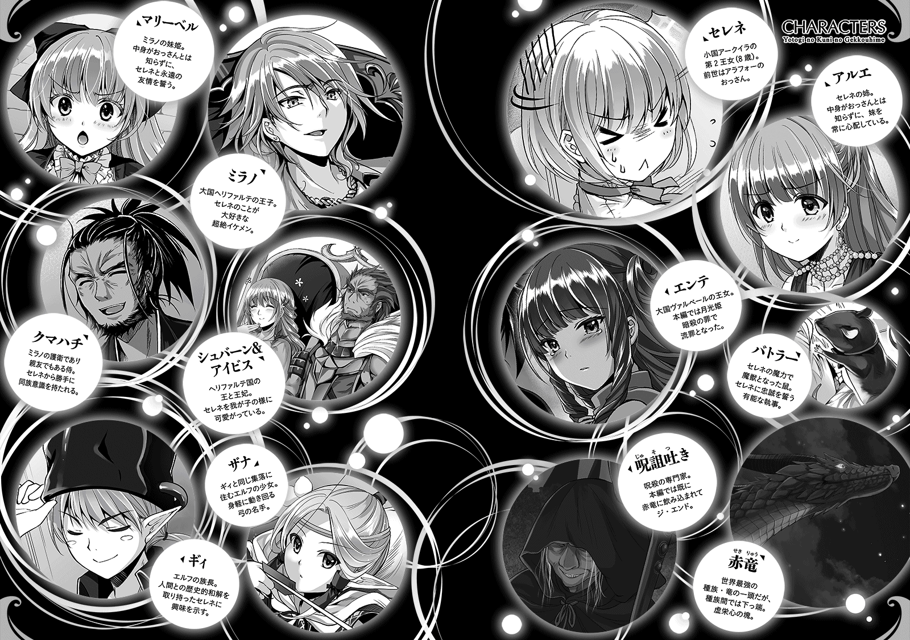

| 夜伽の国の月光姫4 | |
| IV of夜伽の国の月光姫 | |
| 青野海鳥 | |
| (2016) | |
おっさん姫の日常はとんでもエピソードがいっぱい!? アルエ姉様に隠れて自ら断髪したり、王様の背中を足で思いっきり踏みつけてやったり、突然ヒグマやサンタクロースになりきってみたり、何故かクマハチの故郷で新鮮なお刺身＆ウニ食べ放題のウハウハグルメツアーを満喫したりなど、我々の想像の斜め上を行く彼女の奇行を大紹介！ そして、奇行からことごとく繋がる勘違いコンボで、今回もあなたを爆笑の渦に無理矢理引きずり込みます。------めくるめく魅惑のおっさん姫ワールド、それは永遠のストーリー。
Illustration：miyo.N
Design：5GAS DESIGN STUDIO

セレネ、夏なので出家する
セレネが満五歳となり、以前から嫌われていた女王に愛想を尽かされ、アークイラの監禁部屋に閉じ込められて早三ヶ月が経過した。季節は初夏を迎え、当事者であるセレネはというと、慣れないお姫様を演じる必要性がなくなり、すこぶる快適に過ごしていた。
──いや、一つだけ問題があった。
「うおー！ あっちぃー！」
セレネは粗末なベッドに、浜辺に打ち上げられたクラゲのように、ぐんにょりと横たわっていた。
「ラーメン、ソーメン......」
ラーメンよりこの季節はソーメンだよな、などとどうでもいい事を考えつつ、セレネは夏の暑さで、ただでさえだらしない生活に、一層拍車を掛けていた。
セレネの押し込められている倉庫は、窓が一つしかないのであまり風通しが良くない。幸い、すぐ横の森から涼しい風が送られてくるし、湿度もそれほどではないので耐えられないほどではないが、それでも夏の日中はやはり暑い。
そんな暑さを少しでも凌ぐため、セレネは夏仕様になっていた。具体的に言うと全裸だった。
どうせ誰も見ていないのだからと、世話係が食事を持ってきたり、体を拭いたり等、人が来る時以外、セレネは殆どの時間を素っ裸で過ごしていた。
幼い子供ならば食べ零しなどで服を汚すはずなのに、セレネの服は全くそういったものがなく、世話係に任命された者達は、確かに女王の言う通り、普通の子供とはまるで違うと思い込んでいたが、そもそも服を着ないのだから汚しようがない。
「かみ、じゃま」
身体は全裸で良いとして、セレネは暑さの原因である、自らのさらさらとした長髪に指を通す。王宮で過ごしていた頃は、女性は髪を伸ばすものという風潮があったので、セレネもそれに従わざるを得なかったが、前世は短髪だったセレネからすると、暑苦しいし邪魔臭い。
セレネの髪は、肩甲骨の辺りまで伸びていて、姉のアルエは「セレネの髪は、月の光を溶かし込んだ絹糸みたい」と褒めていた。だが、詩的なセンスなど皆無なセレネは、ソーメンみたいだなとしか思わなかった。この髪がソーメンだったら食えるのに。
「もう、かみ、いいや」
今までは王宮のルールを守っていたが、こうして追放された以上、外見に拘る必要もない。髪を切ってさっぱりしよう。セレネはそう思いつき、部屋の隅に置かれた、ひび割れた鏡台の前に立ち、備品として支給されている、あまり切れ味の良くない果物ナイフを取った。
「おきゃくさん、どうしやす？」
「みじかく」
セレネは鏡の前で一人芝居をしながら、果物ナイフを構える。とはいえ、いきなりばっさり髪を切るとアルエが驚いてしまうだろうし、とりあえず少し整えるくらいにして、それから徐々にショートカットにしていこう。セレネは髪を一房掴み、右側から軽く切り取る。
「おわぁ!?」
だが、セレネは不器用だったので、いきなりばっさり切ってしまった。右と左で非対称な、なんとも奇妙な髪型になってしまい、セレネは顔をしかめる。
「ば、バランスを！」
このままではさすがに変だ。今度は左側を切り、長さの調節を試みる。
「うわぁ!?」
今度は左が短すぎる！ また右側を揃えねば......そうして右、左、右と切り続けているうちに、いつの間にやらセレネの頭髪は、発狂したウニみたいになっていた。
「う、うおおーっ！」
これはあかん。あかんでぇ。セレネは中身だけではなく、外見まで変になった頭を抱える。だが、悩んだ所で切り散らかした髪が戻るわけでもない。これはまずい。何とかしなければ。
「そ、そうだ！」
ここはコロンブスの卵、発想の転換だ。なまじ中途半端に髪が残っているから悪いのだ。全て切ってしまえばバランスもクソもない。人類が死滅すれば戦争がなくなるみたいな発想だったが、それ以外に対応策が思いつかなかった。
セレネは果物ナイフで髪の毛をじょりじょり切り落とし、数分後には、高校球児に混じっていても違和感のない髪型と化した。目指せ甲子園。
「よ、よし！ もんだい、ない！」
問題大有りであるが、セレネは自分にそう言い聞かせ、なかった事にした。それに、鬱陶しい長髪から解放された事自体は嬉しい。窓からハゲ頭を突き出すと、爽やかな一陣の風がセレネの丸めた頭を撫でていった。実に爽快な気分だ。
「セレネ、セレネ、今、大丈夫かしら？」
「えっ？」
その時、封印の扉がノックされた。その音と声に、セレネは即座に反応する。最愛の姉である、アルエの声をセレネが聞き逃すはずがないのだ。ここに監禁されてから、アルエと毎日会えなくなった事だけが残念なのだが、こうしてたまに様子を見に来てくれるので、セレネはそれほど気にしていない。
「だいじょ......」
大丈夫、と言いかけて、セレネは慌てて言葉を止める。よく考えたら、今の自分は丸ハゲで、しかも全裸。さすがにこの状態でアルエに会うわけにはいかない。
「ちょ、ま、まって！」
セレネは慌てて服を着込み、床に散乱した髪の毛を適当に纏め、ベッドの下に押し込む。ここまでは良い。問題は頭だ、これを何とかしなければ。しかし、一体どうすればこの窮地を乗り切れるのか。
「あ、あれだ！」
頭を丸めた効果があったのか知らないが、とんち坊主の如く、セレネに妙案が浮かぶ。そして、セレネは即座にその案を実行した。
「ねえさま、いいよ」
それから間もなく、部屋の中から入っていいと聞こえたので、アルエは封印の扉に手をかざす。幾何学的な模様が淡く輝き、扉の鍵が開かれる。
「セレネ、調子はどう？ ......って、どうしたの、その頭？」
「お、おあそび」
部屋に入るや否や、アルエは怪訝な表情でセレネを見つめた。セレネは頭をすっぽりと覆う、蔓で編まれたゴミ箱を被っており。虚無僧みたいになっていたからだ。
「ここには遊び道具がないものね......今度、絵本か何かを持ってきてあげるから、それまで我慢してちょうだいね」
「あ、ありがと......」
普段ならアルエが来ると大喜びのセレネだったが、今だけは早く退出して欲しい。ところが、アルエは上機嫌で何か丸い物を抱えていて、単に様子を見に来ただけではないらしい。
「今日はね、珍しい果物を持ってきたの。一緒に食べようと思って」
「えっ」
セレネがゴミ箱の網目から目を凝らし、アルエの腕を見ると、アルエは梨のような果物を何個か抱えていた。セレネと一緒に食べるため、わざわざ持ってきてくれたのだろう。
「たべたく、ない」
「えっ？ どうして？ セレネ、果物は好きでしょ？」
「すき、だけど......」
セレネは言葉を濁して曖昧に答える。無論、セレネは食い意地が張っているので、食べたくないわけがない。だが、ゴミ箱を被った虚無僧モードでは食べられない。つまり、「食べたくない」ではなく「食べられない」のだ。
「ひょっとして体調が悪いの？ おなかが痛いとか、熱があるとか？」
「ち、ちがう、けど」
「ちょっと熱を測りましょう。それに、そんな物を被ってたら髪が蒸れちゃうわよ」
「あっ！」
セレネを心配したアルエは、果物を体と片手で挟み込み、空いている方の手でセレネの被っていたゴミ箱を取り外し、そして──。
「きゃあああああああああああああああっ!?」
絶叫した。妹のあんなに輝いていた美しい髪はどこにもなく、髪が蒸れるどころかハゲだったのだから無理もない。アルエはあまりの衝撃で意識を失い、ぱたりと倒れた。手にしていた果物が、地面にごろごろと転がる。
「ね、ねえさま！ だいじょうぶ!?」
「......ぅ」
幸い、アルエはベッドの方に倒れたので怪我はないが、セレネは激しく狼狽した。封印の扉が開け放たれたままになっていたので、セレネはそのまま飛び出し、外にいる年老いた庭師に助けを求めた。
庭師は、突如現れた丸坊主のセレネを見て仰天し、監禁部屋に倒れているアルエを見てさらに仰天した。恐らく、長い時間を生きてきた庭師にとっても、生涯で一番強烈な瞬間であっただろう。老人が軽く身体を揺すると、アルエはすぐに意識を取り戻したので、庭師とセレネは胸を撫で下ろす。
だが、アルエは軽く頭を振って意識をはっきりさせると、横にいたセレネの腕をがっちりと掴む。
「セレネ、行くわよ！」
「えっ？ いく？ どこ？」
「お医者様よ！」
アルエはベッドから飛び起きると、凄まじい勢いでセレネの手を引いて外に飛び出した。セレネを秘匿しろという母親の命令など構っていられない。妹の一大事なのだ。
アルエに引きずられるようにして、セレネは城お抱えの医師に診せられた。本来なら女王に報告、許可を取るべきなのだが、妹は明らかに異常をきたしており、そんな悠長に構えている場合ではない。
医師は、一通りセレネの体調を確認してから、風通しのよい部屋にセレネを寝かしつけ、アルエに診察結果を説明する。
「私の見立てでは、セレネ様は肉体的には何の問題もありません。至って健康体です」
「何の問題もないわけないじゃないですか！ あの子、果物も食べたがらなかったし、自分で髪を全部切ってしまったんですよ！ どこか悪いんじゃ......！」
「ふぅむ......身体に問題がないにもかかわらず、食欲不振、自傷行為となると......」
医師はしばらく黙考する。その時間がアルエには不安でたまらない。あんな狭苦しい部屋に何ヶ月も監禁されているのだ、体調を崩してもなんら不思議ではない。
「セレネ様の問題は、ここにあると思われます」
医師はそう言って、人差し指で自分の額を指す。セレネの頭に問題があると言いたいのだろうか。だとしたら、この医師の判断は極めて正確であり、間違いなく名医である。だが、その仕草にアルエは食って掛かる。
「セレネの頭に問題があるっていうんですか!? みんな勘違いしています！ あの子は優しくて賢い子です！ そんなはずありません！」
「落ち着いてくださいアルエ様、表現が悪かったようですな。つまり、肉体ではなく、精神的なものだと言いたいのです」
「精神的、ですか？」
そう言って、医師はアルエを宥める。名医かと思ったがそうでもなかった医師は、アルエにセレネの「病」を説明する。
「極度のストレスによるものだと思われます。動物ですら、狭い小屋で飼い続けていると、自分の毛を毟ったりするのです。むしろ、あれくらいで済んだのは、セレネ様の精神力の賜物でしょう」
「そ、そんな......」
医師の言葉に、アルエは衝撃を受けた。姫として扱われている自分に比べ、妹はなんと過酷な環境で暮らしているのだろう。女性にとって髪は命だ、それを全て切り刻むほど、セレネは追い詰められている。
だというのに、「お遊び」と称し、顔を隠して見せようとしなかった。自分がゴミ箱を外さなければ、セレネはずっと隠し続けていたに違いない。アルエは、妹の気遣いと、自らの不甲斐なさがない交ぜになり、目尻に涙を浮かべる。
「私、今から母様......女王に進言してきます！ このままでは近いうち、セレネが死んでしまうかもしれないわ！」
「分かりました。では、私の方も出来る限り協力させていただきましょう」
アルエは涙を拭うと、物凄い速さで王宮へ戻っていった。実権は女王が握っているが、このままではセレネがあまりにも可哀想だ。今回は髪で済んだが、その刃を自らの胸に突き立てる日が来るかもしれない。そう思うと、アルエは怒りと焦燥感に掻き立てられ、大股で廊下を歩き、直談判に向かった。
普段温厚なアルエが激昂したのと、髪を全て切り刻んだ事は、母である女王にとってもさすがに衝撃的だったのか、セレネは夏の間、王宮の一室にひっそりと監視付きで移動される事になった。
「ごめんなさいね。今はこれくらいしかしてあげられないけれど、私も力を付けて、必ずあなたを助けてあげるから、早く元気になってね」
「きに、しないで」
「セレネ、もう気を遣わないでいいのよ。果物、また持ってくるからね」
「うん！」
セレネとしてはあの部屋から出る必要性は感じなかったが、とりあえず前より涼しい部屋に移れたし、姉が見舞いに来る頻度が増えたしで、結果オーライだった。
丸坊主は二度としないとアルエに誓ったのだが、結局、再発防止のため刃物を没収される事になった。この事件のせいで、セレネは自分で髪を切る事が出来なくなったのだが、暑い部屋で過ごすため、髪を短くしたいという意見は取り入れられ、それ以降、肩の辺りで切り揃えるくらいの髪型となった。
「でも、はんせい」
とはいえ、アルエに無駄な心配を掛けさせてしまった事も事実であり、その点はセレネも反省していた。そうして秋になり、髪が多少ましになった頃、再びセレネは監禁部屋へ戻される事になった。
アルエは、文句一つ言わず、暗い穴蔵へ押し込められていくセレネの姿を見て、一刻も早く不憫な妹を救わねば、そして、そのための何か大きなきっかけが来る日を、心待ちにするのだった。
──それから二年後、アルエの望む救済、そしてセレネの受難の日々が始まる。
本当の友達
「おまじない、ちょっと強引過ぎたかしら......」
ヘリファルテ王宮の中庭、その片隅に設置された小さな池のほとりで、マリーは小さなため息を漏らす。先日、セレネと『永遠の友達』になるおまじないを交わしたものの、その事が逆にマリーの悩みの種になっていた。
別にただのお遊びのようなものなのだが、貴族のおべっかにうんざりしていたマリーは、これまで一度もした事がなかったし、現状セレネ以外とやる気もない。だが、今思い返してみれば、あの時はマリーが勢いでセレネに教え込み、無理やり押し付けてしまったのでは。そんな考えがふと浮かんできたのだ。
「セレネ、気を悪くしてなきゃいいけど......」
同い年の友達がいないマリーは、他人との付き合い方が良く分からない。権力を振りかざせば尻尾を振る連中はいくらでもいるが、本当の友達と呼べる人間は一人もいない。
セレネが心優しい子である事は間違いない。だから、押しの強い自分に合わせてくれているだけなのでは。もしそうなら、それは本当に友達と言えるのだろうか。どうしてもそんな気持ちが湧いてきてしまうのだ。
「あっ」
そんな事をぼんやりと考えていたせいか、マリーは指輪を一つ池に落としてしまった。ぽちゃん、と小さな波紋を立て、指輪は池に沈んでいく。この池は景観のためだけに作られたもので、水深は浅く、手を伸ばせば充分届くのだが、池に手を突っ込むと汚れるので嫌だった。
「ま、いいわ」
別段それほど高い指輪でもないし、宝石の類なら他にいくらでも持っている。マリーは気を取り直し、王宮へと戻っていった。
王宮へと帰還したマリーは、そのままセレネの部屋へと向かう。単にセレネに会いたいという気持ちもあるし、なるべく会って話さなければ、友人という関係でいられなくなるのではという不安もある。一度得たものを失う事は、最初から手に入らないのよりずっとつらい。マリーはそれが怖かったのだ。
「マリー、おはよ」
「おはようって、もうすぐ夕方よ」
相変わらずセレネは昼に弱く、少し眠たそうにしながらもベッドから身を起こす。セレネとしては、マリーとの会話は、姉から離れてからの数少ない癒しの時間なのだ。
そうしてマリーは、セレネに日中の授業や、そのほか他愛もない出来事を話す。ここ最近、それがこの二人の日課になっていた。勿論、ずっと喋り続けるのはマリーだ。セレネに気の利いた話など出来るはずもないし、強制的に聞き上手にならざるを得ないのが、マリーにもセレネにも幸いしていた。
「城下町に綺麗なお洋服を作る店が沢山あるのよ。今度、一緒に行きましょ？」
「うん、まあ......」
（やっぱり私の話、つまらないのかなぁ）
マリーは女の子なら誰もが食いつきそうな話題を一生懸命話すのだが、セレネは曖昧に笑って頷くだけだ。それが余計、マリーの心をざわつかせる。やはりセレネは、表面を取り繕ってくれているだけなのではないだろうか、と。
取り繕うとか以前に、セレネの中身は中年男性なのだから、十歳の女の子の好みとはかけ離れている。マリーの話がつまらないのではなく、セレネが狂っているだけだ。むしろ被っていたら困る。
「あ、そうそう。今日、池に指輪を落としちゃったのよ」
「いけ？ どこの？」
頷くだけで殆ど返事をしないセレネが、池の部分に興味を引かれたらしく、少し身を乗り出したので、マリーは少し語気を強め、そのまま言葉を紡ぐ。
「中庭に小さな池があるのよ。何となく立ち寄ったんだけど、行かなきゃよかったわ。別になくして困るものでもないけど」
「そっかー」
洋服や薔薇園の話には食いつきが悪いのに、なぜ、単なる池の事など気にするのだろう。マリーは疑問に思ったが、気が付けば随分と時間が経っていた。以前、自分に付き合わせてセレネの体調を崩させてしまった事もあり、マリーは後ろ髪引かれる思いで部屋を後にした。
「いけ......」
『姫、どうなされました？』
「ちょっと、さんぽ」
マリーが出て行くと、セレネはベッドから抜け出し、服を着替えて一人で部屋を出る。ヘリファルテの王宮に近い敷地内を歩くだけとベッドの下のバトラーに言い残し、王宮を後にした。時刻は既に夕方になっており、空は茜色に染まっている。
長い影法師を作りながら、セレネは教えられた池へと辿り着いた。広大な中庭でも王宮から割と近い場所にあるので、セレネでもやすやすと歩いて来られる。非常用の貯水池ではなく、本当に景観を整える目的の子供用プールくらいの小さな池だ。
そこには何種類かの綺麗な魚が、気持ち良さそうにのんびりと泳いでいた。よく晴れた日に、この池の横の芝生の上でお茶会などをしたら、さぞや爽快な気分になれるだろう。
──と、普通なら考えるだろうが、セレネの目的は全く違っていた。
セレネは池の周りの石に手をつき、腕まくりしてそっと手を浸す。水深は非常に浅く、小さなセレネでも底に手がつく程度だ。恐らく三十センチそこそこといったところか。春の日差しで水温もそれほど冷たくなく、泳げないセレネでも溺れる事はないだろう。
「よし、くうぞ！」
セレネは輝くような微笑を浮かべた。ヘリファルテもアークイラも、海がそれほど近くないため魚を食べる文化があまりない。元日本人であるセレネとしては、たまに無性に魚が食いたくなる。美味いかどうかは分からないが、魚の数は結構いるし、一匹や二匹いなくなってもばれないだろう。やったぜ。今夜は焼き魚だ。
野生の魚を捕まえるのは至難の業だが、外界から守られ、こんな小さな池で平和ボケした魚など一網打尽にしてくれようぞ。
「ぬるいぜ」
セレネはそう呟いた。ちなみに今の「ぬるいぜ」は、難易度的にぬるいという意味と、水温がぬるいという掛け言葉のつもりだ。自分では知的で上手い事を言ったつもりだったが、大して上手くもないし、知的でもないし、どうでもよかった。
そうして夜になると、バトラーには手洗いに行くからと虚偽報告し、セレネは生簀、世間一般には観賞魚の溜め池と呼ばれる場所へ向かった。
「あみ、なかった......」
月光を頼りに池のほとりまで歩いてきたセレネは、到着すると悔しそうに呟いた。一網打尽どころか、そもそも網が手に入らなかったのだ。そこで諦めればいいものの、食い意地が張っているセレネは、手づかみで魚を獲るという暴挙に出る事にした。
過去世のセレネが少年だった頃、近所の田んぼで手づかみで魚を捕まえた事がある。既に風化した数十年前の話であり、小学生の頃にとった百点のテストを自慢するような情けない話である。
「わたし、ヒグマぁっ！」
そう、自分は北海道の激流の中、シャケを捕えるヒグマとなるのだ。そう自己暗示を掛け、セレネは水底に泥の溜まった池へ、何のためらいもなく素足でざぶざぶ入っていく。一応、ドレスの裾は縛っておく。アークイラの家を数軒買える値段のドレスは、体操着みたいな扱いをされていた。
「おらあっ！」
セレネは透き通る水面に目を凝らし、手近な魚に襲い掛かる。しかし、流石にそう簡単にはいかない。確かにここの魚達は平和ボケしているのかもしれないが、霧の摩周湖のように脳内が霞んでいるセレネに捕まる間抜けはいない。
「うおおーっ！」
それでもしつこさだけは一級品だ。セレネは何度も水の中に両手を突っ込む。だが、ことごとく空振りだ。セレネとしては熊になった気で両手を振り回していたが、傍から見ると単に水を引っ掻き回しているようにしか見えない。
「てごたえ、あり！」
だが、下手な鉄砲でも数打てば当たったのか、セレネの手に何かが引っかかった。必死で握ったその物体はただの藻だが、その中に、深緑色の宝石の付いた指輪が絡み付いていた。
「ちっ」
なんだ、ただの指輪か。そういえばマリーが昼間なくしたと言っていたが、それほど価値がないとも言っていた。目的の魚ではないハズレに舌打ちしたが、セレネは一応それを懐に突っ込んだ。さあ、漁業再開である。
「セレネっ！ 一体何してるのよっ！」
「はうっ!?」
唐突に後ろから大きな声を掛けられ、セレネはびくりと身を震わせる。慌てて後ろを振り返ると、そこにはマリーが立っていた。
「ま、マリー、なんで？」
「何でじゃないわよ！ セレネの部屋に行ったら誰もいないんだもの。今、お城の人達が総動員で捜してるのよ！」
「えぇ!?」
「心配したんだから......ああもう！ そんなにドロドロになっちゃって！ 何でそんな事してるのよ！」
「みず、したたる、いい、おんな、えへ、えへへ......」
セレネは何とか誤魔化そうと、えへえへと卑屈な笑みを浮かべたが、無論そんな物でどうにかなるわけがない。マリーは後ろに付き従っていた兵士に指示を出し、池からセレネを引き上げさせる。
そのままセレネは、問答無用で風呂場へ強制連行された。身を清められた後、アイビスに滅茶苦茶怒られた。ミラノだったら無視していたが、巨乳王妃だったので、セレネはしおらしく謝罪し、それで一応事件は解決となった。
「はぁー......」
セレネは自室に戻り、寝巻きに着替えてベッドに横たわった。今日は厄日だ。結局、魚は食えず、無駄に疲労感だけが残る結果となった。でも、最後にアイビスが「心配掛けちゃ駄目よ」と優しく抱きしめてくれたので、総合で見ればそんなに悪くないかも、などとくだらない損得勘定をしていた。
『姫、お疲れ様でした』
「つかれた」
『しかし、なぜ私に頼まなかったのですかな？』
「わたし、やらなきゃ、だめ」
池の鑑賞魚を盗んで食いたいなどと言ったら、いくらセレネに甘いバトラーでも反対するだろう。これは、セレネが一人でこっそり成し遂げなければならないミッションだったのだ。
だが、そのセレネの言葉を聞いたバトラーは、なぜか満足げに目を細めると、穏やかな笑みを浮かべた。
『確かに、これは姫がやらねばならない事ではありましたな。後の事は、私がきちんと処理をしておきましたのでご安心を』
「......は？」
意味が分からん。セレネがバトラーに問いただそうとした時、丁度セレネの部屋の扉がノックされた。セレネが入っていいと言う前に扉が開いたが、そこに佇んでいたのはマリーだった。
「マリー、どしたの？」
「その、あの......セレネ、さっきは怒っちゃってごめんなさい」
「べつに、いい」
金髪ロリに怒られるのはむしろご褒美だ。セレネは本当に気にしていなかったが、マリーは少し申し訳なさそうに俯いていた。
「ねえセレネ、正直に答えて。あの池で、一体何をしてたの？」
「そ、その......」
夜中にこっそり池に忍び込んで、あなたの家の魚を食おうとしてました、とはさすがのセレネも言えずに口ごもる。マリーは今にも泣き出しそうな表情だ。もしかして、マリーが飼っている魚だったりしたのだろうか。セレネとマリーの間にしばし沈黙が流れるが、マリーがセレネの枕元に近づき、手を差し出す。
「これ、捜してくれてたんでしょ？」
「......ぇ？」
そう言ってマリーが差し出した手には、先ほど池で拾った指輪があった。魚が食えずに意気消沈していたセレネは、指輪の事など頭の片隅にもなかったし、そもそも服は洗濯に出されている。なぜ、マリーが持っているのだろう。
『姫の洋服が洗濯に出される前に、私がマリーベル様の部屋の前に届けておいたのです』
バトラーはベッドの下からこっそりと、しかし、得意げにそう答えた。
マリーが池に指輪を落とした事は、ベッドの下でバトラーも聞いていた。だが、バトラーが仕えているのはセレネであってマリーではない。故に干渉する気はなかったのだ。
しかし、夕方にセレネが池の様子を見に行き、さらに夜になって出かけて行った時点で、バトラーはセレネが何をしようとしているのか、すぐに気が付いた。
──かけがえのない友人のため、その身が汚れる事も省みず自ら指輪を捜しに行ったのだ。
勿論、危険がない事はバトラーも承知している。事前調査はしっかりと行っていた。それで、敢えてセレネには気付いていないふりをした。いざとなれば、自分と部下のネズミたち総動員で捜すつもりであったが、必死で池の中をかき回す主に対し、バトラーは声を掛けられなかった。
そう、これはセレネの、マリーに対する友人としての心意気であり、いくら執事といえど踏み込んではいけない。セレネの鬼気迫る態度は、そう語っているように見えた。
幸いセレネは指輪を見つける事に成功したが、状況を知らぬ者達にそのまま連れて行かれてしまった。こういう時こそ執事の大事な役目だ。バトラーはセレネの洋服から素早く指輪を抜き出し、マリーベルの部屋の扉の前に置いたのだ。後は現状の通りである。
「セレネ、ありがとう！ 私、凄く嬉しい！ この指輪、宝物にするわ！」
感極まった様子で、マリーはセレネに抱きついた。そして、心の中の不安が氷解していくのがマリー自身にもよく分かった。
自分は何という馬鹿なのだろう。今まで、セレネのように泥まみれになりながら、たかが安物の指輪一つを捜してくれる友人など、マリーには一人もいなかった。セレネは口数は少ないが、友情を行動で示してくれた。マリーにとって、それが何よりも嬉しいのだ。
「わたしも、うれしい」
マリーに抱きつかれたセレネも微笑みを返した。魚が食えなかったのは残念だし、指輪一個見つけただけで、何だかよく分からないが感謝されて抱きつかれたのだ。マリーはまだ胸がないので、柔らかさはいまいちだが、金髪ロリ美少女に抱き付かれるというリアリティを加味すれば、なかなかの高得点といえるだろう。
魚に関しては、ほとぼりが冷めた頃にこっそりと獲りに行こう。出来れば網か竿を用意し、今日の失敗を明日の成功に繋げればよい。セレネは、今日のところはマリーに抱きつかれた事で満足しておく事にした。
そんなセレネの邪な考えを知らないマリーは、大事そうに両手で指輪を包み込み、自室に戻ると、一番大事なものを入れておく宝石箱にそっとしまい込んだ。この小さな宝石の付いた安物の指輪は、マリーにとっては一生の宝物になった。
なお、皆もご存知の通り、このあとセレネは様々な出来事に巻き込まれ、とても池の魚を狙う状況ではなくなる訳だが、それはまた別の話である。
マッサージ
ヘリファルテ王宮の自室で昼過ぎに目を覚ましたセレネは、目を擦りながら首を回す。
ここ最近、セレネはエルフとの会合に強制参加させられているので、それなりに疲労が溜まっていた。
ただ座っているだけの簡単なお仕事なのだが、セレネにとっては労働は呪いのようなもので、その場の空気を吸っているだけで体力を消耗していく。
決まった時間に起き、決まった時間に正装をしなければならないのも苦手だった。
特にあの衣装は重苦しく肩が凝る。
「ん？ かたこり？」
肩凝り、という単語が頭に浮かぶと同時に、セレネはある話を思い出した。
女性の肩凝りの原因の一つに、胸の重さがあるという与太話である。
前世の業務内容などの記憶は縄文土器レベルの過去の遺物と化しているのに、そういう記憶だけは、今でも脳内で燦然と輝いているのだ。
「いやし、ひつよう」
今の自分は疲れ果てている。そんな荒んだ生活には癒しが必要だ。そして、癒しと言えば女性の胸である。セレネのベストオブおっぱいは当然アルエなのだが、大学にいるのでなかなか会いに行く事が出来ない。となると、最寄のおっぱいは、やはりアイビスだろう。
「よし、しゅつげき！」
思いつくや否や、セレネは早速アイビスの胸を揉むため、服を着替えて部屋を後にする。とはいえ、いきなり部屋に押しかけて「胸を揉ませてください」と言っても、首を傾げられるだろう。でも大丈夫、セレネはこういう時だけ悪知恵が働くので、廊下を進みつつ即座に計画を練り上げる。
以下、セレネが考えた計画である。
『あら？ どうしたのセレネちゃん？』
『こわいゆめ、みた』
『あらあら、じゃあ、私が抱っこしてあげるから、一緒にお昼寝しましょうね』
『ママーッ!!』
以上。雑だった。
「ママン......」
セレネは足を止め、思わずそう呟いた。何がママだ。
そもそも、おっさん時代の年齢と今の年齢を足せば、セレネの方がアイビスより歳上である。
それ以前に、セレネの母親は絶賛存命中である。恋焦がれるママは本来そっちのはずなのだが、セレネの母親はあまり好みのタイプではなかったし、生まれたばかりの頃に散々吸い尽くし、大分飽きていたので興味はない。
掃き清められた大理石の廊下を歩き、セレネはアイビスの寝室に辿り着いた。今のセレネはヘリファルテでも重要人物であり、王宮内をほぼ自由に歩き回る事が出来る。それをいい事に、今から欲望に塗れた計画を実行しようという訳だ。
「おうひさま、おうひさま」
「あら？ その声はセレネちゃんかしら？」
セレネがドアを軽くノックすると、柔らかな声が返ってくる。アイビスが予定通り部屋にいた事に、セレネは胸を撫で下ろす。後は、先ほど考えた流れで一緒のベッドに寝かせてもらい、胸に顔を埋めて眠ればミッション完了である。
「おお、セレネか。お前が訪ねてくるとは珍しいな」
「えっ」
ところが、開かれた扉の前に立っていたのはアイビスではなく、巌のような巨躯を持つ、獅子王シュバーンであった。セレネは面食らい、固まった。
「今ね、ちょうどお茶をしていた所だったのよ」
ドアを開けたシュバーンの後ろには、アイビスがのんびりと椅子に座っているのが見えた。
王族の部屋にしては調度品は少なく、けれど上品な黒檀の丸テーブルが部屋の中心に置かれ、その上には、お菓子とティーポット一式が置かれている。
セレネは夫婦の営み中かと勘ぐったのだが、どうやら本当にお茶をしていただけらしい。
「お、おうさま、な、なんで？」
「ははは、国王とてたまには休息を取るさ。それとも、えらい王様は、常にしかめ面をして玉座にいるとでも思っていたか？」
シュバーンが厳つい顔を緩め軽口を叩くが、セレネはそれどころではない。このままでは計画が台無しだ。てっきりアイビス一人だと思っていたのに、さすがに国王が見ている前で、人妻とベッドに入るわけにはいかない。
「それで、私達に何か用か？ 大学への出資の話か？」
「え、ええと、その、あの、ま、マッサージ......」
「マッサージ？」
不可解なセレネの言葉に、シュバーンは眉を潜める。
セレネは必死だった。このまますごすご引き下がるのは嫌だったし、最近おっぱい成分が体から抜けている。このままでは持病の乳房欠乏症が悪化してしまう。
計画変更だ。マッサージと称し肩を揉み、そこからどさくさに紛れ、うなじに抱きつき、手を滑らせたふりをして乳を揉む。蛹から蝶へと変態するように、第一次おっぱい計画を変態させねばならない。変態は変態でも、別の変態である。
「えらいひと、かたこりひどい、わたし、わかった」
「そうねぇ、最近はセレネちゃんも引っ張りだこだものね。気が利くわね」
「えへへ」
よし、いい流れだ。内心でガッツポーズを取りつつセレネは微笑んだ。本当はアイビスの温もりに包まれて一眠り出来れば最高なのだが、急な計画変更としては上出来だろう。
「そうか。セレネがマッサージをしてくれるのか。それは楽しみだ」
「えっ!?」
だが、弾んだ声で答えたのは、アイビスではなくシュバーンだ。
「最近は国政に加え、エルフ達との交渉も増えたのでな。肩が凝っていたのだ。どれ、セレネに一つ揉んでもらうとするか」
「えっ......あっ!?」
そこでセレネは重大なミスに気が付いた。セレネは「マッサージをする」とだけ発言した。アイビスをマッサージしたいと伝えるべきだったのに、「えらいひと」と言ってしまった。結果、シュバーンに誤射してしまったというわけだ。
「おうさま、おおきい。わたし、ちからない、むり」
それでもセレネは軌道修正を試みる。あんな岩の塊のような男を揉むなど苦行でしかないし、間違いなく疲れる。というか、とにかくやりたくない。
「気持ちだけでも嬉しいのよ。マリーはあんまりそういう事をやってくれないから」
「で、でも......」
アイビスは笑いながらセレネの頭を撫でて促す。前かがみになると、大きな乳房が重力に引っ張られ、反則級の大きさになるのだが、眼福と言える余裕がないほどセレネは追い詰められていた。
「確かに、セレネの指圧では効きそうもないな。よし、では踏んでもらうおうか」
「おうさま、ふまれたいの!?」
セレネは吃驚した。まさか、この威厳ある国王に、そういう性癖があるのだろうか。確かにアイビスは女王であり、女王様やお姫様に踏まれて喜ぶ人間というのは存在するが、まさかシュバーンまでそういった人種なのだろうか。
「セレネは力がないだろう。私が横になるから、背中を踏んだ方が楽だろう」
「よかった......」
セレネは安堵した。いや、安堵している場合ではない。これでは結局、当初の目的が果たせない。救いを求めるように、セレネはアイビスに、上目遣いでアイコンタクトを試みる。
しかし、アイビスは慈愛の眼差しをセレネに向けると、そのまま椅子に座りなおしてしまった。やはり言葉に出さなければ意思は伝わらないのである。
「どっこいしょっ、と。さあ、思う存分やってくれ」
「え、でも......おうさま、ふめない」
アイビスのベッドにうつ伏せになったシュバーンを見て、セレネは一歩後ろに引いた。何が悲しくて、体力を使ってまで、屈強な壮年のマッサージをしなければならないのだろう。
どうすればこの窮地を逃れられるのか、セレネが必死に頭を回転させていると、不意に肩に温かな感触が広がる。セレネが振り向くと、先ほどまで座っていたアイビスが、セレネの肩に手を置いていた。
「セレネちゃん、王様だからって遠慮しなくていいのよ。私達、もう家族みたいなものでしょう？」
「ええっ」
てっきり救いの手が差し伸べられたと思っていたのに、アイビスの発言はセレネを奈落へ突き落とす。アイビスは、居候のセレネが、国王を足蹴にする事を躊躇していると思い、助け舟を出したつもりらしい。だが、セレネにとってその気遣いは助け舟ではなく泥舟だった。もはや沈むしかない。
「ううっ、わ、わかり、ました......」
ここまで言われてしまっては逃げようがない。セレネは覚悟を決め、ベッドの上によじ登り、シュバーンの背中を恐る恐る踏んづけた。クマハチより強面の男を踏むのは嫌だし恐ろしいのだが、シュバーンは実に機嫌よさそうだった。
「おお、いい感じだぞ。だがセレネは本当に軽いな。沢山食べて、早く大きくなるんだぞ」
「......あい」
セレネは曖昧に返事をすると、やけくそ気味にシュバーンの背中を踏みつけていく。もう壮年と言っていい歳なのに、シュバーンの全身は筋肉ではち切れんばかりで、まるでタイヤでも踏んでいるような感触だ。
こうなったら一刻も早く終わらせるしかない。セレネは無我の境地でシュバーンの背中を一心不乱に踏み続けた。ふみふみ。
「うん。大分楽になったぞ。やはり、可愛らしいお姫様の真心が篭っているからかな」
「ふふ、あなたったら随分と機嫌がいいわね。セレネちゃん、ありがとう」
「......うん」
そうして数十分シュバーンを踏み続けた報酬として、セレネはテーブルの上のクッキーを小袋に詰めてもらい、そのまま部屋を退出した。
「あ、あしが......」
普段運動不足のくせに、青竹踏みのような健康的な動きをさせられたせいで、セレネの足はぱんぱんになっていた。そして、その報酬として手に入ったのは、一袋のクッキーである。割に合わなすぎる。おっぱい計画は惨パイだった。
セレネは、右手にクッキーの入った小袋を抱え、左手で壁に手をついて身体を支え、そして、心と身体に多大な徒労感を抱え、ほうほうの体で自室へと帰還したのだった。
デビルクリスマス
「え？ 赤いドレスが欲しい？」
「うん」
ある日、セレネは珍しく日中に起きると、唐突にマリーの部屋を訪れた。寝る場所──つまりベッド以外はシンプルなセレネの部屋と違い、マリーの部屋にはぬいぐるみや様々な花が飾られ、麗らかな秋の日差しの中、マリーの金の髪と共に輝いているように見えた。
「別にいいけど、セレネが服を欲しがるなんて珍しいわね」
「あかいふく、ほしい」
セレネはアークイラ産のドレスが一番のお気に入り......と思われていたので、マリーからしてみると、このおねだりは意外だった。
事実、アイビスがセレネに対し沢山の洋服を贈ったが、殆ど袖を通していない。セレネには派手な色があまり似合わないと思い、どぎつい赤色の服は贈られていなかったので、マリーにねだるのは間違っていないが、一体どんな心境の変化なのだろう。
「セレネにはまだちょっと大きいかもしれないけど、お古のドレスならあげるわ」
「ありがとう！」
セレネは表情を輝かせ、マリーがクローゼットの奥から出した赤いドレスを受け取った。古着といっても、マリーの持っているドレスは一級品ばかり。しかし、高級品かどうかはどうでもいい。セレネにとって重要なのは「赤い服」である事だ。
そうして意気揚々と部屋に戻ったセレネは、早速そのドレスを着込む。少し体に余る感じだが、動きに支障はなさそうだ。
『姫、突然マリーベル王女の部屋に出向かれたようですが、何事ですか？』
「くりすます」
「クリスマス？」
耳にした事のない単語に、ベッドの下から現れたバトラーはオウム返しで問い返す。そんなバトラーに、セレネはいい加減なクリスマスについての講義を始め、バトラーは何とか内容を理解した。
『つまり、アルエ姫に日頃の感謝のため、プレゼントを届けたいという事でしょうか？』
「だいたい、あってる」
厳密に言うと違うが、目的は達成出来るので、セレネはそれで良しとした。もっと言うと、今日はヘリファルテでは平日も平日、何のイベントもない一日だ。
セレネがこの世界に生まれ落ちて早八年、既に地球の日付などすっかり忘れてしまったが、何となく、時期的にそろそろクリスマスな気がしただけだった。違うかもしれないが、そんな事はどうでもいい。
言うまでもないが、クリスマスとはキリスト教のイベントであり、当然この世界にキリストはいない。逆に言えば、言ったもん勝ちであり、セレネが今日はクリスマスと言えば、その日がクリスマスなのだ。ハロウィンならハロウィンだし、サラダがいいねと言えばサラダ記念日だ。
というわけで、大学に移籍してきたアルエのため、セレネは思いつきでクリスマスを行う事にした。そう、サンタがいなければ自分自身がサンタとなるのだ。セレネは、こんな時のために用意していた「ある物」を小箱に詰め、上質な生地で作られたハンカチで綺麗にラッピングした。
「ぼうし、ひげ......ま、いいや」
出来ればサンタの赤帽子と白ひげが欲しかったが、今すぐ調達するのは無理だ。自分が白髪赤目だし、赤い服も装備したので、まあ大体サンタっぽいだろう、という事で妥協する事にした。セレネは、ありとあらゆる準備がいい加減なのだ。
さて、最大の問題は、サンタの乗るソリ、そしてそれを引くトナカイであるが、セレネはこれも代替案を用意していた。
「バトラー、おねがい、ある」
『はっ、何でございましょうか？』
セレネの前に駆け寄り、恭しく礼をするバトラーに、セレネはそっと耳打ちした。
「じゅんび、オッケー」
その日の深夜、セレネは早速、作戦を実行する事にした。立案から半日で実行される電撃作戦である。目的は、アルエにクリスマス（自称）プレゼントを届ける事。
「バトラー」
『はい、準備出来ております』
バトラーに促され、セレネは周りの目を気にしつつ部屋を出る。そして、王宮から少し離れた敷地内の森の中に移動した。木の葉で巧妙に覆い隠された「それ」にセレネは手を当て、上の葉っぱを払いのける。すると、ところどころ穴が空いた、おんぼろの台車があった。
『申し訳ありません。なにぶん急でしたので、果物屋近くに廃棄されていた物しか用意できませんでした。しかし姫、何もこんなガラクタに乗らずとも、昼間に馬車で移動すればよいのでは？』
「えんしゅつ」
『はあ......』
バトラーからすれば、セレネの考えがいまいち理解出来ないが、主が頑なにそう言うなら仕方ない。セレネは意気揚々と、朽ち果てた難破船のような台車に乗り込む。すると、まるで生きているかのように、その台車が蠢いた。
『よし、では出発するぞ！ 人目に付かぬよう気を付けつつ、迅速な行動を開始する！』
バトラーがよく通る声で指示するや否や、台車の下から、きいきいと呼応するかのように夥しい鳴き声がする。あれは──ネズミの群れだ。オンボロ台車の下には、信じられないほどのネズミたちが、波打つ黒い影のように巨大な塊になっていた。
「では、ものども、しゅつげき！」
セレネが偉そうに大学のある方向を指さすと、ネズミたちは進軍を開始する。ネズミたちの担いだ台車は、駿馬の引く馬車にも劣らぬ速度で森を抜け、巡回の兵士たちの目を潜り、敷地を抜け、ヘリファルテの王都へと歩を進める。
シンデレラは舞踏会に向かう時、馬車を引かせるため、ネズミを馬に変える素敵な魔法を掛けられたが、ネズミそのまんまの物量作戦、ごり押しで突き進むのがセレネ流だった。
時刻は既に深夜。街は静寂と闇に包まれている。その暗闇の中、黒い波に乗った幽霊船のようなセレネのソリもどきは突き進む。目指すはアルエの寝室だ。
なるべく目立たないよう、忍者の如く夜の街を進んだセレネたち一行は、バトラーの卓越した誘導もあり、誰にも見つけられる事なく、アルエのいる大学の前に着いた。こちらも人影は見えない。だが、見張りこそいないが、正門の鉄の扉は固く閉じられていた。
「むぅ」
『姫、ご安心ください。お前たち、陣形を変えるぞ！』
バトラーがネズミたちに指示を出すと、ネズミたちは、数メートルもある黒い巨人へ形を変える。その巨体を足場にし、セレネとバトラーは、難なく鉄の扉を乗り越えた。無論、不法侵入である。
以前、アルエの部屋で一緒に寝た事があるので、セレネはアルエの部屋を知っている。正門さえ潜りぬけてしまえば、後はたやすい......と思ったが、残念ながらアルエの住まう寮の入口の扉には、内側から鍵が掛けられていた。
「うう、あかない！」
『姫、ここは私にお任せを』
バトラーは素早くセレネの肩から身を翻し、ドアのほんのわずかな隙間から忍び込んだ。そして、内側から、やすやすと鍵を開ける。盗みなどという下賤な事はしないが、偵察や侵入という事に掛けて、この大陸でバトラーの右に出る者はいないのだ。
『さぁ、どうぞ』
「バトラー、ありがと」
『何をおっしゃられます。全てはセレネ姫とアルエ姫のためでございます。そのためなら、このバトラー、いかなる障害でも排除いたしましょう』
偉大なる主に褒められ、バトラーはご機嫌で尻尾をぴんと立てた。セレネはバトラーを軽く撫でてやりながら、これまた不法侵入した寮内で、迷う事なくアルエの部屋に辿り着く。小難しい事は一瞬で忘れる癖に、アルエに関しては絶対に忘れないのがセレネの特技だ。
アルエの部屋に鍵は掛かっておらず、セレネ達がそっと部屋に入ると、アルエは気持ちよさそうに眠っていた。そのベッドに飛び込みたい衝動を抑えながら、セレネは用意してきたプレゼントの小箱を、アルエの枕元にそっと置いた。
『アルエ姫には内緒なのですか？』
「うん、おどろく」
『なるほど、朝になって起きた時に、枕元に素晴らしいプレゼントがあるという訳でございますな。姫、なかなか粋な事を考えられますな』
「うん」
別にセレネが考えたわけではない。最初にクリスマスプレゼントの小粋な計らいを考えた、誰かの手柄を横取りしただけである。
とにかく、目的を果たしたセレネは、行きと同じ黒いネズミの巨人で脱出し、これまた地を這う幽霊船に乗ってヘリファルテ城へと帰還した。ミッションコンプリートだ。
『ところで姫、あの箱の中には何が入ってたのですかな？』
「ひみつ」
セレネは軽く笑うだけで、バトラーに教えようとはしなかった。
「ん......あれ？ 何かしら、これ？」
数時間後、朝日と共に目覚めたアルエは、枕元に見覚えのない小箱がある事に気が付いた。目を擦りながら、綺麗な布で梱包された箱を不思議そうに見つめる。誰かが置いて行ったとしか考えられないが、一体誰だろう。
「おかしいわね、寮には鍵が掛かっているはずだし......」
突如現れた謎の物体に、アルエは喜びよりも薄気味悪さを感じた。自分が寝ている間に、誰かが潜入したのだから無理もない。恐ろしくなって窓を調べるも、きちんと窓は施錠されており、開けられた形跡はない。
「一体何なの......とにかく開けてみないと」
正体不明の箱の出所が気になるが、とにかく中身を確認しなければ。アルエは、緊張した面持ちで包装を解き、恐る恐る箱を開き──。
「きゃあああああああ!?」
アルエの叫びが寮内に響く。まだ朝も早く、寝ていた学生たちも多かったのだが、アルエの耳をつんざくような叫び声で起きたのか、一斉に部屋を飛び出し、アルエの部屋の外から覗き見る。
「な、何よこれ？ ......蛇の抜け殻？」
小箱に入っていたものは、なんと蛇の抜け殻であった。可愛らしい小箱に上質な布による梱包。だというのに、中にこんな不気味な物を詰めるという悪趣味な真似、一体誰がしたのだろう。自分に恨みを持つ誰かの嫌がらせだろうか。そんな考えがアルエの脳裏によぎる。
「本当なのよ！ 昨日、悪魔を見たのよ！」
アルエがおぞましい蛇の抜け殻に目を釘づけにされていると、部屋の外から、大きな声が聞こえきた。どうやら、今度は別の学生の部屋で騒ぎが起こっているらしい。
「嘘じゃない！ 本当に見たのよ！ 昨日の夜ね、教室に財布を忘れたのを思い出して捜しに行ったの。そしたら、正門前に、黒い大きな影が蠢いてたのよ！ それも二メートル......いや、三メートルもある奴！ 本当よっ！」
半狂乱で喚き散らしているのは、どうやら別の寮の学生らしい。黒い影を見た恐怖で、昨夜は一睡も出来ず、朝になり、ようやくこちらの寮にいる学友に救いを求めに来たらしい。作り話にしては怯え方が尋常ではなく、周りの学生たちも真剣に耳を傾けていた。
「黒い影......不吉ね」
アルエはそう呟いて、小箱に入った蛇の抜け殻に再び目を向ける。この不気味な抜け殻は、もしかしてその黒い影を呼び寄せる呪いの道具か何かなのだろうか。一体誰が？ どうやって？ 何の目的で？ 様々な疑問が浮かぶが答えは出ず、アルエはおぞましさに身震いした。
とりあえず、アルエは蛇の抜け殻の入った箱を厳重に梱包しなおした。学園内には礼拝堂もあったはずだ。この呪いのアイテムのようなおぞましい物体は、そこでお祓いしてもらい、焼却処分する事にしよう。
「セレネ、大丈夫かしら......」
突如現れた謎の存在に、アルエは妹のセレネの身を案じた。どうやってかは分からないが、自分に呪いのアイテムが送られたという事は、セレネにも何らかの災いが降りかかるのでは。そんな風に思えてしまう。
セレネの身分は自分とは遠いと宣言しているが、異常事態では何が起こるか分からない。アルエは、不安げに窓から空を眺め、ヘリファルテ城に住んでいる最愛の妹の身を心から案じた。
「ねえさま、よろこんだかな」
その頃、自室のベッドで寝まきに着替えたセレネはご満悦だった。今頃、アルエは目を覚まし、自分の仕掛けたサプライズに驚いているだろう。セレネが用意出来る最高のプレゼント──蛇の抜け殻を置いてきたのだから。
蛇の抜け殻は、日本では古来より金運と幸福のお守りである。お金で買えない真心をと、セレネは苦労して王宮の敷地内を這い回り、蛇の抜け殻を探し出す事に成功したのだ。我ながら気の利いたプレゼントだと、セレネはにんまり笑った。
「きっと、おどろく」
アルエに正体を明かし、褒めて貰いたい気持ちもあるが、今日の自分はサンタさんだ。正体を明かすつもりはない。アルエが喜んでくれれば、それが何よりの報酬だ。そんな事を思いながら、夜更かしした分の睡眠時間を取り戻すため、セレネは亀のように毛布の中に首をひっこめた。
なお、この時に見られた黒い影──ネズミたちの存在は、数ヶ月後、日除蟲の存在を裏付ける証言として重大な情報とされる事になる。もちろん、日除蟲とは全くの無関係であり、日除蟲は濡れ衣を着せられた訳であるが、それはまた別の話である。
王都の闇（前編）
行商人、旅人、大道芸人、多種多様な人間が行き交うヘリファルテ王都の天下の大通りも、日暮れと共に活気は静まり、宵闇と共に眠りに就く。だが、それと入れ替わるようにして、昼間とはまた違った喧騒を見せる場所がある。
それは王都の片隅に位置する歓楽街だ。賭博場や酒場、娼館といった、人の本能を刺激する娯楽が用意された場所であり、ヘリファルテの夜の顔の一つである。大通りを歩いているのとは違う人間達で、昼とは一味違う活気に満ち溢れている。
その雑踏の中を、一人の青年が歩いていた。全身をすっぽりと覆う外套を身に着けているため、細かい体格は分からない。フードの隙間からわずかに見える、赤い瞳に白い肌は珍しいといえば珍しいが、人ごみの中ではさして目立つものでもない。
だが彼は間違いなく、今この区画で一番珍しい存在である。なぜなら、彼は人間ではないのだから。
「あーもう、何だよここ。ごちゃごちゃしてんなぁ」
外套で身を包んだ人でない者──エルフの族長ギィは、舌打ちをしながら、人の海を泳ぐように歓楽街の通りを一人で歩いていた。
「セレネの奴、こんな所で俺に何をさせようってんだ」
ギィはぶつぶつ文句を言いながら、数時間前にセレネから託された依頼を思い出していた。
「ギィ、ギィ」
「あん？」
今日も人間との会議を終えたギィは、王宮内に用意された、来賓用の寝室へ戻る途中だった。その時、不意に何者かが自分の名前を呼んだのだ。辺りを見回すと、廊下の陰から少しだけ顔を出したセレネが、ちょいちょいと手招きしているのが見えた。
「何だよ？ 俺に何か用か？」
「うん」
ギィがセレネの元に歩み寄ると、セレネはギィの手を引き、そのまま彼女の自室へと案内した。セレネは辺りの様子を窺い、誰もいない事を確認してからドアを閉める。
「ギィ、おねがい、ある」
「お願い？ お前は人間だろ？ だったら俺じゃなくてミラノに頼んだ方が......」
「しーっ！」
セレネは人差し指を口元に立て、大声を出すなとアピールする。その仕草にギィは眉をひそめる。
「あいつ、だめ」
「ミラノに頼めなくて、俺にしか出来ない事なのか？」
「いぐざくとりぃ！」
「いぐざ......何だ？」
一国の王子をあいつ呼ばわりするのもどうかと思うが、そんな事はまるで無視し、自分の意図を汲み取ってもらえたセレネは表情を輝かせた。会議で着ていた巫女服のまま、セレネはよたよたとクローゼットの近くに歩いていき、引き出しから四つ折にされた紙片を取り出し、ギィに渡す。
「何だこりゃ？ 地図か？」
「それ、ヘリファルテ、ちず」
セレネの取り出した紙には、ヘリファルテ王都の大雑把な見取り図が描かれていた。以前バトラーから聞いた情報をメモした物だが、セレネらしく全体的に字が汚い。
（こいつ、この辺はまだガキだな）
いくらセレネが竜の巫女といえど、やはり歳相応の幼さもあるのだなと、ギィは何だか微笑ましくなる。子供っぽい訳ではなく、純粋に絵が下手で、字が汚いだけなのだが。
「で、この地図を俺に渡して、何をお望みだ？」
「ここ、ここが！ じゅうよう！」
「ここ？ 何にも描いてねぇぞ？」
セレネお手製の地図には「しょーぎょーちく」とか「おみせや」とか、ミミズがのたくったような字で書いてあるのだが、セレネが指さした部分は空欄になっていて、何も描かれていない。
「ここ、しらべて」
「は？ 俺が？」
「そう」
セレネの表情は真剣そのもので、冗談を言っている雰囲気ではない。ギィは頭に浮かんだ疑問を口にする。
「何で人間に頼らねぇんだ？ 今のお前は権力者なんだから、色々使える奴がいるだろ」
「だめ。ギィ、てきにん」
「俺が適任ねぇ......何だかよく分からんが、それじゃあザナと一緒に......」
「ザナは、だめ！」
セレネが強い語調で否定したので、ギィは少しだけ驚き、問いただす。
「じゃあ、一体どうすりゃいいんだ？」
「ギィ、ひとり、いって」
「俺一人だけで？ 人間の街に？ それはさすがに......」
「おねがいっ！」
セレネは両手を合わせ、ギィに懇願する。聡明なセレネがここまでして頼むという事は、何か重要な意味があるのだろう。そう考えたギィは少し逡巡し、口を開く。
「ま、竜の巫女サマの依頼じゃ仕方ねぇな」
「ははーっ！」
「な、何だよ？」
ギィが了承した途端、セレネは絨毯の上に丸くなり、額を擦り付ける奇妙な動作を取った。日本で言えば土下座なのだが、異世界では奇行でしかない。この奇妙な動作が原因で異端児扱いされた事もあるのだが、セレネはその辺をあまり深く考えていなかった。
余談だが、セレネは「一生のお願い」を年に数回は発動させるので、あまり真に受けてはいけない。
──というわけで、ギィはエルフの特徴の長い耳を隠すため外套を身に纏い、夜の街へと繰り出したのだ。そうして地図を頼りに辿り着いてみると、退廃的な雰囲気の通りのお出ましだ。さすがのギィもこれには困惑したが、セレネに頼まれた以上、やらざるを得ない。
「調べ物なら、ザナがいてくれると助かるんだがなぁ」
人に酔ったギィは、適当な建物の壁に寄りかかり、ため息を一つ吐いた。森の動物の生態調査ならお手の物だが、人の街と白森ではまるで勝手が違う。ザナの方が魔力の扱いが上手いし、目も耳もいい。調査という目的なら、ザナがいてくれた方が助かるのだ。
「ま、でも、セレネがザナを来させたがらなかった理由が、少し分かってきたぜ」
人間の文化は殆ど分からないギィだが、当てもなく街をうろうろしている間に、この区画がどういった目的で機能しているのか、何となく把握していた。どうも男女の逢引きのような物を見かける事が多く、ギィも何度か女性に声を掛けられた。
男である自分ですら声を掛けられるのだ。人間とエルフの美醜は割と近いので、こんな所にザナを連れていたら目立って仕方ない。セレネは、なるべくひっそりと調査をして欲しいらしい。そういう意味では自分一人だけの方が動きやすい。
「しっかし、何をどうすりゃいいんだよ......」
ギィは外套の上から頭をがりがりと掻く。出かける前にセレネから受けた指示を要約すると、「いいからこの地区に行って体験してこい。迷わず行けよ。行けば分かるさ」というような物だった。具体的に何をどう調べろとは全く言われず、滅茶苦茶アバウトだった。
「こんな人間の繁殖地みたいな場所で、何を探せってのかねぇ」
「あら、お兄さんもそれ目的じゃないの？」
「あん？ 誰だお前？」
慣れない空気の中でぼーっとしていたら、不意に横から声を掛けられた。ギィは即座に身構えるが、話しかけてきたのはまだ若い女性で、敵意はないらしい。長い髪を適当に整えただけで、露出度の高い服を見に纏っている。鋭敏な嗅覚を持つギィには香水が少し鼻につくが、それは顔に出さなかった。
「あら、お兄さん、いい男。あたし、今晩暇なんだけど、一緒にどう？」
「俺は暇じゃねぇ」
「その割に、さっきからずーっと同じ場所にいるじゃない。何？ 誰かお目当ての人でもお探し？」
「そういう訳じゃねぇけど......」
「ねえ、なら少し一緒にお話でもしない？ この先でご飯でも食べましょ」
「......ま、いいぜ」
少し迷ったが、ギィは彼女の提案に乗る事にした。正直、白森とは勝手が違いすぎて、何にどこから手をつけていいのかまるで分からない。この女性の提案を取っ掛かりにするのは、それほど悪い手ではないだろう。
そうしてギィは女性に案内され、すぐ近くの酒場に入った。この区画ではよくある造りの店で、それなりに繁盛しているらしく、狭い店内では響くように皆が酒盛りをしたり、女を引っ掛けたりしている。皆それぞれに騒いでいるせいで、ギィと彼女が隅の方のテーブルに腰掛けても、特に誰も気に留めていないようだ。
「お兄さん、外套は取らないの？」
「ちょっと訳ありでな」
「ふぅん、ま、いいけど」
そうして彼女が店員を呼び、適当な料理と酒を注文する。ギィはその料理や、店の内装一つ一つが珍しいらしく、しきりに視線をきょろきょろさせていた。
「ねぇ、お兄さん、酒場が珍しいみたいだけど、この街の人間じゃないの？」
「ああ、この辺の『人間』ではねぇな」
「へぇ、じゃあどこから来たの？」
その言葉にギィはどう答えたものかと迷う。基本的にエルフの集落は明確な線引きがなく、白森全体がエルフ一族の土地なのだ。だから、具体的に「どこどこの街」のように答えられない。
「どこからって......そうだな、森だ」
「森ってあんた......随分といい加減ね。あ、分かった！ 上京してきたばっかりのおのぼりさんでしょ！」
「ま、そんなところだ」
彼女は、ギィの人慣れしていない雰囲気から、ド田舎からやってきた流れ者だと判断したようだ。ギィは流れ者でもないし、そもそも人間ではないのだが。
そんなやり取りをしているうちに、肉を主体とした料理と安酒が運ばれてくる。彼女は真っ先に酒に手を伸ばし、一人でぐびぐびと煽っていく。ギィは殆ど料理には手をつけず、水だけをちびちびと飲んでいた。彼女は特に気にしてないようで、一人で捲くし立てるように喋り続ける。
「都会は怖いところよぉ。田舎者がこんな所で一人で歩いてたら、すぐにぼったくりの店で、有り金全部巻き上げられちゃうわよ？ ねえ、どう？ あたしが優しくエスコートしてあげよっか？ お安くしておくわよぉ」
「だから俺は暇じゃねぇっての！ ......ったく、人間ってのは訳分かんねぇ」
「変なの。お兄さんだって人間じゃない」
彼女はほろ酔い気分でけらけら笑うが、ギィは無言でコップの水を飲み干した。ギィからしてみれば、この空間そのものが異質に感じられて仕方がない。
エルフ族は家族の絆を重んじる。生涯決まった相手と寄り添うのが当たり前であり、こういった一夜限りの情事という概念自体、ギィにはいまいち受け付けがたい。
「あらぁ、こんな美人が誘ってあげてるのに、つれないお兄さんね。それとも、普通じゃ言えない変な性癖があったりとか？ 男色とか、小児趣味とか？ それだったらここじゃ無理ねぇ。この通りは健全な遊び場だからね」
「俺を何だと思ってんだ......いや、ちょっと待った。その言い草だと、ここ以外にそういう場所があんのか？」
「ふふ、知りたい？」
「ああ」
「じゃあ、ご飯奢ってくれたら特別に教えてあげてもいいわよ。この区画に住んでる人間しか知らない裏ルートをね」
「裏ルート？ ここは国王が管理してる場所なんだろ？ 裏も表もあるかよ」
「馬鹿ねぇ。お偉いさんの目を欺く方法なんて、大都会ならいくつもあるのよ」
彼女は声を潜め、ギィに顔を近づける。ギィも耳を傾ける。
「この辺の歓楽街の店は、王様から営業許可を得てるんだけど、そうじゃない非合法の場所もあるのよ。表向きは孤児院って事になってるけどね」
「なあ」
「ん？ 何よ？」
「コジーンって、何だ？」
「そこから!?」
どれだけ田舎者なんだと、彼女は思わずテーブルに突っ伏しそうになったが、無知な美形に教師面をする行為はなかなか優越感に浸れるらしく、彼女はその孤児院の成り立ちをべらべらと喋っていく。
ギィもその会話の中で、孤児院という施設が、身寄りのない子供を預かり、育てる施設である事を理解した。
エルフ族は白森全体で一つの家族のようなもので、怪我や病気などで親が亡くなった場合、子供は近くの集落で預かり、森のエルフ達全員で面倒を見る。だからギィからすれば、孤児院という施設自体が妙な物に感じられたが、エルフと人間では生活密度がまるで違うため、そういうものもあるのかもしれないと思い直す。
「で、そのコジーンってのが、裏ルートとどう関係があるんだよ。聞いた限りじゃ、孤児を育てるいい場所じゃねぇか」
「だ・か・ら、その辺がミソってワケ」
「いや、訳分かんねぇよ」
女はギィに謎掛けをするように笑うが、ギィは眉間に皺を寄せる。ギィには人間界のルールがいまいち分からないのだから、想像するのは難しい。
「あのね、歓楽街で働けるのは大人だけなの。でも、さっき話した小児趣味の人達を満たすために、高い金を取ってる場所があんのよ。それが、例の孤児院ってわけ」
「はぁ!? コジーンってのはガキを守る施設じゃねぇのかよ!?」
「そりゃ殆どの孤児院はそうよ。でもね、そうじゃない所もあるの。表向きは孤児院として申請して、裏稼業で斡旋したりとかね。あ、これ内緒にしてね。結構やばい話だからさ」
「......なるほどな」
そこまで聞いて、ギィは急に立ち上がると、その場を後にしようとする。
「ちょ、ちょっと待って！ どこ行くのよ!?」
「そのコジーンとやらに行く用事が出来た」
「あ、あのさ、あくまで噂だからね？ あたしも細かい事知らないし」
「構わねぇ。情報あんがとな」
そう言い残し、ギィは足早に店を出ようとする。急に態度を豹変させたギィに、彼女はきょとんとしていたが、慌てて大事な用件を思い出す。
「ちょっと待ったぁ！ ちゃんと食事代出してよね！」
「あ、悪ぃ。これで足りるか？」
ギィは外套の下をまさぐり、一枚の大きな金貨を取り出すと、彼女の手にねじ込む。
「ぶっ!?」
「何だよ？ それじゃ足りないのか？」
「い、いや、十分だけど」
「なら問題ないな。じゃ、俺は失礼するぜ」
「あ、うん、いってらっしゃい。あは、あはは......」
急に卑屈になった彼女を見て、ギィは首を傾げたが。食事代としては足りるようなので、そのまま手を振り店を出て行った。
後に残された女も、まだ半分も食べていない食事の会計を済ませると、逃げるように店を出る。そのまま小走りに物陰に身を潜め、受け取った金貨を懐から取り出し、まじまじと見つめる。
「これ、王族が使う奴だわ......」
ギィが差し出した金貨は、大鷲の刻印が刻まれた大金貨だった。ヘリファルテの硬貨の中でも最も価値が高く、一枚で彼女の給料数ヶ月分に匹敵する。それを事もなげに差し出すという事は──。
「貴族の密偵かしら。やば、色々喋っちゃったよ」
彼女からすれば、見るからに田舎者丸出しのいい感じの男がいたので、からかうつもりで声を掛けただけだ。あわよくば今夜の客として取れればいいな、程度のつもりだった。
しかし、あの世間知らずの振る舞いが、歓楽街の裏情報を引き出すための演技だとしたら、相当な曲者である。
「って事は、これは口止め料って事かしら」
彼女は金貨を、少し震える手で懐へ戻した。食事代として出すには馬鹿馬鹿しいほどの金額だ。という事は、これは「俺が聞き回っているという情報を他言するな」という口止めの意味があるのだろう。
「は、早く帰ろっと！」
自分とは直接関係がないが、これ以上関わり合いになると、何だかまずい事になりそうな気がする。背筋に冷たい汗を流し、彼女は自分の身に災難が降りかからない事を祈った。自分の名前を出さなかったし、相手の名前も聞かなかったのが不幸中の幸いだ。大人しくしていれば、多分大丈夫だろう。
だが、彼女は一つ思い違いをしていた。ギィが金貨を出したのは、別に口止め目的でも何でもない。単純に貨幣価値がいまいち分からなかったので、手持ちで一番大きな物を差し出しただけだった。
そんな事とは露知らず、凄腕の王家の猟犬が現れた事に恐れをなし、彼女は身を隠すように、夜の雑踏へと消えていった。
王都の闇（中編）
「多分ここだよな。人間の建物ってのは分かりづれぇんだよ、クソが」
全身を覆う外套の下、ギィは一人毒づく。先ほど酒場で聞いた孤児院に向かったのはいいが、辿り着くまでに随分手間取ってしまった。白森育ちのギィからしてみれば、平屋と王宮くらいの違いがないと、人間の建物はどれも似たような造りに見える。夜ならばなおさらだ。
そうして苦労して見つけた孤児院は、多少年季は入っているものの、外見だけなら何の変哲もない二階建ての木造の建物だった。歓楽街からは大分離れており、先ほどの喧騒は全く聞こえない。
ギィは、まず最初に入口らしき木製のドアの位置を確認すると、それが見える位置の物陰に身を隠す。
「さて、どう調べたもんか」
口の中だけでそう呟き、ギィは考えを巡らせる。野獣の巣穴に入る際は、細心の注意を払わねばならない。人間の社会でも、そのあたりは多分同じだろうとギィは予測していた。
実際には、ギィが国賓のエルフである事を明かし、ミラノの名前を出すだけで大抵の場所は顔パスなのだが、ギィは自分の立場を良く理解していないのだから仕方がない。
どうやって虎穴に入るか策を練っていると、不意に入口のドアが開いた。ギィは身を引き、息を殺して様子を窺う。ギィはかなり夜目が利くので、出てきた人影の正体をいち早く察知する。
「あれ？ ガキじゃねぇか。何でこんな時間に？」
どんな奴が出てくるのかと身構えていたが、建物から出てきたのはまだ幼い子供のようだった。抱きかかえるように大きな箱を持っていて、明らかに体格と釣り合っていない。あの持ち方では、前など見えないだろう。
「きゃ！」
案の定、入口の段差を踏み外し、悲鳴と共に子供が転び、中身をぶちまけた。子供はすぐに立ち上がると、足を引きずり、這いつくばって散らばった物をかき集めていく。その様子は、まるで何かに追いたてられているように見える。
「うぅ......痛いよぉ」
「手伝うか？」
「ひゃっ!?」
見かねたギィが後ろから声を掛けると、その子供は飛び上がるほど驚き、両手で身を守るように頭を抱えた。
「ご、ごめんなさい！ ぶたないで！」
「おい、俺は別に怪しいもんじゃ......いや、怪しいか。とにかく、お前に危害を加えるつもりはねぇ。安心しろ」
冷静に考えたら、今の自分は目元以外を隠す外套で身を包んでいるのだから、怪しいにも程がある。ギィは嘆息し、口元の布をずらして顔を全て見せた。無論、尖った耳は隠したままで。
目の前の子供は、まだ年端もいかない少女だった。年頃はセレネと同じか少し下。薄汚れた粗末な服装で、もともとは金髪なのだろうが、随分と薄汚れ、縮れて絡まっている。
少女はギィをまだ警戒しているものの、しゃがみ込んで顔を見せた事から、敵意がない事は伝わったらしく、恐る恐る口を開く。
「お兄ちゃん、だれ？」
「誰でもいいだろ。それより、こいつを集めればいいのか？」
「え、あ、うん」
そうして、少女とギィは、道に散乱した荷物をかき集めていく。よく見ると荷物ではなく、紙くずや雑巾など、恐らくは掃除で出たゴミの山であるが、箱一杯に詰めるとかなりの重さになる。散らばったゴミの殆どをギィが拾い集め、箱に詰めなおすと、ギィは再び少女に声を掛ける。
「お前、こんな時間に、何でこんな事してんだ」
「先生に、ゴミ捨ててこいって言われたから」
「そういう事じゃねぇ。何で真夜中に、お前みたいなチビが一人で外を歩いてんだ。ゴミなんか朝捨てりゃいいだろうが」
ギィからしてみれば、もう完全に意味不明だ。夜の森を子供一人で歩かせるなど、エルフなら絶対にしない。そんな事を命じる大人がいれば、集落中でタコ殴りにするし、族長であるギィもその輪に入り込むだろう。
「今日はえらい人が来てるから、今のうちに綺麗にしないと駄目って言われたの。それに、手が空いてるのは私しかいないの。お姉ちゃんは、その......お仕事だから」
「姉貴がいんのか。で、仕事って何だよ？」
「その、あの、お部屋でえらい人の相手だって。細かい事は分かんない」
「......いや、大体分かった」
ギィの中で予想していた懸念材料がどんどん形を帯びていく。しかも悪い形でだ。とはいえ、まだ断片的な情報に過ぎない。さらに情報を得る必要がある。
「ねえ、お兄ちゃん」
「......何だ」
「今の事、黙ってて、くれる？」
「何でだよ？」
「私が変な事話したって言ったら、先生にぶたれるから......」
それを聞いたギィは目を吊り上げる。剣呑な雰囲気を醸し出すギィに少女は思わず怯えるが、それに構わずギィは、そのまま少女の上から手を伸ばし──。
「ひっ！」
少女は身を縮こまらせ、両手で頭を防ぐ。妙にその動作が速いあたり、日常的にこういった事が行われているのだろう。だが、予想していたのとはまるで違う感触が、少女の頭に広がる。
「ふぇ？」
ギィは頭に手を伸ばすと、乱暴に頭を撫でた。指の上を滑るようなセレネの白髪と違い、この少女の髪は、野良犬のようにごわごわと指に絡まる。不思議そうにギィを見上げる少女の前にしゃがみ込み、ギィは再び少女に目線を合わせる。
「お前、ミラノって奴を知ってるか？」
「うん。王子様でしょ。この国で知らない人なんかいないよ」
「そうか。だったら話は早いな。俺はそいつの友人だ」
「えっ!?」
これはさすがに驚いたらしく、少女は目を丸くする。
「ほんとに？ じゃあ、証拠見せて」
「証拠って言われてもなあ......あ、こいつでいいか？」
そう言うと、ギィは外套の下から小袋を取り出した。小さな袋の割に、中には凄まじい大金が入っているが、重要なのは袋そのものだ。
「あっ！ それ、王子様が付けてる模様だ」
「やっぱりこれで合ってたか。どうだ。信頼したか？」
「うん。それ、王様達しか使っちゃいけない奴だよね」
少女はようやく得体の知れない若者──ギィに対する警戒を解いたようで、ほっとした表情になった。ギィが白森から人間の国に向かう時、クマハチの着物の後ろと、迎えの馬車に同じ模様が描いてあったのを思い出したのだ。
「俺の名前はギィ。チビ、お前の名前は」
「アイシャ」
「アイシャか。このコジーンの事を知りてぇんだが、ちょっと教えてくれねぇか？」
「だ、駄目だよ。喋ったら怒られるよ！ お兄ちゃん。王子様の知り合いの人なんでしょ？ そういう人が来たら、絶対うちの事は喋っちゃ駄目って言われてるから......」
ギィは眉間に皺を寄せる。もうこの時点で、内部がろくでもない事はほぼ確定だ。もしもこの孤児院がアイシャを守ってくれるものならば、もっと誇らしげに話すだろう。
かといって、アイシャをこれ以上問い詰める気にはなれなかった。傷ついた動物の子供を追い詰めるのは、ギィにとって最も忌むべき事なのだから。
「分かった。お前にはもう聞かねぇ。とりあえず、ゴミ掃除しとくか」
「あ、それ......」
「気にすんな。こいつを捨てればいいんだろ」
ギィは、先ほど纏めたゴミ箱を軽々と持ち上げた。アイシャ一人で運べる量でない事もあり、彼女は大人しくギィに従う。そのままアイシャの指定したゴミ捨て場に中身を投げ捨てると、空になったゴミ箱を小脇に抱えつつ、ギィはアイシャを孤児院の前まで送る。
「ギィお兄ちゃん、どうもありがとう」
「じゃあ、お礼代わりに少し協力してくれ。何、悪い話じゃねぇ」
「え？」
言うが早いか、ギィは空いている方の手でアイシャの腕を掴み、そのまま建物の中に入っていく。中は殆ど真っ暗で、所々に置かれたランプがぼんやりと辺りを照らし、どこに物があるかが最低限分かる程度の明かりしかない。
「おい、遅ぇぞ！ いつまで掛かってんだ！」
廊下の奥から、苛立った声と共に足音が聞こえてくる。アイシャはそれだけでびくりと震え、思わずギィの後ろに隠れた。ギィは全く怯む様子もなく、その声の主に目を向ける。
奥から現れたのは、小太りの中年だった。粗末な服をだらしなく着込んだこの男が、どうやらアイシャの言う「先生」らしい。
「おい、ここはコジーンで間違いないんだよな？」
「何だあんた？ 子供を引き取りたいのかい？ だったら悪いけど、うちで預かってる子供はまだ半人前ばっかりでな。まだ人様に出せる作法を身に着けてないんでな。他を当たってくれねぇか」
ギィを孤児を引き取りに来た人間と勘違いしたのか、先ほど怒鳴っていたのより多少落ち着いた口調で答えた。その変わり身にギィは苛立つが、目元以外は覆い隠しているため、相手からは表情は分からない。
「引き取りじゃねぇ。このチビを一晩買いたい」
「へっ？」
「だから、このチビを一晩買いたいって言ってんだよ」
「え、買う？ 私を？」
男もアイシャも一瞬呆けたような顔をしたが、男はすぐににやりと顔を歪めた。「引き取りたい」ではなく「買いたい」というのは、この場所における暗号のようなものなのだ。これは、先ほど酒場で女が漏らした情報だった。
「いや、でもなぁ。さすがにチビ過ぎるんじゃねえかな。生憎、今夜はお偉いさんが質のいい奴を取っててな」
「うるせえな。カネを払えばいいんだろ」
これ以上、醜悪な男の言葉を聞きたくないとばかりに、ギィは大鷲の模様を見せないようにして、懐の袋を逆さまにした。大小様々な金貨が、ばらばらと地面に散らばる。その光景に、男はおろか、アイシャも目を丸くする。男は仰天しつつも、一枚の大きな金貨を拾い、口をあんぐりと開く。
「これ、王家の金貨じゃねぇか!? 何でこんなもんを大量に!?」
「何でもいいだろ。今は手持ちがそれしかねぇ。足りるか？」
足りるも何も、ギィがぶちまけた金額は異常だ。子供一人を一晩買うどころか、下手をすると家一軒買える位の額はある。男は目の前に転がった金貨を、エサを貪る豚のように必死で拾い集める。
「あんた、どっかのお偉いさんですかい？ ははあ、だから全身覆い隠してるって訳ですか」
「......そんなところだ」
男が厭らしく、急に卑屈っぽい態度を取り出したので、それが逆にギィの神経を逆撫でするが、表面上は冷静を装っていた。
「じゃあ早速こいつを使わせてもらう。部屋はあるんだろ？」
「ありますぜ。ただ、魔法の間が一杯なんで、一階の奥でいいですかね？」
「魔法の間？ 何だそりゃ？」
「二階に魔力の扉があるんですよ。ほら、高い金貰ってるのに、行為中に隙を見て逃げられちゃ萎えるじゃないですか。ま、逃亡防止の檻みたいなもんですけど、そのチビなら逃げられっこないし、あっしも入口で待機してますんで」
そんな話をしつつ、両手で金を抱えた男が先導し、ギィとアイシャを一階の最奥にある一室へと案内した。あまり日当たりが良くないらしく、かび臭さにギィが顔を顰める。
それじゃ楽しんでくださいや、と言い残し。男は去っていった。足音が遠ざかるのを確認し、ギィが湿ったベッドに腰掛ける。
「お、お兄ちゃん、これから何するの？」
これから何をされるのかよく理解していないが、金で連れて行かれた子供達が、いつも泣いて帰って来るのをアイシャは何度も見ていた。だから、ついに自分の番が来たのだと、アイシャは身を震わせた。
「そんなにびびんな。悪い話じゃねぇって言っただろ」
「......え？」
「お前が喋らねぇから、あのデブ親父にカマを掛けたんだが、意外とあっさり行ったな」
アイシャを問い詰めるのも心苦しかったし、かといって内部の大人に直接問いただしても、適当にはぐらかされるだけだろう。そう考え、ギィは「アイシャを買う」と話を持ちかけたのだ。
──ここでギィは、セレネが自分を派遣した理由がようやく理解出来た。この少女はセレネと同じくらいだ。そして、セレネは小さな頃から、ずっと不遇な暮らしを強いられてきた。虐げられる同年代の者達を救いたい、そう考えているのだろう、と。
さらに、ザナを連れてこなかった理由も分かる。同姓の子供がこのような扱いを受けていると知れば、ザナはいきなり殴りかかっていたかもしれない。そう考えると、確かに自分一人で動くのが最適解だ。
「さて、じゃあ改めて教えて貰うか。あのデブは入口に行っちまったし、俺とお前以外、ここには誰もいない。だから、詳しい事を話してみろ」
「お兄ちゃんが、助けてくれるの？」
「ああ、さっきも言っただろ。俺はこの国の王子、聖王子ミラノの友人だってな。だから心配すんな」
「聖王子......」
この国の権力者のお墨付きである事を示すため、ギィは聖王子ミラノの名を出した。本当はセレネの依頼なのだが、月光姫というのは、あくまでエルフ達がそう呼んでいるだけで、人間達の呼称ではない。それに、セレネがどのくらいの権限を持っているかギィには分からない。だからミラノの依頼という風を装った。
しかし、聖王子の名を聞いても、アイシャの表情は曇るだけで、喜びの表情は浮かんでいなかった。
王都の闇（後編１）
質の悪いベッドにアイシャと並んで座りながら、ギィはじっと待っていた。しばらく時間が経つと、ギィが本当に危害を加える気がないと理解したアイシャは、今に至るまでの状況をぽつりぽつりと語り出した。
両親を亡くし、王都に親族もいなかったアイシャは、姉と共にこの孤児院へと引き取られた。アイシャ達がこの場所に来てからそれほど日は経っておらず、最初の数日間は、何の変哲もない普通の孤児院だと思っていたらしい。事実、ここを管理している人間たちは、最初はとても優しくしてくれたらしい。
だが、それは孤児が正当に扱われているか確認する役人が駐在していた数日間だけで、その後はろくに食事も与えられず、奴隷のようにこき使われる日々が待っていた。
「それに、三日前からお姉ちゃんが帰ってこないの」
「どこか別の場所に連れて行かれたとか、そういう訳じゃねえんだな？」
「よく分かんないけど、二階の奥に連れて行かれてから、ずっと出てきてないの」
「魔力の間、とかいう奴か？」
「うん。あそこは院長先生しか開けられないし、多分中にいるんだと思うけど」
「なるほどな......」
ギィの眉間に皺が寄る。あまり考えたくはないが、この孤児院は、非合法でいかがわしい事に子供を使う施設らしい。となると、アイシャの姉もそれに巻き込まれている可能性が高い。
「お兄ちゃん、ええと......」
「ギィだ」
「じゃあ、ギィお兄ちゃん。あなたは聖王子様のお友達なんでしょ？」
「まあな、それがどうした？」
「私、王子様は嫌い」
「あん？」
両手で膝を抱えながら、アイシャがぽつりと呟いた。
「だって、私たちがつらい目にあってるのに、王子様は見向きもしてくれないもん。王子様がかっこよくて強くても、私たちがいる事なんて気付いてないもん」
「......人間ってのも大変だな」
「え？」
フードをかぶったままのギィの横顔を、アイシャが不思議そうに眺める。
ギィも族長という立場ゆえ、上に立つ者の苦労は分かる。だが、エルフは集落単位で独立して暮らす傾向があり、ヘリファルテほど纏まった数で住む事はない。自分では到底これほどの国を治める事は出来ないだろう。そう考えると、ミラノやシュバーン、それにセレネに対し、畏敬の念が湧いてくる。
「ま、現状だと、確かに聖王子はお前を助けてくれないかもしれねぇが、月光姫はそうでもないみたいだぜ」
「げっこうひめ？ 誰それ？」
アイシャの問いには答えず、ギィはベッドから立ち上がる。アイシャと話し、状況を把握したギィはこう思う。多忙を極め、細かい部分に目が行き届かないミラノやシュバーンに代わり、アイシャのような力なき者の叫びをセレネは気に留めていたのだと。ならば、自分のすべき事は一つだ。
「ちょっと待ってろ。お前の姉貴に会わせてやる」
「ギィお兄ちゃん、ほんとに助けてくれるの？」
「ああ、どうも俺はそのために来たみたいなんでな」
「その、月光姫って人から頼まれたの？」
「ま、そんなところだ」
アイシャの瞳に希望の光が宿ったのを見てとり、ギィは薄く笑って答えた。ギィはアイシャに部屋に残るように言い聞かせ、廊下に出ると、入口にいた太った男の所へと戻る。
「あれ？ 旦那、もう終わっちまったんですかい？」
男は好色な笑みを浮かべるが、ギィはそれを無視してドアの方に顔を向ける。
「おい、あの扉の所にいる変なやつは誰だ？」
「へっ？」
ギィが向いている方向に、男は首を向ける。そうして無防備に晒された男の首筋に、ギィは手刀を叩き込む。男はうめき声すら上げず、そのまま昏倒した。
「騒がれると面倒なんでな。ちょっと寝てろ」
気絶した男の衣服の裾を破り、それを使ってギィは男の手足を縛る。廊下を渡っている間、聴覚を研ぎ澄ませていたので、一階には他に邪魔になりそうな存在がいない事は把握している。
──いや、一つだけある。ギィはその邪魔になりそうな存在の、小さな足音にため息を吐いた。
「ギィお兄ちゃん、強いんだね！」
「バカ、部屋で待ってろって言っただろ」
ギィは舌打ちし、ぱたぱたと足音を立てて近寄ってくるアイシャの方に顔を向けた。ある程度予測していたが、やはり大人しく待っていられなかったらしい。
「私も行く！ だってお姉ちゃん心配だもん！」
「分かった。ただし、俺から離れるんじゃねぇぞ」
「う、うん」
緊張した面持ちでアイシャは答える。もしも噂に聞いたような事が行われている場合、アイシャを連れて行くのは良い事ではないが、かといってそのまま放置し、後で勝手な行動をされるよりはましだろう。
そう判断し、ギィはアイシャを守るように先に立ち、建物の中央にある古びた階段を昇る。ギィは音を立てないよう忍び足で進んだが、アイシャがぎしぎし音を立てるので、途中で馬鹿らしくなり普通に階段を昇り切った。
二階は思ったよりも小綺麗だった。建物自体は年季が入っているが、それなりに掃除は行き届いているらしい。しかし、それはあくまで裏で行われている行為を隠すために過ぎない。掃除をしているのも、殆どはアイシャ達のような子供だろう。先ほど、身の丈に合わない巨大なゴミ箱を捨てさせられていたアイシャの姿がギィの脳裏に浮かぶ。
「意外と綺麗にしてるんだな」
「うん。たまに役人さんが見に来るから、綺麗にしておけって。しないと怒られるから......」
「けっ、見た目だけ綺麗にしても、奥の嫌な臭いは隠せてねぇけどな」
「え？ 何にも臭わないよ？」
（やっぱ人間には分からねぇのか。腐った卵みたいな魔力の臭いが）
人間とは比較にならない魔力を持つギィは、二階の奥の方から腐臭を放つ何かが蠢いている事に気付いていた。そこで一旦思考を切り、ギィはアイシャに向き直る。
「しかし、下のデブ以外の大人は誰もいねぇみたいだな」
「夜は院長先生と、交代の人以外は帰っちゃうから」
「あれ？ 今日はお前以外は買われたとかあのデブがほざいてたじゃねえか。何で二階に誰もいないんだ？」
「あんなの嘘だよ。たまに変な人が来るのは見た事あるけど、入口でお金を出したのはギィお兄ちゃん以外見た事ないもん」
（何だ？ 噂で聞いた話と大分違うな）
ギィが聞いた噂は、非合法の歓楽施設として機能しているという物だった。しかし、アイシャの口ぶりからすると、どうもそういう雰囲気ではない。かといって、決していい物ではなさそうだ。
二階の廊下の側面には、何個か部屋があり、どれも古ぼけた木製のドアが施錠されている。ギィは手近なドアに手を伸ばすが、当然どれも開かない。アイシャいわく、二階にも子供がいるらしいが、夜の掃除当番以外、決して出る事は許されないらしい。
「逃走防止って訳か」
「夜に開けっ放しにしておくと、悪い人が来るからだって」
「なーにが悪い人が来る、だ。悪人はてめぇらだろ」
見え透いた嘘に苛立ちながらも、ギィはひとまず扉を無視して奥に進む。それなりに大きい建物だが、一階と二階で造りは変わらない。けれど、二階の奥に、一つだけ他とは違う扉があった。
「ここが魔法の間か」
ギィの目の前には、他の部屋の扉とは一線を画す鉄製の扉があった。表面には幾何学的な模様が塗られており、ギィ達を威嚇するように淡く明滅している。魔力の籠められた扉である事は素人でも見て取れる。
「ここ、院長先生の管理部屋なんだって。大切な書類が置いてあるから、役人さんもなかなか入れないんだよ」
「インチョーとかいう奴の魔力に反応して開く仕組みになってんのか」
「うん。だから、出てくるのを待たないと駄目なんだけど、どうするの？」
「こうする」
言うが早いか、ギィは模様に手のひらを当て、自分の魔力を流し込む。ぱん、と何かが弾けるような音と同時に、一瞬そこだけ昼間になったと思うほどの閃光が走り、すぐに暗闇に戻る。
「え、え!? な、何したの？」
「ぶっ壊した」
アイシャが恐る恐るギィの背中から扉を見ると、鉄の扉の表面には、黒く焦げたような跡があるだけだ。これでもう、魔力の扉はただの鉄の扉にランクダウンだ。
「本っ当、人間ってのは魔力の使い方がゴミだな」
アイシャがぽかんと口を開けているが、ギィは何でもない風にドアノブに手をかける。エルフのギィからしてみれば、魔力封鎖の模様など、壁の落書きにすぎない。これがザナなら、模様があった事すら分からないくらい綺麗に消してしまえただろう。
「......やっぱり噂と違うな」
ギィが扉を少しだけ開き、中の様子を窺うと、やはり街の噂とは大分違う光景が広がっていた。不純な行為の露呈を防ぐためだと階下の中年は言っていたが、そんな平和的な目的の部屋ではないらしい。
「......なに、これ？」
「少なくとも、お遊戯会を楽しむ部屋じゃねえな」
魔力の間と呼ばれた部屋の内部は、建物の半分くらいをぶち抜いた一つの大きな部屋となっていて、そこには、子供達が首輪を嵌められ、犬のように無造作に転がされていた。どの子供もあまり栄養状態は良くないらしく、皆、怯えたように闖入者であるギィを見つめている。
「あ、アイシャ!?」
「お姉ちゃん!?」
後ろから様子を窺っていたアイシャに気付いたのか、一人の少女が大きな声を上げた。どうやら、彼女がアイシャの姉であるらしい。
「こらこら、夜中にあまり叫んではいけませんよ......おや、これは珍しいお客さんだ」
アイシャの姉の叫び声に反応したのか、部屋の奥まった場所から、一つの黒い影が現れた。小さな窓からはあまり月光が差し込まず、殆ど光源のない暗闇ではあるが、白森の生活に慣れ、夜目の利くギィにはその男の姿をはっきりと認識出来る。
「思ったよりまともじゃねえか。拍子抜けしたぜ」
「夜中に乱入してきたと思えば、随分と乱暴な方ですね。私からすれば、あなたの方がよほど異常者ですよ」
ゆったりとした歩調で部屋の中心に現れたのは、穏やかな表情を浮かべた老人であった。結構な年齢だろうが、背筋もぴんと伸びているし、仕立ての良いスーツを着ているのを見れば、少なくとも外見上は紳士そのものである。だが、この部屋では、それがかえって異常に見える。
「お前が黒幕か。ガキ共にいかがわしい事させて、カネとかいう物を集めてたんだろ？」
ギィが問い詰めるが、老人は肩をすくめて笑うだけ。それがギィの神経を逆なでする。
「金？ 私がそんなチンケな物を求めているとお思いですか」
「ああ？ てめえ、何言ってやがる？」
「これは私の仕える方のご命令でしてね、子供達をこうしておくと、負の感情が溜まりやすいのですよ」
得体の知れないフードを被った男がいるにもかかわらず、老人は悠然とした態度を崩さない。そこから察するに──。
「余程の馬鹿か、強者の余裕ってやつか」
「全く、あなたは本当に失礼な人だ。いきなり人の部屋に土足で入り込み、馬鹿呼ばわりをされるとは心外ですな。どうやって忍び込んだか分かりませんが、月並みですが、失礼の対価はあなたの命で払ってもらいましょうか」
「忍び込んだ？ 俺はちゃんとドアから入らせてもらったぜ？ んな事より、お前の態度ではっきり分かった。ここは腐った沼だ。浄化が必要だって事もな」
「浄化！ 浄化ですか！ ははは！ これは面白い事を言う人だ。私は人の世の浄化のために、こうして呪われし材料を集めているというのに」
「......何言ってんだお前？」
「我々の目的はあなたには理解出来ないでしょうし、説明する必要もないでしょう。まあ、折角ですし、あなたのお名前くらいはお伺いしておきましょうか。警備を強化しないとなりませんからね」
「名前？ 俺が誰だか知りたいなら、もっといい方法があるぜ」
そう言うと、ギィはおもむろにフードを外した。赤い瞳に白い肌、そして、長い耳が外気に触れる。これには老人も多少驚いたらしく、少しだけ目を見開く。アイシャは言うまでもない。
「お兄ちゃん、その耳は!?」
「ほお......貴方が最近、街で噂のエルフですか。なるほど、魔力封鎖のドアを破ったというのも頷ける」
初めて見るエルフの存在に、床に転がっていた子供たちすら釘づけになるが、ギィは真正面に敵を睨みつける。
「俺がエルフだろうが何だろうが、どうだっていいだろ。何をやってるんだか知らねぇが、ここにいるガキ共を解放しな。そうすりゃギリギリ死なない程度で済ませてやるよ」
「なるほどなるほど、エルフ殿は義憤に駆られ、ここの子供たちを解放しろと言うのですね。さもなくば私に痛い目を見せる、と。しかし、本当にそれがあなたのためになりますかな？」
「ごちゃごちゃうるせえな！ 人間のジジイが俺に勝てると思ってんのか？ それとも何だ？ 命乞いの時間稼ぎか？」
ギィが犬歯をむき出し詰め寄ろうとするが、老人はそれを手で制する。
「まあまあ、少し落ち着いてください。あなたがただの人間でしたら、私も口封じのためにそれなりの対応をさせていただきますが、あなたがエルフというのなら話は別です。どうです？ 私と取引をしませんか？」
「取引？」
意図の読めない男の提案に、ギィは眉をひそめるが、老人は柔和な笑みを浮かべ、言葉を紡ぐ。
「はい。エルフ族の皆様にも利益のある取引だと思われますよ。あなた方は、人間が嫌いなのでしょう？」
老人は紳士的な態度を崩す事なく、優雅な笑みを浮かべ、ギィに言葉を投げかけた。
王都の闇（後編２）
「取引だぁ？ 何だか知らねぇが、ガキ共にこんな扱いをする奴と、俺がやり取りすると思ってんのか？」
「私はエルフの生活にそれほど詳しくはありませんが、エルフ族も家畜を飼い、自らの命の糧としているではありませんか」
「だったら何だ。何が言いたい？」
回りくどい喋り方をする老人にギィはさらに苛立つが、柳に風とばかりに老人は受け流す。
「つまり、これは必要な事なのですよ。安寧という怠惰を貪る人間たちに、もう一度、活を入れようとしているのです。そのためには、多少の犠牲はやむを得ないのです」
「だから訳分かんねぇよ！ もっと分かりやすく話しやがれ！」
「涼しげな顔立ちの割には激情家ですね。残念ですが、我々に協力していただけると言っていただけるまで、細かい部分は話せません。まあ、『呪詛』を集めている、とだけお伝えしておきましょうか」
「呪詛......つまり負の感情だな？ そんなもん集めてどうする」
「パズルのピースの一つといったところですな。さて、ここからが本題です。我々の一族の計画は、確実に人間の世界に大きく影響を及ぼします。その隙に、エルフ族は勢力を拡大していただきたい、というのが、私の持ちかける取引です」
「つまり、俺たちに人間を攻めろって事か？ お前らも人間だろ」
「我々は少し特殊な人間でしてね、人間嫌いの人間とでも言いましょうか」
眉間に皺を寄せるギィに対し、老人は実に楽しそうな口調で話しかける。
老人の口ぶりから予想出来るかもしれないが、この男は呪詛吐きの一族である。この男は、大陸を震撼させる呪い『日除蟲』を発動させるため、人知れず王都の闇の中で材料を集めている最中なのだ。
呪詛吐き一族の悲願は、大陸に混沌と絶望をまき散らす事だ。
無論、計画が露呈する事は避けねばならないが、ここでエルフと遭遇出来たのはチャンスでもある。
エルフ族が自分の提案に乗り、人間界の制圧を企てれば、呪詛吐き一派はより動きやすくなる。
呪詛吐き一族は人を呪う事を生きがいとし、呪いのために生きているといっても過言ではない。
その結果、大陸がエルフの物になろうが、はたまた成長しきった蟲により人間もエルフも滅び、極端な話、自分たち自身が滅びようが構わないという、狂った信念で動いている。
人間界に派遣されているエルフという事は、彼らの種族の中でも相当に身分の高い存在だろう。目の前のエルフの青年を懐柔出来れば、かなりの利益を生み出す。老人はそう判断したのだ。
「断る」
「ほお？」
ギィは首を縦には振らなかった。さすがにこの状況で即決するほどエルフも馬鹿ではないらしい。だが、それも想定の範囲内。
「おやおや、意外ですね。エルフ族にとって、それほど悪い提案だとは思えないのですが」
「何度も言わせんじゃねぇ。ガキ共をこんな目に遭わせる奴と組む気はねぇ」
「そんなに子供が大切ですか？ 他種族の孤児ですよ？」
「......それ以上ふざけた事をぬかすと、前歯を全部へし折るぜ？」
「なるほどなるほど......では、こういうのはどうでしょうか？」
「きゃあああああ!?」
「アイシャ!?」
殺意を籠めた視線で老人を睨みつけていたギィは、アイシャの悲鳴に慌てて振り向く。部屋の入口の所で待機していたアイシャの体には、黒い蛇のような物が巻きついていた。よく目を凝らして見ると、それは蛇ではなく、はっきりとした形を持たない影の塊であった。
「奇妙なモンを飼ってるじゃねぇか。薄気味悪い魔力のバケモンをな」
「さすがはエルフ。あれが魔力の産物だと一目で分かりましたか。もっとも、そいつは出来損ないですがね。私もまだまだです......が、その小娘を殺すくらいは簡単に出来ますよ」
ギィが吊り目をさらに険しく吊り上げるが、老人は茶飲み話でもするかのように言葉を続ける。
「さて、もう一度考え直してはいかがですか？ 勿論、莫大な契約金も払いましょう。金というものはいいですよ。人間の世界では、大抵の事は金で解決出来ますからね」
「嫌だと言ったら？」
「明日の朝、少女と、耳の長い青年の死体が路地裏で発見されるでしょう。王都とはいえ、この辺りはあまり治安が良くありません。何かの事件に巻き込まれるという事もあるのでしょう。いやいや、痛ましい事ですが、仕方ありませんね」
「............」
「この状況で、エルフ殿はどういったカードを切れますか？ いくら魔力の扱いに長けていても、アイシャとの距離を一瞬で詰めるというのは無理ではありませんか？ それとも、おとぎ話のように手のひらから火球でも飛ばしますか？」
今までの紳士然とした態度は既に無く、老人は嗜虐的な笑みを浮かべている。猫がネズミをいたぶるように、相手に打つ手がない事を知っているのだ。
この世界の魔力はそれほど万能ではない。物質や肉体を強化したりは出来るが、炎や電撃を手から出すという類の物は、おとぎ話や神話にしか登場しない。
「ギィ、お兄ちゃん......」
アイシャが恐怖に歪んだ表情で、喘ぎながらギィを見る。アイシャを危険から遠ざけるため、部屋に入れなかった事が裏目に出た。いくらギィが俊敏であろうと、あの黒い塊に飛び掛かる前に、間違いなくアイシャは殺されてしまうだろう。
「おい、ジジイ」
「何ですか？ 提案を受け入れる気になりましたか？」
「エルフを舐めんな、バーカ」
ギィがそう言った直後、ばちゅん、と弾けるような音と共に、アイシャを捕らえていた黒い怪物の体が膨張し、そのまま破裂した。後には、解放されたアイシャが尻もちをついて廊下にへたり込んでいるだけで、文字通り影も形もない。老人が目を見開く。
「なっ......!? き、貴様ぁっ！ 一体何をしたっ!?」
今までの余裕の笑みを驚愕に変え、老人が叫ぶ。今度はギィが、意趣返しで老人に獰猛な笑みを向ける。
「確かに、カネってのは便利だな」
「貴様、ま、まさか......」
「投擲武器にはぴったりだ」
ギィは一枚の小さな銅貨を、見せびらかすように親指で軽く弾いた。入口の所で袋の中身はぶちまけたが、何枚か外套の内ポケットに突っ込んだままの物が残っていたのだ。
そう、ギィは小さな銅貨に魔力を籠め、黒い影めがけて指で弾いたのだ。出来そこないの魔力の怪物では、エルフの魔力の籠もった魔弾に耐えられはしない。
人間がやたら金という物を押しつけたがるので、ギィとしては物の方が嬉しかったのだが、仕方なく受け取っていた。もちろん金はエルフの里では使い道がなく、いつか全部溶かし、鍋にでも作り変えようと目論んでいた。
だが、ギィは考えを改める。カネは平べったく、小石や木の枝よりもかさ張らず、魔力を通しやすい。隠し武器としては非常に優秀だ。これは少し残しておくべきだろう、と。
そうしてギィが一歩前に足を進めると、老人は同じ分だけ後ずさる。
「どうした？ もうお終いか？ だよなぁ、人間があんな魔力の塊をほいほい作り出せるわけねぇもんな。さぁ、どうする？ そうだ、カネを使って俺を倒すってのはどうだ？ 人間の世界では、大抵の事はカネで解決出来るんだろ？」
「ぐっ......！」
ギィがさらに一歩進む。老人はさらに後退し、ついに壁まで追い詰められた。完全に立場が逆転していた。
「で、ではこうしましょう。先ほど取引という表現をしましたが、我々の一族がエルフの配下に加わる、というのはどうでしょうか？」
「お前らが、俺の配下に？」
「そうです。エルフ殿にはまだ実感が湧かないかもしれませんが、綺麗事だけでは人間の世渡りは難しいですよ？ その点、私はそういった裏の面にも詳しいのです。勢力を拡大どころか、エルフ達がこの大陸の支配者になれるかもしれません。無論、我らは絶対の忠誠を誓います。我らの長にそれを伝えましょう」
老人は焦りを表に出さないよう、出来る限り落ち着いた口調でそう提案する。とにかく、今はこの場を凌がねばならない。
エルフが人間を嫌っている事は間違いないのだから、取引ではなく、配下という条件を出せば食いつく可能性は残っている。日除蟲さえ完成してしまえば、そんな口約束などどうとでもなる。
「......じゃあ、俺の前に跪きな」
「は、はい！ ありがとうございます」
屈辱的ではあるが、老人はギィの前に片膝を突き、頭を垂れた。一時的に頭を下げる事で、世間知らずのエルフを言いくるめられるなら安いものだと、老人は下を向きつつほくそ笑んだ。
「顔を上げろ」
「こうですか？」
「死んどけ」
「ぶべっ!?」
老人が顔を上げた瞬間、丁度いい高さになった顔面に、ギィは容赦なくひざ蹴りをぶちかます。めしゃ、と音を立て、顔を凹ませた老人は後ろに倒れた。その様子を窺っていたアイシャが、おっかなびっくりギィに近寄る。
「こ、殺しちゃったの!?」
「それでも良かったんだがな。こいつを裁くのは人間の役目だろ？」
ここは人間の国だ。白森には白森のルールがあるように、人間には人間のルールがある。それを尊重し、ギィはひざ蹴り程度で抑えた。ここが白森でなかったのは老人にとって幸運だったかもしれない。もしもギィの集落なら、確実に殺されていたであろうから。
「そうだ、一つ、訂正しとく事がある」
ギィは、既に気絶し、ぴくりとも動かない老人の頭を容赦なく踏みつける。アイシャはさすがにちょっと引いたが、ギィは怒りが治まらないらしい。
「俺は人間が嫌いなんじゃねぇ。クズが嫌いなんだよ」
無論、老人の耳にはそんな言葉は入ってはいなかった。
「ったく、本当に面倒くせぇな。人間ってのは」
外套を被りなおし、ギィは一人呟きながらヘリファルテの大通りを歩いていた。まだ夜明けまでは時間があり、辺りは静寂に包まれている。こつ、こつ、というギィの足音だけが辺りに響く。
とりあえず怒りにまかせて老人を蹴り潰したのはいいが、そこから先をどうすればいいかギィには分からなかったので、とりあえず繋がれていた子供達を解放し、その子供から役人に通報して貰うという、微妙に締まらない終わり方になったのが、不満と言えば不満だった。
王都の役人たちは最初は子供たちの話を信じなかったようだが、役人たちの上司クラスになると、ギィが国賓扱いのエルフである事を知っており、急に態度を変え、深夜にもかかわらず電光石火の勢いで動いた。
孤児たちはひとまずの間、ヘリファルテ王宮直属の施設で預かられる。そして、今度は厳正なチェックをした上で、正当な場所に預けられるというのが大まかな流れらしい。アイシャを始めとする子供達は、ギィを一躍英雄扱いしたが、ギィは気持ちだけ受け取り、事が済むとさっさと退散した。
そうしてギィはヘリファルテ王宮まで歩いて戻ると、ミラノの部屋に直接殴り込んだ。大陸一の王子の寝室だというのに、ギィは勝手知ったる友人の家であるかのように、容赦なくドアをノックし、ミラノを文字通り叩き起こした。
「そうか、そんな事があったのか......」
「まったく。人間の騒ぎに俺を巻き込むんじゃねぇ。セレネがいなかったら、あのガキども死んでたかもしれねぇんだぞ」
「やれやれ、また、セレネに借りが一つ増えてしまったな」
「あと俺にもな」
「分かっているさ」
ミラノは苦笑すると、今後はより一層、恵まれない者たちのために街を取り締まるとギィに約束した。ギィもそれに頷き、来賓室兼寝室へ足を向ける。何せ徹夜明けだ、いい加減眠くて仕方がない。
「あさがえり」
その時、不意に壁際から、にやにやと笑みを浮かべる白い少女の姿が見えた。おっさん時代だったら完全な不審者だが、今は純粋な笑顔に見えるのが腹立たしい。そう、今夜の件の依頼人セレネである。
「あれ？ セレネじゃねぇか。随分と早起きだな」
「ふっふっふ」
偉そうに胸を張るセレネだが、別に早起きではなく、一晩中起きていただけだった。ギィが帰ってくるのをひたすら待ち、報告を聞いてから昼過ぎまで寝ればいいやという、怠惰な考えによる行動であり、褒められる要素が一つもない。
「で、どうよ？」
「どうよって、昨日の件か？」
「うん」
「そりゃあ、すっきりしたぜ」
「おっ？ ゆうべ、おたのしみ？」
「ま、ある意味貴重な経験は出来たな」
「おおっ！ はやく、はやく！ ほうこく！」
「分かった分かった」
余程国民の動向が気になるのだろう、そう思ったギィは、とりあえずセレネの部屋に移動し、事の顛末をセレネに話した。話を聞く前は目を輝かせていたセレネだったが、ギィが話を進めるにつれ、どんどん表情が曇っていく。
「じゃあ、エロス、なし？」
「ああ、そういう感じじゃなかったな」
まだ幼いセレネに対し、性的な事を話題に出すのは躊躇われたが、執拗にセレネがその辺りを聞いてくるので、結局話さざるを得なかった。意外と耳年増なのかもしれない。ギィはそんな事を考えていた。
「なんてこった」
「そうだな、確かに邪悪な感じはしたが、化け物は俺がぶっ潰しといたから安心しろ」
「うぅ......」
正体不明の怪物を潰したというのに、セレネの表情はやはり晴れない。確かに、あの黒い怪物の正体は気になるし、何か嫌な予感がするのは確かだ。だが、ここは人間の世界であり、エルフのギィがあまり踏み込める領域ではない。
「ま、当面は大丈夫だろう。あんまり気に病むなよ。じゃあ、俺はいい加減眠いから帰るぜ」
セレネを残し、部屋を去ろうとしたギィだが、もう一つ伝えなければならない大事な事を思い出す。
「あ、そうだ。ミラノの野郎が、これからは歓楽街を取り締まるって言ってたぜ」
「なにっ!?」
セレネは思わずベッドの上で立ち上がるが、役目を終えたギィはそのまま部屋を後にした。
一人残されたセレネは、がっくりと項垂れた。幼女の体である自分は歓楽街に出向く事が出来ない。それならばとギィを派遣し、歓楽街の街並みや、具体的な行為を聞き、せめてもの慰めにしようとしたのだ。
だが、蓋を開けてみればギィはそういった行為は一切せず、何だかよく分からない悪党をぶちのめした武勇伝を語っただけだった。別にそんな話は聞きたくない。しかも、その事がミラノに伝わってしまったらしく、歓楽街を規制される可能性まで出てきた。
「うわぁぁっ！ ちきしょおおぉぉぉ！」
セレネはベッドの上で、アホみたいにごろごろ転がり身悶えした。自由に動けない幼女の体がこれほどもどかしいと思った事はない。そんなセレネの下種な感情とは関係なく、空には清らかな朝日が昇り始めていた。ヘリファルテの王都の闇は、セレネの野望と共に黎明の輝きに掻き消えていく。
なお、ギィによって半殺しにされた老人は、ヘリファルテ王都で裁判に掛けられたものの、「我らの崇高な行動は、貴様ら愚民には分かるまい」などと喚くだけで、結局は頭のおかしい老人という扱いで、投獄されただけに留まった。
もしも老人の材料集めが完成していれば、日除蟲はより強固な物となり、後の惨劇を免れる事は出来なかったかもしれない。セレネは無意識のうちに呪詛吐きの計画に先手を打っていた事になるのだが、無論、セレネにそんな先見の明はあるわけもないのだった。
セレネ、東へ行く１
「はぁ......」
今日もエルフと人間達との間に座るだけの仕事を終えたセレネは、精根尽き果てていた。別に何もしていないのだが、セレネは「仕事」と名が付く空間に充満する空気に長時間触れていると、皮膚がかぶれてしまう奇病を患っていた。いや、嘘だが。
さすがに皮膚はかぶれないが、苦痛である事に変わりはない。日本で生きていた頃、会議中に爆睡した議員を「会議中に寝るとは何事だ」と叩きまくったセレネとしては、自分は衆人環視の前で椅子にふんぞりかえって寝る無様な真似はしないという無駄なプライドがあった。だが、座っているだけなので、ちっとも偉くも誇り高くもなかった。
「やすみたい......」
ろくに仕事もしていない癖に、セレネはもう過労状態に陥っていた。もう何日も仕事したのだし、半年くらい有給休暇が出てもいいんじゃないか。そんな事を考えながら、セレネは邪魔くさい儀礼用ドレスを脱ぎ、一刻も早くベッドに潜るべく、終了と同時に会議室を出た。
セレネが部屋を出ると、この時間、この場所では滅多に見かけない人物がいる事に気が付いた。擦り切れた藍染めの着物を着た、セレネに冴えないおっさん扱いされているクマハチである。
「はぁ......」
クマハチは壁にもたれかかるように寄り掛かり、ため息を吐いていた。いつも肩で風を切って歩いている彼にしては珍しく憂鬱そうで、セレネが出てきた事にも気付いていないらしい。
「クマ、どしたの？」
「ん？ ああ、セレネ殿か。セレネ殿が出てきたという事は、会議は終わったのでござるな？」
「うん、クマ、げんきない。ようつう？」
いつもの元気なおっさんから、しなびたおっさんになっているクマハチをセレネが心配そうに見上げる。クマハチももう中年だし、そろそろ関節の痛みがあってもおかしくないとセレネは勝手に推察していたが、クマハチはまだ二十歳であり、おっさんではない。
「いや、腰痛というよりは、頭痛でござるな」
「ずつう？」
「ちょっと王子に相談せねばならぬ事があってな。お、噂をすれば。ではセレネ殿、拙者これにて」
クマハチはセレネに一礼すると、セレネより少し遅れてエルフと共に現れた、ミラノに向かって歩いて行った。その様子を、セレネは柱の陰に隠れて窺っていたが、しばらく廊下で話し込んだ後、エルフ達と別れ、ミラノとクマハチは二人で会議室に戻って行った。
「クマ、かわいそう......」
一部始終を見ていたセレネは、クマハチに同情し、『頭痛』という意味を理解した。クマハチは、こんな遅くに上司のミラノに呼びつけられ、何か説教でもされるのだろう。しかし、今の自分にしてやれる事はない。ねちねちと嫌味を言われるであろうクマハチを気がかりに思いつつ、セレネは自室へと引き返していった。
「すまんな王子。会議の後で疲れているというのに」
「いや、それは構わないが、細かい事情を話してくれないか」
日中は鍛錬や雑務をこなし、セレネに合わせる形で夕方から始まる会議に参加し、目が回るほど忙しいミラノに時間を割かせる事に対し、クマハチは詫びたが、ミラノは嫌な顔一つせず、側近であり、同時に親友でもあるクマハチの相談を快く引き受けていた。
「実は今朝、拙者宛てに故郷の兄から『いい加減顔くらい見せろ』との手紙が来たでござるよ」
「そうか、お前は次男坊だったな。兄の名は確か......」
「カゲトラと申す。拙者とは随分と雰囲気が違うが、今は拙者の家の主でござるよ」
クマハチの国は十五歳で元服──つまり成人として扱われる。クマハチは自国で元服の儀式を終えると、その翌日に置き手紙を残し、殆ど着の身着のまま、密航するように数少ない外国行きの船に乗り、この大陸に武者修行と称し降り立った。
その後、数年間各地をぶらぶらと漫遊し、現在はヘリファルテ第一王子の側近として仕えるという、なかなかに破天荒な人生を送っている。
「そうか......お前も国へ帰る時が来てしまったか。僕としては、お前には出来る限り側に仕えていて欲しいのだが、引きとめるのは無理だな」
「いやいやいや！ 何を言うでござる！ 拙者はもうこの大陸の人間でござる。そして、この国に骨を埋める覚悟は出来ているでござるよ。そもそも、あの国は閉鎖的であまり拙者向きではないでござる」
「あまり祖国の悪口を言うものではないが、まあ、確かにあの国はあまり外交をしたがらないな」
クマハチの祖国は、大陸から少し離れた島国だ。距離としては決して行けない場所ではないのだが、どうも外部との接触にあまり積極的ではないらしく、大国ヘリファルテですらあまり交易はない。同じ人間同士なのに、異種族であるエルフとの貿易の方が活性化しているほどだ。
「前から何度か帰省しろと連絡は来ていたのでござるが、無視を決め込んでいたら、『兄弟揃って顔見せしないと面目が立たず、うちの家が取り潰しになる可能性がある』と強迫が来たでござる。いやあ、これはちょっと参るでござるな。はっはっは！」
「はっはっは、じゃない。かなり大事になっているじゃないか」
クマハチはおどけてそう言ったが、彼とて馬鹿ではない。実家は長男が継いでいて何の問題もないはずだが、次男坊であるクマハチが得体の知れない国に仕えている事を、家の者たちは気にしているらしい。
「これだから島国根性という奴はみみっちくていかん。狭い世界に閉じこもってばかりでは、広がる絶景を見られん事に気付かないのでござる」
「とにかく一度顔見せをした方がいいだろう。そのまま無視すれば、本当にお前の家に迷惑が掛かるぞ」
「はぁ......帰りたくないでござるなぁ。またあの狭苦しい所に戻らねばならんのか。まあ、ちょろっと顔を出して、とんぼ返りしてくるつもりでござるが」
クマハチは本当に祖国に帰りたくないらしく、彼にしては珍しく、厳つい肩をがっくり落とした。祖国に姉と帰りたくてがっくり肩を落としている、どこかの誰かとはえらい違いである。
「そんな事情なので、少しだけ休暇をいただきたいのでござる。王子には負担を掛けるが、嫌な事は早めに終わらせておきたいのでござるよ」
「いや、こちらは構わない。お前にはお前の事情があるのだろう」
「感謝の極みにござる」
クマハチはミラノに対し、深々と頭を下げた。今はエルフとの外交も順調に進んでいる。逆に言うと、ミラノはやる事が満載なのだ。そんな中、己の事情で国を離れる事はクマハチも望んでいないのだが、無理を承知でミラノに頼んだ。もし断られたとしても、クマハチは文句を言うつもりはなかったが、ミラノが快諾してくれた事に、クマハチは心から感謝した。
「しかし面倒でござるなあ、ま、祖国に戻る理由が全くない訳ではないのでござるが」
「刀の件か？」
「然様。拙者の刀は、赤竜との戦いで一本折れてしまったでござろう？ 一応予備は何本か持っているでござるが、いかんせんこの国では新しい刀が手に入らなくてなあ」
そう言いながらクマハチは頭を掻いた。クマハチは元々の身体能力も戦闘センスも抜群なため、大陸産の剣やその他の武器を使っても、並以上に戦う事が出来る。だが、彼が最も得意とするのは刀を主体とする剣術だ。
彼の祖国とこの大陸は殆ど交易がない上に、刀などという奇妙な武器を使う人間は皆無と言っていい。需要のない物を商人が仕入れるはずもなく、大国ヘリファルテですら殆ど出回っていないのだ。
そういう意味では、祖国への一時的な顔見せを、自分の刀を補充出来る機会と考えれば、まあ悪くはない。
「クマハチ、ついでだから、僕から一つ野暮用を頼まれてくれないか？」
「野暮用？」
しばらく口元に手を当て、ミラノは黙考していたが、不意にそんな事を言い出したので、クマハチは問いただす。
「ああ、お前が国へ戻る際、マリーを筆頭とする国使を連れて行ってくれないか？」
「マリーベル王女を？ いや、それは構わぬが......一体なぜ？」
「お前の島国とこの大陸は、近い距離にありながらあまり交易がなかったし、お互い関わり合いになりたくないのなら、それでいいと思っていた。だが、それは誤りなのかもしれないと、セレネを見ていて思い始めていてな」
「ふぅむ......」
「セレネのお陰でエルフ達との交易が活性化し、この国は一層豊かになるだろう。僕は今まで、何をするにもずっと受身で生きていたが、あの子のように能動的に動けば、これほどまでに短期間で状況は変わるのだと、ようやく気が付いたんだ」
セレネは何もしていない。勝手に自爆し、勝手に状況が変わり、勝手に周りが解釈していっただけであるが、その辺りの事情は、幸か不幸か誰も知らなかった。
「だから、出来ればお前と僕のように、我が国とお前の祖国と友情を結びたいと思っている。本当は僕が行きたいのだが、僕は今、エルフ達と進めている計画もある。本陣を離れるわけにはいかない」
「なるほど、そこでマリーベル王女という訳でござるか。しかし、それだけが目的ではござらんな？」
クマハチが不敵に笑うと、ミラノもふっと口元を緩める。クマハチは見た目こそ粗雑に見えるが、相手の意図をくみ取る事は人並み以上に長けている。
「ああ、察しの通りだ。マリーももう十歳。そろそろ国を背負う自覚を持たせたいと思っている。以前のマリーだったらとても使いには出せないが、今はセレネのお姉さんになると張り切っているからな。マリーは聡明な子だ、お前の足を引っ張る事はないだろう」
「拙者もおおむね同意見でござる。マリーベル王女は、ここ最近で随分と大人びたでござるからな。これもセレネ殿のお陰でござるな」
繰り返すが、セレネは特に何もしていない。
「さて、そうと決まれば、早速準備をせねばいかんでござるな。全体への告知は後回しにするとして、国王と王妃、それにマリーベル王女とセレネ殿には伝えねばなるまい」
「父上と母上には僕が伝えておこう。あとはマリーとセレネだが......」
「では、拙者がセレネ殿に伝えておくでござる。王子は、マリーベル王女に渡航を伝えてもらいたい」
「......お前、説得が楽な方を選んだな」
「いやいや、マリーベル王女は、やはり兄上である王子が伝えた方が納得するであろう。セレネ殿は、誰が話してもすんなり受け入れるのだから、適材適所でござるよ」
もちろん、クマハチは楽な方を選んでいた。嫌われている訳ではないが、生粋のお姫様であるマリーは、武骨な男性であるクマハチはあまり得意ではないらしい。一方、セレネはそういった点を分け隔てなく振る舞うので、クマハチとしてもやりやすい。
──とミラノとクマハチは判断しているのだが、むしろセレネの方がはるかに人を選り好みする。具体的に言うと、美少女や美女に、「川に向かってダイブしろ」と理不尽な命令をされても、忠実な猟犬のように従うが、ミラノを始めとするイケメンから至極まっとうな頼みをされても、しぶしぶ言う事を聞くか、無視を決め込む面倒な奴だ。
ミラノとクマハチは会議室から出ると、ミラノはマリーに国使としてクマハチに同行する旨を、クマハチは、自分とマリーが数週間ほど留守にするという事を伝えるため、それぞれの部屋へと向かっていった。
監禁生活から解放されてそれほど間がないセレネを海の向こうに連れて行くのは酷である。なので、セレネはお留守番となる──はずだった。
セレネ、東へ行く２
「......というわけで、お前にヘリファルテの大使として、クマハチの帰国の際に同行して貰いたいのだが」
「えぇー」
クマハチと意見交換を終えたミラノは、その足でマリーの部屋に向かい、先ほど話し合った計画を一通り説明した。マリーは最初は興味津々で耳を傾けていたが、全てを聞き終えると不満げな声を漏らした。
「私一人で行かなきゃならないの？」
「もちろん護衛役や世話役はベテランを付ける」
「そうじゃなくて、兄さまは来ないんでしょ？ 父さまも母さまも」
最初、大使として自分を抜擢したと聞いた時、マリーは表情を輝かせた。現状、マリーはヘリファルテ王家のおまけ扱いだったため、自分が主役になれる場面が来た事にご満悦だった。マリーは基本的に目立ちたがり屋なのだ。
だが、詳細を聞いて表情が曇った。向かう先は殆ど交流のない海を越えた島国。頼れる兄も、父も母もおらず。本当にたった一人。最終的に、喜びより戸惑いの方が勝ってしまったらしい。
（まあ、大体予想通りだな）
この反応はミラノもある程度予想していた。確かに、あまり交流のない島国に向かえと言われれば不安だろう。でも、だからこそミラノはマリーを派遣させたかった。
可愛い妹が「聖王子の出がらし」などと呼ばれている事をミラノは知っているし、マリーがそれを気にしている事も知っているが、マリーも一人で巣立たねばならない時が来る。そのために他国相手に場数を踏む必要があるが、なるべくマリーに対し先入観を持たない国を選びたい。
そういう意味で、大陸と殆ど交流を持たず。聖王子ミラノの威光が殆ど効かないクマハチの故郷は、マリーのデビューの場としては最適だ。だが、やはり一人でヘリファルテの名を背負い、見知らぬ国に行くのは相当抵抗があるらしい。
「今回はクマハチの里帰りのついでに、何人かの武家──大陸でいう貴族に顔見せをする程度だ。国益に関する綿密な交渉や取引ではなく、失礼のない程度に振る舞うだけで構わない」
「でも私、上手く出来る自信がないわ」
「上手くやろうとするな。大事なのは他者を尊重する事だ。そもそも、向こうとこちらでは文化も大分違うだろう？ 多少へまをしても、相手の尊厳を踏みにじらないよう気を付ければ、大きな問題にはならないはずだ。恩や媚を売る必要はない」
「それ、遠回しに私が失敗するって言いたいの？ 失礼しちゃうわ！」
「......面倒な奴だな」
ミラノとしては「失敗しても構わない。肩の力を抜け」と激励したつもりだったが、失敗を前提に組み込まれている事自体がマリーとしては不満らしい。けなしても駄目。おだて過ぎても駄目。マリーのご機嫌取りはなかなかに難しい。セレネは本当によく相手をしてくれているなと、ミラノは感謝と同時に苦笑した。
「観光だと思って気楽に行けばいいんだ。クマハチの国は大陸の文化と随分違うからな」
「知ってる。魚を生のまま食べたりするんでしょ？ 気持ち悪いじゃない」
マリーは以前、クマハチに何度かお国自慢をされた事がある。その時、クマハチが絶品だと語ったのは「サシミ」とかいう郷土料理だ。どんな物なのかと尋ねたら、釣ったばかりの魚をそのまま解体し、生のまま食べるらしい。それを聞いた時、マリーの顔は青褪めたものだ。
「私、魚なんて殆ど食べた事ないし、まして生で食べるなんて獣みたいじゃない。そんなものばかり食べてたから、クマハチはクマみたいになっちゃったんじゃないの？」
「確かに、生の魚は僕もどうかと思うが、聞いた話では、他にも色々とあるらしい。例えば『ウニ』という食べ物もあるらしく、素晴らしく美味だそうだ」
「何よ、ウニって？」
聞いた事もない変な響きの食べ物に、マリーが警戒を露わにする。どうやらサシミの話がマリーの中で相当根深いトラウマになっているらしい。
「僕も話で聞いただけだが、クマハチが言うには、黒いトゲが沢山ある丸い物体で、その中身を割って食べるらしい。という事は、恐らく栗のような物じゃないか？」
「なるほど......栗かぁ。それなら私でも食べられそうね。私、栗好きだし」
ほんの少しだけガードが緩んだマリーに、ミラノはさらに追撃をする。目立ちたがり屋であり、同時に寂しがり屋でもあるマリーを国外に派遣させるには、それなりの餌が必要だろう。そう予測し、ミラノはクマハチからマリーが好みそうなネタを聞き出していた。
「それだけではないぞ。『着物』という民族衣装もあるらしい。女性の着物は花の刺繍などがあしらわれていて、それはそれは艶やかだそうだ。どうだ、着てみたいとは思わないか？」
「着物......艶やか......」
マリーの警戒が徐々に解けてきた事を、ミラノは表情から見て取った。マリーは食べ物より、装飾品やドレスで釣る方が効果的なのだ。ちなみに、セレネだったらサシミでワンパンＫＯである。
マリーの牙城が陥落すると思った矢先、彼女の脳裏にある存在が浮かび上がる。擦り切れ、着古した藍染めの着物を纏った浮浪者のような男──クマハチである。
「はぁ......あれが着物かぁ」
クマハチの姿を思い浮かべた瞬間、マリーは肩を落としてため息を吐いた。この国で着物のサンプルになるのがクマハチしかおらず、彼の外見から「艶やか」と言われても、マリーの心に全然響かない。
「ねえ兄さま。やっぱり、この話はなかった事にならない？」
（やはり一筋縄ではいかないか）
あと一歩でチェックメイトだったのに。手札の切り方を間違えた事にミラノは内心舌打ちする。我の強いマリーの心を揺れ動かすのは、他国の外交官との交渉よりもはるかに難しい。
「セレネ相手なら、もっと楽に説得出来るのだがな......」
ミラノは天井を仰ぎ、マリーに聞こえないよう口の中だけでそう呟いた。今頃、クマハチはセレネに対し、ヘリファルテを一時的に離れる事を告げているだろう。もしもマリーがセレネの気性であったならどれだけ楽だろうか。
ミラノの中では、セレネはとても聞きわけのよい大人しい少女である。もしもセレネをマリーの代わりに大使として派遣出来るなら、いちいち物で釣って機嫌を取る必要もないだろう。
自分の妹ではあるが、面倒な方の交渉を押しつけられたものだと、ミラノはクマハチを苦々しく思った。実際には、プライド皆無のセレネは、物で釣らないと絶対に動かないので、ある意味で貧乏くじを引いたのはクマハチの方なのだが。
「というわけで、拙者、しばらくの間、故郷へ帰らねばならんのでござる」
「しまながし!?」
同時刻、クマハチもセレネの部屋を訪れ、先ほどミラノがマリーにしていたのと同じ内容を説明していた。マリーに話したら「気持ち悪い」と一蹴された刺身の話も、セレネは馬鹿にせず、むしろ目を輝かせて聞いていた。
「ははは！ 島流しではござらんよ。数日帰るだけでござる。王子から頼まれたちょっとした野暮用と、買い出しが主な目的でござる」
「おうじ、やぼよう、かいだし......」
長い監禁生活を強いられていたセレネにとって、見るもの聞くもの全て新鮮なのだろう。そう考えると、クマハチは少し痛ましい気持ちになるが、表情には出さず豪快に笑った。ちなみに野暮用とは、帰国ついでにマリーの護衛兼お守りを頼まれた事。買い出しは自分の刀の補充である。
「では拙者これにて。夜分遅く、女性の部屋に失礼したでござるな」
クマハチは一通り話を終えると、そのままセレネの部屋を出て行った。セレネは既に普段着ている白いドレスに着替え終わっていて、ベッドの上に座ったまま、クマハチの話した内容を、足りない頭で整理する。
『姫、どうなされました？』
「やばい！ いそげ！」
『ひ、姫!? 一体どうされたのですか!?』
突如、セレネはベッドから飛び降りると、普段のどん臭い動きから想像出来ない猛ダッシュで部屋を出て行く。バトラーも何が何だか分からないまま、慌ててセレネの後を追った。
「マリー、今回の件は、お前にとって必ず役立つ経験になると思っている。確かに不安は大きいかもしれないが、お前もいずれ僕に並ぶ存在になる。その時のための大事な一歩なんだ」
「そうかもしれないけど、でもぉ......」
しばらくの間、ミラノは色々な飴をちらつかせ、時に叱咤し、時に宥めながらマリーの説得を試みたが、状況は芳しくない。慣れない食文化、異国の土地、何より、自分一人だけというのが最大の懸案事項らしい。
（やはりまだ早かったか......）
マリーとて、将来の第一歩としていい機会が巡ってきた事は理解している。だが、あと一歩、勇気が出ない。とはいえ、あまり無理強いする訳にもいかず、今回はやはりクマハチの帰国のみで済ませよう。
ミラノがそう思い始めたその時、突然、ノックもなしにマリーの部屋のドアが開け放たれた。ヘリファルテの王女に対し、そんな非常識な行為をする輩は──セレネだ！
「まって！」
「「えっ!? せ、セレネ!?」」
ミラノとマリーの声がハモる。セレネは肩で荒い息をしている。どうやら相当急いでここまで来たらしい。呼吸を整えたセレネは、ミラノをまっすぐに見つめて口を開く。
「わたし、ついてく！」
「ついてく？ まさか、マリーとクマハチの旅にか？」
ミラノが聞き返すと、セレネは首を縦にぶんぶん振った。
「セレネは船旅は初めてだろう？ それに、色々と文化も違う。無理に付いて行かなくとも......」
「いいから！ ついてく！」
セレネはミラノの気遣いを跳ねのけるようにそう叫ぶと、今度はマリーの方に向き直る。
「マリー」
「な、何？」
「いっしょ、たのしもう」
「えっ」
それだけ言って、セレネはドアを閉めた。後に残されたミラノとマリーは、呆けた表情でドアをしばらく見つめていたが、やがてお互いに向き直る。二人とも表情は大分緩んでいる。
「どうだマリー。今の言葉を聞いて、何か感想は？」
「......行くわよ。行けばいいんでしょ」
マリーはまだ若干不満そうだが、ようやくミラノの提案を飲んだ。
恐らく、セレネはクマハチから説明を聞き、自分がわがままを言っていると予想がついていたのだろう。だからこそ、短絡的な行動は「待て」と釘を刺しに来た。
「それに、セレネに『楽しもう』と言われてしまったぞ？ お前はセレネのお姉さんになるんだろう？ あの子が付いていくとしたら、醜態は見せられないぞ」
「分かってるわよ。やるわよ、やってやるわよ！ このヘリファルテ第一王女マリーベルが、誰よりも素晴らしい姫の中の姫だって事、異国だろうがなんだろうが証明するわ！」
今まで及び腰だったマリーは、弱気を吹き飛ばすように高らかに宣言した。マリーは目立ちたがり屋で、寂しがり屋で、そして負けず嫌いだ。
妹分であるセレネに「この状況を楽しめ」などと宣言されれば、奮い立たざるを得ない。マリーは決して出がらしではない。その身体には、弱き者を守る誇り高きヘリファルテ王家の血が流れているのだ。
『（なるほど。姫はマリーベル王女の叱咤激励のため、急いでいたという訳か）』
慌ててセレネの肩に飛び乗ったバトラーは、セレネの肩の上で言動を振り返っていた。ミラノとクマハチが会議室で話し終えた後、セレネに説明をしに来たという事は、恐らく、同時刻にマリーの方にもミラノから同じ説明がされているはず。
だが、マリーが断る可能性もある。プライドの高い彼女の事だ。一度断った後、「やはり気が変わったので大使にしてくれ」などと言い出す事はないだろう。だからこそ、セレネは凄まじい勢いでマリーの部屋へ走ったのだ。友人であるマリーが羽ばたくチャンスを失わせないために。
『（なんと友人思いのお方だ......）』
クマハチの話を聞いているだけでも、島国は大陸と全く違う文化であるのはバトラーも予想出来る。友人であるマリーの負担を軽くするため、自らも異文化へと飛び込もうとしている。その気高き魂に、バトラーは頭を垂れた。
『姫、クマハチ殿の国については、私も殆ど情報がありません。ですが、このバトラーもお供いたしますのでご安心くだされ。白森では虚を突かれ醜態を晒しましたが、二度とあのような事にはならないよう尽力致します』
「うん」
バトラーの気遣いを適当に流し、セレネは何とかギリギリで間に合った事に安堵していた。今回のイベントは、セレネにとって絶対に参加しなければならないものだからだ。
セレネが考えて出した結論は、「ミラノがクマハチにどうでもいい嫌がらせをしつつ、マリーに刺身やウニを食わせる旅行ツアー」という物だった。妹のマリーに美味い物を食わせるため、どうでもいい用事をでっち上げ、クマハチに付き添いという名の遠方出張させたのだ。そうに違いない。
クマハチいわく「王子に言いつけられた野暮用と買い物」のため、わざわざ船に乗って旅立つらしい。
なぜ、たかが「野暮用と買い物」で他国まで行かねばならないのか、そんなどうでもいい用事なら、別の奴を行かせればいいではないか。しかも、なんと王女であるマリーまで一緒に行くのだから、旅行以外に考えられない。
もちろん、同士クマハチにパワハラをした事も腹立たしいが、それ以上に、セレネは自分が刺身ウニ食べ放題ツアーに呼ばれなかった事に激怒していた。国のために結構働いた（と思っている）のに、慰安旅行に呼ばれない事がとにかく気に入らない。
ミラノが行かないのは、大陸中を歩き回り、女性だけではなく美味い物もたらふく食っているからだろう。刺身やウニ程度で船に乗って行く気などないという訳だ。何という贅沢者だ。万死に値する。
というわけで、セレネはミラノとマリーの下に駆け付け、話が纏まる前に強引に割り込んだのだ。
自分も付いていくと強硬にアピールし、反論されないうちにさっさと引っ込んだ。もし駄目だと言われたら、明日から会議に出席しないと固く決意し、セレネは眠るために自室へと戻って行った。
「しかし、セレネが来てくれるとは予想外だったな。あの子は、あまり外に出たがらないと思っていたのだが」
「いや、むしろ今まで閉じ込められていた分、外界に興味があるのでござろう。刺身やウニの話をしたら、目をきらきらと輝かせておったでござるよ」
「そうか......セレネには少し負担を掛けてしまうかもしれないが。正直、マリーに付き添ってくれるのはありがたい。あの子なら、マリーの問題行動を抑えてくれるだろう」
お互いの状況を報告し合い、ミラノとクマハチは頷いた。今や人間とエルフの懸け橋となったセレネに対し、ミラノもクマハチも全幅の信頼を置いている。
セレネがいれば、きっとマリーも大使の役を問題なくこなすだろう。だが、むしろトラブルの原因を抱え込んでしまった事に、悲しいかな誰も気付く事はなかった。
セレネ、東へ行く３
最大の難所であるマリーの説得に成功すると、後はとんとん拍子に準備は進んだ。といっても、今回はあくまでクマハチの里帰りがメインであり、マリーの大使としての役割はおまけである。さらに言うと、セレネはおまけのおまけなのだが、マリーの精神安定剤としての機能はしているらしかった。
「お父さまも大げさね。たかが数日の航海なのに、こんなに大きな船を用意しなくてもいいのに」
「いやいや、マリーベル王女、それにエルフ達の巫女セレネ殿を乗せているのだから、このくらいは当然でござる。まあ拙者の帰省と考えると、この厚遇は少々心苦しいがな」
マリーとクマハチ、そしてセレネが東の島国へ出発すると知り、シュバーン王は自身の所有物である巨大な帆船を用意した。かの国は距離だけならばそれほど離れていないので、クマハチ一人だけなら通常の船で済ませたただろう。
だが、今はヘリファルテの王女マリーベルと、そしてエルフとの交渉の要であるセレネを乗せているのだ。当然、護衛のための準備も尋常ではない。どんな荒波にもびくともしない巨大な船、乗り込む船乗りたちはみな熟練。さらにクマハチを筆頭とする、ヘリファルテ有数の猛者たちも同乗している。海で暴れる海賊たちも、船の帆に堂々と描かれた大鷲の紋章を見れば、震え上がって逃げ出すだろう。
「ところでセレネは？」
「あっちで大はしゃぎでござるよ」
クマハチが首を向けた方向、船首の方にセレネはいた。セレネは、いつも着用している日差しを除ける白いドレスに、つばの広い帽子を被ったよそいきスタイルで、太陽の光を反射して輝く大海原を見つめていた。
「うみだー！」
『はは、姫がはしゃぐとは珍しい。そういえば、姫は海を見るのは初めてでしたな』
船の縁にちょこんと座ったバトラーは、微笑ましげに主を見ていた。セレネは小さな頃から暗い部屋に押し込められており、海を見るのは初めてなのだ。バトラーとしても、いつかセレネに広大な海を見せてやりたいとは思っていたが、思わぬ好機がやってきたものだと喜んでいた。
実を言うと、おっさん時代はよく熱海に行っていたので、海は初めてでも何でもないのだが、一応セレネになってからは初めてなので、あながち間違いでもない。
バトラーだけではなく、クマハチとマリー、そして同乗する人々も、愛らしい少女の興奮ぶりを微笑ましげに見つめている。燦々と降り注ぐ日差しに凪いだ海、甲板には穏やかな空気が流れていた。
「おーイェーイ！」
そしてセレネはノリノリだ。大海原はどうでもいいが、その先にある刺身やウニは数年ぶり。いや、前世でもあまり食べられなかった高級品なのだ。これを喜ばずして何を喜ぶのだろう。果たして、これからどんな物が自分を待ち構えているのだろう。
「うぉぉぉええぇぇぇ!!」
『ひ、姫！ 大丈夫ですか!?』
待っていたのは船酔いだった。いくらヘリファルテでは最上級の船とはいえ、帆船で外洋航海などセレネはした事がないのだ。激しい船酔いにより、セレネは自分が魚を食べる前に、海に住む魚達に胃の中から餌をやる羽目になった。
こうしてセレネがくたばってくれたお陰で、クマハチ達を乗せた船は何のトラブルもなく海路を進み、小さな島国へと到着した。地元の漁師たち自慢の漁船が小さく見えるほどに巨大な帆船の登場に、人々は驚いていたが、皆、遠巻きに見守るだけだ。
「さてさて、無事辿り着いたでござるな。陸に上がればセレネ殿も回復するであろう」
「そうね。でも、こんなに大きな船で来たのに、意外と何にも言われないのね」
マリーは半死状態のセレネに肩を貸しながら、不思議そうに周りを見渡した。島民の髪色が黒髪ばかりなのも珍しかったが、向こうから見れば、自分たちが奇異に映るのはマリーも理解している。
マリーは敵陣に切り込む覚悟で船から降り立ったのだが、クマハチと似たような着物を着た人間達は何事かとざわめいているだけで、別段敵意のような物は感じない。
「他国と全く交流がないわけではないでござるからな。もっとも、ヘリファルテの船ほど大きい物はあまり来ないでござるが」
「そうなの？ ま、いいわ。ちゃっちゃと大使のお勤めをして、偉大なる王女マリーベルの名を異国に知らしめようかしらね」
相手が襲いかかってこないと分かれば恐れる物は何もない。自分は大陸一の王女であり、皆が頭を垂れる存在なのだ。こんな島国の武家──貴族の一人や二人、簡単に跪かせてみせる。それに、妹分であるセレネも見ているのだ。
「うぇっぷ」
しかし、セレネはマリーの事など見ていなかった。そんな余裕はない。船に乗っている間、ずっと気持ち悪くてろくに食事を摂っていないのだ。今のうちに体調を回復させておかねば刺身やウニが食えないではないか。
今のセレネには刺身とウニしか頭にない。脳味噌の代わりにカニ味噌が詰まっているような状態だった。クマハチとマリーの会話も殆ど聞いておらず、セレネは自分の事で手いっぱいだった。
「もー！ 何なのよ！ 私を誰だと思ってるのよ！」
「今回は前もって使者を出したわけではござらんからなぁ。この結果も仕方なしでござるよ」
木造の平屋が立ち並ぶ街中を、マリーはぷりぷり怒りながら歩いていた。現地人であるクマハチから聞き出した、この地域で力のある武家とやらに挨拶に行ったのだが、あまり芳しい成果が得られなかったからだ。
一応、大陸一の大国ヘリファルテの名を知っている人間はそこそこいて、大使がやってきたと聞くと門前払いはされなかったのだが、いかんせんマリーとセレネの幼女コンビでは説得力に欠ける。
結局、マリーのした事は、ヘリファルテの文官がしたためた親書を手渡すという、何とも地味な作業だけだった。
「遠路はるばる来たっていうのに、手紙を貰ってはいさようならって何よ！ 歓迎の宴とか用意するべきだと思わない？」
「出発前に申し上げたが、大陸とは全く勝手が違うのでござるよ。権威ある武家の主が、予約なしで会ってくれるだけでも異例でござるよ」
これはマリーを宥める方便ではなく、クマハチの本心だ。こうなる事はミラノ達の想定通りなのだ。基本的にはクマハチの帰省がメインで、そのついでにマリーに社交の場数を踏ませるのが目的だ。
大陸ほど威光は通じないが、ヘリファルテの名前を出せば、少なくとも面会くらいはされるだろう。逆に言うと、それ以上の行為は要求されない可能性が高い。
マリーのトラウマにならない程度に最低限の役割を果たせばよく、特定の武家と親密な関係になる事までは望んでいない。そういう意味で、既にマリーは兄達の出した課題をクリアしたと言える。
（その辺りをセレネ殿は見通しているのであろうな）
王族として蝶よ花よと扱われるだろうと予想し、それを裏切られたと思って喚いているマリーに対し、セレネは先ほどから、街中にあった茶屋に居座り、みたらし団子をモリモリ食っていた。
「かぁー、うめぇー」
『姫、少々はしたないですぞ。その団子がお気に召したようですが、あまり羽目を外しすぎぬよう』
「はいはい」
セレネは胸元に忍び込んだバトラーの諫言を適当に聞き流し、ひたすら団子を食い続ける。クマハチは、セレネが大人達の意図を推測し、他国との顔合わせが済んだ事で作業が終わったと分かっている。だから、ああして悠然と構えているのだろうと思い込んでいた。
もちろん、セレネにそんな深い思慮があるわけがない。単純に船酔いから回復して腹が減っていたので、今までの分も食うために夢中なだけである。
セレネはろくでもない考え事をしたり、飯を食っている時は大人しい。そして、起きている時は大体ろくでもない事を考えているか飯を食っているだけなので、結果的に大人しい少女に見えるというだけなのだ。
マイペースに茶屋でお菓子を食べているセレネはいいとして、地団太を踏むマリーをなんとか宥めねばならない。クマハチは小さく嘆息し、マリーの説得を試みる。
「こちらに敵意がない事、武力を行使してではなく、平和的な交流を望んでいる事、それを伝えられただけで十分成功でござるよ。胸を張って帰れる成果でござる」
「そうかもしれないけど、やっぱり納得いかないわ。こうなったら、意地でもどこかの武家と交流を持つわよ！ それまでは帰らないから！」
「ううむ......そうは言ってもな......」
クマハチは眉間に皺を寄せた。クマハチの当初考えていた予定としては、緊張したマリーが適当な武家に親書を送りミッション完了。自分はちょろっと家に顔を出し、そのまま子供達を引き連れ、さっさとヘリファルテに帰る予定だった。
だが、無下に扱われた事により、逆にマリーの闘争心に火をつけてしまったらしい。このあたり、マリーの気質は父親譲りなのかもしれない。負けず嫌い度で言えば、マリーはミラノより上である。
「一応、武家と繋がりがないわけではないが」
「えっ、ほんと!? どこどこ!?」
「......拙者の家でござる」
「えっ」
マリーが目を丸くする、団子をたらふく食い終え、戻ってきたセレネも同じ表情だ。
「クマハチ、あなた貴族だったの!?」
「まあ、下級ではあるが一応は。簡単な挨拶だけで済ます予定だったが、兄上となら面会も可能だろうし、それなりにもてなしは出来るでござろう」
「クマ、さんぞく、ちがうの？」
「私、てっきり狩人か何かだと思ってた......」
「......二人とも、拙者を何だと思っているのでござるか。読み書きや算術も出来ずに、単身ヘリファルテでやっていける訳がないでござろう」
マリーとセレネは目を合わせて同じような感想を述べたので、クマハチはちょっぴり傷ついた。とりあえず咳払いし、居住まいを正す。
「確かに拙者はあまり貴族らしくないでござるが、こう見えて意外と......ま、それはいいでござる。ただ、拙者の家は武家と言ってもそれほど高位ではないでござる。船で寝泊まりした方が快適だとは思うが」
ヘリファルテ王族の所有する帆船は、中身も最上級だ。船の上という閉鎖空間で快適に過ごすため、目の保養になる豪奢な調度品や、希少な本などの娯楽品もふんだんに配置されている。備え付けのベッドも王宮の物より上質かもしれない。
「我慢するわ。クマハチ、早速あなたの家に案内してちょうだい。ええと、お兄さんのカゲトラ？ とかいう人が頭首なのよね？」
「兄上は少々気難しいが、悪い人間ではないでござるよ。ただ、繰り返すが拙者の家は下級武家。下の中か、上程度でござるが......」
「卑下をするな。中の下くらいだ」
突如、後ろから鋭い声が掛けられ、クマハチは反射的に腰の刀に手を伸ばす。周りにいた衛兵たちもマリーたちを守る様に陣形を組む。精鋭部隊の警戒態勢を目にしても、目の前の男は、特に怯んではいないようだった。
「折角こちらから出向いてきたのに随分な歓迎だ。だが、いい兵士だ。よく鍛えられている」
「あ、兄上ではござらんか!?」
クマハチが兄上と呼んだ男を見て、マリーもセレネも怪訝な表情を浮かべた。
クマハチの言葉から察するに、この男がカゲトラという人物なのだろう。だが、クマハチとは全く印象が違う。カゲトラはひょろりとした細身で眼鏡を掛けていて、背もそれほど高くはない。黒と白を基調としたシンプルな羽織り袴で、全体的に陰気な印象を受ける。だが、眼鏡の奥の眼光はやたら鋭く、痩せた狼のような雰囲気を醸し出している。
「あ、兄上!? 一体どうしてここに？」
「どうしてもこうしても、でかい異国の船がやってきて街は大騒ぎだ。大鷲の紋章、あれはヘリファルテの物だろう？ それで、お前が来たと想像がついたが、いつまで経っても来ないから探してたんだよ」
カゲトラは無表情でそう言うと、今度はマリーとセレネの方に目を向けた。
「で、この二人の子供は何だ？ 大国の要職に就いたと手紙にはあったが、あちらでは子供の引率が国の要職なのか」
「子供じゃないわ！ ヘリファルテ第一王女の大使マリーベル！ で、こっちはセレネ。私の妹分よ」
「よろしく」
子供扱いされご機嫌斜めなマリーとは対照的に、セレネは淡々とお辞儀した。何でもいいからさっさと用事を済ませて飯を食いたい。団子も美味かったが、一体いつになれば刺身とウニが出てくるんだ。こんな所で喋っている場合じゃない。早く飯を食わせろ。それだけが今のセレネの願いだった。
「ヘリファルテ第一王女......これは失礼。私の名はカゲトラ。弟の言う通りそれほど高い身分ではありませんが、文官としてはそれなりに優秀だと自負しております」
「わ、分かればいいのよ......じゃなかった。分かればいいんです。ええと、それで、その......」
カゲトラが素直に非礼を詫びたので、慌ててマリーも言葉遣いを正す。だが、マリーはそこで言葉を詰まらせた。
交流を結ぶと息巻いたものの、マリーは大人同士、まして国をまたいでの親睦の深め方など分からない。しどろもどろになっているマリーを見かねて、クマハチが助け船を出そうとした時、セレネが一歩前に出た。
「おさしみ、たべたい」
「お刺身？」
カゲトラが白い少女の言葉に首を傾げるが、その瞬間、マリーの脳裏にある考えが閃く。
「そ、そう！ オサシミよ！ この国ではサシミという料理を食べると聞いています。セレネの『オサシミ食べたい』は、あなたの国の文化を、私たちの国でも広めたいという事なのよ......なのです。そうよね？ セレネ？」
「えっ？ うん、まあ」
セレネは本当に純粋に、クマハチの家でもてなしを受け、刺身を食べたいと要求しただけだった。だというのに、なぜだか分からないが、マリーがヘリファルテに刺身を導入したいなどと言い出した。セレネとしてはヘリファルテで魚が食えれば最高なので、良く分からないがとりあえず同意した。
一方、マリーは刺身など食べたくもないが、とりあえず会話の糸口を掴めた事に安堵した。絶妙のタイミングで自分にヒントをくれたセレネに対し、心の中で感謝もした。やはりセレネは頼れる妹分である。本当はそんな事はないのだが。
「マリーベル王女は、我が国の文化に興味をお持ちというわけか？」
「え、ええ。出来ればもっと親密な関係になりたいと思っています」
「そうか......」
カゲトラは何かを黙考するように少しだけ目を閉じたが、やがてまっすぐにマリーの目を見た。
「ではマリーベル王女、それにセレネ殿、あなた方を賓客として我が家でもてなそう。不肖の弟もようやく帰ってきたし、積もる話は私の屋敷でしよう」
「兄上、良いのでござるか？」
「今言っただろう。細かい話は屋敷で話す。では、早速向かうとしようか」
言うが早いか、カゲトラは踵を返し、屋敷へと歩み出す。マリーたち一行も慌ててそれを追う。
「いやはや、これは快挙でござるよ。異国の人間を自分の家に招き入れるというのは、この国では殆どあり得ん事でござるからな。まして兄上は気難しい。何か琴線に触れる物があったのでござろうか？」
「良く分からないけど、ここから先が重要ね。こうなったら、意地でもコネを作るわ。さあ行くわよ！」
鼻息荒いマリーを先頭に、クマハチ、セレネ、そして護衛の兵士たちが続く。異国風の小さな大名行列に、人々が奇異の視線を送るが、先導するカゲトラは特に何とも思っていないようで、肩で風を切りながら淡々と歩いていく。
そうして人通りの多い街中の通りを抜けると、水田や畑の多い農耕地となった。あぜ道をさらに進むと、大人の背の高さほどの石垣があり、その奥に屋敷らしきものが見えた。
石垣の角を曲がると、屋敷の入口の扉が見えた。木製の扉の脇には鐘が設置されており、カゲトラが紐を引くと、ガランガランと大きな音を立てる。しばし間をおき、閂が外され、中から竹箒を持った少女が現れた。
歳の頃はマリーやセレネと同じくらい。さらさらの黒髪はおかっぱ頭に整えてあり、白地に朝顔の刺繍のされた綺麗な着物を着た、大人しそうな少女であった。
「カゲトラ様、おかえりなさいませ。え？ あ、あの......そちらの方々は」
「大陸からの使者だ。後ろの大男は私の不肖の弟クマハチ。見た目は野盗のようだが、襲いかかって来ないから安心しろ」
竹箒を両手で抱え、少し怯えた様子の少女の頭をカゲトラは撫でてやった。すると、少女の表情が少しだけ緩む。
「兄上、拙者の紹介に色々申し上げたい事はあるが、その少女は？」
クマハチが色々突っ込みたそうにしているが、カゲトラは全く意に介さず、少女を撫でていた手を離すと、改めて紹介をした。
「この子はヒノエ。私の許嫁。そして、呪力持ちだ。優しく接してやってくれ」
「呪力持ち......でござるか」
呪力という言葉を聞いた途端、クマハチの表情が引き締まる。後ろに控えていたマリーとセレネは、不思議そうに顔を見合わせるだけだった。

セレネ、東へ行く４
「呪力って......ええと、大陸で言うと魔力よね？ 凄いじゃない」
クマハチの後ろにいたマリーが興味深げな視線をヒノエに向ける。魔力を持つ人間は稀有な存在だ。ヒノエがどんな種類の魔力を持っているか分からないが、特殊な力を持っているだけで大陸では優遇されるし、それが優越感となる者も多い。
ところが、ヒノエはマリーの言葉にびくりと震え、隠れるようにカゲトラの後ろに回り込んだ。
「あ、あの......金髪のお方、それに白い髪の子も、呪力持ちなのですね......」
「分かるの!?」
ヒノエの言葉に、今度はマリーの方が驚く。魔力を持っているか否かは外見だけでは判別出来ない。だというのに、ヒノエは、マリーとセレネが魔力持ちである事を看破したのだから無理もない。
「あ......！」
マリーが驚いている間、ヒノエはセレネの胸元にちらりと目を向け、小さく驚きの声を漏らす。その視線にセレネも気が付いた。
「なに？ おっぱい？」
「ち、違います！」
女性の胸を見るのは、おっぱいを見るという事だ。そういう考えを持っているセレネは、少女相手にナチュラルにセクハラをしていたが、ヒノエは真っ赤になって否定した。
「女三人寄れば姦しい、というのは本当だな。後ろにも客人が控えているのだぞ」
「も、申し訳ありません」
カゲトラが窘めるようにヒノエに言うと、ヒノエは申し訳なさそうに頭を下げた。マリーとの会話はともかく、セレネの件は完全にとばっちりである。
「あの、カゲトラ様、そろそろお夕飯の準備をしようと思っていたのですが、お客様のための食材が足りません。料理番の方々と買い出しに行きたいのですけど......」
ヒノエはカゲトラを見上げながら、控えめにそう進言した。そう言いつつも、マリーとセレネの方にちらちらと視線を向けている事を、カゲトラは見逃さなかった。ヒノエは、この場から逃げ出したいのだ。
「いや、買い出しは別の者に行かせる。ヒノエ、マリーベル王女と、そしてセレネ嬢を客間まで案内してやりなさい」
「え、あ、あの......でも......」
「他の従者たちは別の者に案内させるから、お前はお二方を頼む」
「......分かりました」
カゲトラの有無を言わさぬ語調に、ヒノエは少し俯きながらも従った。手にしていた竹箒を壁に立てかけると、マリーとセレネの案内を開始する。
「では拙者も休憩を......あだだ!?」
二人の保護者であるクマハチもそれに付き従おうとするが、即座にカゲトラが、クマハチの耳を引っ張る。
「お前はこっちだ。親愛なるお兄様の誘いを散々無視してくれたんだ。その理由をじっくり聞かせてもらおうか」
「い、いや、これには深い訳が......それに、拙者は姫たちの護衛役であって......あだだっ!?」
クマハチは必死に弁解するが、鼻輪を引っ張られた牛のように別方向へと引きずられていった。体格だけならクマハチの方が圧倒的に優れているのだが、カゲトラはそれを凌駕する黒いオーラを放っていた。
「クマハチが帰りたがらない理由、何となく分かった気がするわ......」
クマハチが連行されていく様子を見て、マリーがそう呟いた。セレネも合掌する。こうなる事を分かっていてミラノがクマハチを実家に行かせたのかもしれない。さすが宿敵ミラノ王子、嫌がらせにかけては天下一品であると勝手に思い込んでいた。
クマハチは哀れだが、まあ死にはしないだろう。そう考え直し、セレネは黒髪美少女のヒノエの方に集中する事にした。ヒノエは、マリーとセレネから少しだけ距離を取りながら、砂利の敷き詰められた石畳を抜け、屋敷の入口に二人を促す。
「へぇ、こういう建物って初めて見るわ」
「あ、あの！ マリーベル様......ちょっと待ってください！」
大陸では珍しい木造の住宅の玄関を抜け、靴のまま家へ踏み込もうとしたマリーを、ヒノエが慌てて止める。
「え、何？ 私、なにかまずい事した？」
「くつ、ぬぐ」
後ろに控えていたセレネが呟くと、ヒノエは感心したように嘆息した。
「セレネ様、よくご存知ですね」
「じょうしき」
ヒノエに褒められ、セレネは偉そうに胸を張った。ここが日本に近い文化というだけで、異界である事に変わりはない。靴を脱いで部屋に上がる事が、必ずしも正しい訳ではない。たまたま正解しただけのくせに調子に乗っていた。
三人娘──厳密には二人娘とおっさん娘達は履物を脱ぎ、縁側の廊下を渡っていく。ヒノエいわく、今いる場所は本殿と呼ばれる場所で、客人をもてなすための離れがあり、マリーとセレネは、そこに寝泊まりする事になるらしい。
「こちらになります」
「へー！ 床が草で出来てるのね！ 珍しい！」
マリーとセレネが案内された部屋は、畳の敷き詰められた、八畳ほどの簡素な部屋だった。調度品は殆ど置かれていないものの、部屋は綺麗に掃き清められ、来客用の上質な布団も用意されている。部屋としては狭いが、心身を落ち着かせるには最適な空間といえる造りだ。
「大陸のお部屋と比べて質素だと思うのですが......」
「ううん、これはこれで新鮮よ。気に入ったわ。ね、セレネ？」
「おうよ」
マリーは清潔感のある珍しい佇まいがお気に召したらしい。セレネはセレネで、寝泊まり出来れば何でもいいので別段何も言わなかった。
「では、私はこれで失礼します。何かありましたら、近くの者に声を掛けていただければ......」
「ちょっと待って」
役目を終え、逃げるように部屋を出て行こうとするヒノエの背に、マリーが待ったを掛ける。ヒノエは一瞬固まった後、怯えた様子でマリー達に向き直る。
「え、あ、あの......私、何か粗相を？」
「そういう訳じゃないけど、あなた、何でそんなにびくびくしてるのよ。魔力持ちなんでしょ？ 堂々としてればいいじゃない」
「え......？」
マリーの言葉にヒノエは虚を突かれたようだが、マリーはそのまま言葉を続ける。
「それにあなた、かなり身分の高い人間なんじゃない？ 私、お城の使用人を何人も見てきたのよ？ 国は違うけど、動作で大体分かるのよ」
マリーからすれば、ヒノエの妙に卑屈な態度が不思議で仕方ない。推測ではあるが、佇まいからして高い身分の生まれであり、さらに魔力も持っている。社会的には強者と呼ぶべき立場である。だというのに、ヒノエはまるで捨てられた子犬のように怯えている。それがどうにも不可解なのだ。
「呪力......魔力持ちの方は、大陸では忌み嫌われないのですか？」
「え？ 何で？」
絞り出すようなヒノエの言葉に、マリーは首を傾げる。魔力を持っている人間は優遇される事はあっても余程の事──セレネのように異常な行動をしない限り迫害される事はない。それがマリー達、大陸の人間の常識だ。だが、ヒノエの態度からすると、どうも少し様子が違う。
「そういえば、あなたはどんな魔力を持ってるの？ 私は身体強化。一時的にだけど、すごく力が強くなったりするのよ。まあ、兄さまの足元にも及ばないけど。そういえば、セレネは？」
「わかんない」
セレネは首を振る。自分も魔力持ちである事をセレネは大して意識していなかった。別に魔力があってもなくても生活に支障がないのだ。セレネには、魔力の有無より胸の有無の方が、生きていく上でよほど重要なのだ。
「まあ、セレネはちょっと特殊な生まれだから今度調べる事にして......ヒノエは？」
「......私は、人の心が見えるんです」
「え!?」
これはさすがに予想外だったので、マリーとセレネ、二人とも目を見張る。
「エスパー!?」
「......えすぱーって何よ？ 人の心が見えるって......本当に？」
「はい、と言っても、そんなに大それた物じゃないんです。目を凝らすと『色』として見えるんです」
「色？」
「上手く言えないのですけど、邪悪な考えを持っている人の胸元は黒っぽく見えるんです。逆に高潔な精神の色は光り輝いて見えたり......気持ち悪いですよね」
ヒノエは自嘲するように笑い、さらに言葉を続けていく。
「この国で、呪力と呼ばれる理由はお分かりでしょうか。呪力とは『呪われた力』という意味です。他人の心を見透かす能力なんて、おぞましいと思いませんか？」
「............」
ヒノエの静かに、けれど血を吐くような告白に対し、マリーもセレネも無言で耳を傾ける。
「私の名前がそれを表しています。丙というのは、この国の甲・乙・丙という格付けで一番下という響きです。ですから、あまり私に近づかない方が......」
「すごいじゃない！」
「......へ？」
マリーは目を輝かせてヒノエの両手を取るが、ヒノエは訳も分からず目を白黒させる。
「そんな魔力聞いた事ないわ！ あなた、うちの国に来ない!?」
「え？ え？ え!?」
「いっつもお父さまが言ってるのよ。『他国と取引する際、口から出まかせを言う輩も多い。奴らの腹の中を直接見られたら、どれだけ楽になるものか』って」
マリーは父親の口調を真似てしかめっ面で喋ると、それがおかしかったのか、ヒノエはくすりと笑った。
「よし、やっと笑ったわね」
「え？ あ、あの、悪気があったわけじゃないんです......その......ごめんなさ......」
「悪い事してないんだから、いちいち謝らなくていいの。私、あなたの事が気に入ったわ。おまじないしない？」
「おまじない、ですか？」
マリーはヒノエに対し、ヘリファルテに伝わる、互いの髪を使って装飾品を作り、永遠の友情を誓う女の子同士のおまじないを説明した。
「大陸一のお姫様である私と出来るなんて最高の栄誉よ。......って、あんまり乗り気じゃないみたいね」
以前のマリーなら、気に入った相手に対し、自分の意見を強引に押し付けていただろう。だが、今は違う。マリーは色々な経験を積み、相手を気遣う能力を自然に身に着けていた。すぐ横にいる、学習能力のない誰かとはスペックが違うのだ。
「まじないという言葉を、この国でどう書くかご存知ですか？」
「知るわけないじゃない」
マリーがそう言うと、ヒノエは少々お待ちくださいと言い残し、客間の箪笥から筆と硯、そして数枚の紙を取り出して戻ってきた。そのまま縁側に腰を下ろし、硯で墨をする。その様子を、マリーとセレネで挟み込むようにして覗き込む。
墨をすり終わると、ヒノエは筆を取り、一枚の紙に「呪い」としたためた。
「これが、呪いという文字です」
「それがどうしたのよ？」
一呼吸置いて、ヒノエはもう一枚の紙に筆を走らせ、再び「呪い」という文字を書いた。
「これを見て、どう思われますか？」
「もじ、うまい」
「いえ、そうではなく......」
「さっきと同じ文字じゃない」
空気の読めないセレネに代わり、マリーが正解を言い当てたので、ヒノエは黙って頷いた。
「その通りです。これは同じ文字ですが、呪い、とも読むのです。呪いと呪いは極めて近い性質を持っています。その、私、あまり自分の能力が好きじゃないので......」
「ああ、だからおまじないはやりたくないって事ね」
「ごめんなさ......」
「えいっ」
「きゃ？」
反射的に謝りかけたヒノエに対し、マリーは軽くデコピンをする。ヒノエは額を押さえるが、痛くはないらしい。
「そういう事ならやらなくて構わないわ。私だって、セレネとやっただけだもん」
「で、でも、お気持ちは凄く嬉しいです。あまり褒められた事がなかったので......」
「おまじないは、あくまでお遊びみたいなものよ。気にしなくていいわ」
「ともだち、なろう」
「セレネ様まで......」
セレネもマリーの意見に便乗するように言葉を口にした。生前なら少女と友達になろうなどとすれば、声掛け事案になっていたが、今ならその心配は無用だ。ならば乗るしかない。このビッグウェーブに。
一方、マリーとセレネの友情の言葉に、ヒノエはうっすらと目に涙を浮かべた。
セレネのような中身おっさんのエセ忌み子ではなく、本当の意味で忌み子として扱われてきたヒノエには、友人と呼べる人間はいなかった。そんな自分に対し、二人の少女が手を差し伸べてくれている。それは、ヒノエにとって、まさに救いの手であった。
「......私からお願いします。是非、仲良くしてください。その前に、一つだけお詫びさせてください」
「おわび？」
ヒノエはセレネの方に歩み寄ると、深々と頭を下げた。セレネは意味が分からず、ただきょとんとするだけだ。
「先ほど初めてお会いした時、セレネ様に対し、呪力を使っていたのです」
「へー」
ヒノエは今まで不遇な扱いを受けてきたため、見知らぬ人間を見ると、無意識のうちに相手に敵意があるか覗き込む癖が付いていた。それがヒノエが出来る、数少ない身を守る術だった。
外見からして明らかに高い身分であるマリーとその護衛、同郷の者と分かるクマハチと違い、セレネは一人浮いていた。得体の知れない存在に警戒し、ヒノエはセレネの魂を真っ先に見たのだ。
「セレネ様の胸元を見た時、その輝きに見惚れてしまいました。とても清らかで、知性溢れる魂の輝きが見えたのです。ですが、実際に話してみるまで信じられなかったのです。私は、なんて事をしてしまったのでしょう」
「きにしない」
何だかよく分からないが美幼女に絶賛されたので、セレネはまんざらでもない様子で許した。ヒノエも少し照れながらも、嬉しそうにはにかんだ。
「さて、話し合いも終わったし、私たちはこれで友達よ。その前に......ヒノエ、あなた今いくつ？」
「最近、九つになったばかりです」
それを聞いて、マリーはにんまりと笑う。
「私は十歳よ。あなたは九歳。セレネは八歳。つまり、この中で私は一番お姉さんってわけ。そこの所を忘れないように」
どうやら、仲良し三人組となっても、マリーは自分が主導権を握れる事にご満悦らしい。セレネもヒノエも特に反論せず、三人の少女達は、ヘリファルテ式のおまじないこそしなかったものの、固い友情を誓い合った。
マリー十歳、ヒノエ九歳、セレネ八歳（プラス三十八歳）の少女同盟がここに誕生した。普通に考えると平均年齢九歳なのに、一人で平均を爆上げさせている輩が一人混じっていた。中身を加味すると平均年齢二十一歳。それ以前に、少女同盟のくせに中身おっさんが入り混じった、世界一奇妙なトリオが誕生した瞬間だった。
「では、改めてよろしくお願い致します。私はお夕食の準備の手伝いに行きますので、また後でお会いしましょう」
そう言い残し、ヒノエは笑みを浮かべ去っていった。先ほどの怯えて逃げるような姿ではなく、きちんと背筋を伸ばした後ろ姿に、マリーは軽く手を振った。
「色々あって疲れちゃったわね。ちょっと休憩しましょ。私はこっちの部屋みたいだから、また後でね」
「うん」
マリーとセレネは、それぞれに個室があてがわれており、マリーは手前、セレネはその奥の襖の部屋だ。さすがのマリーも、寄港からずっと神経を張り詰めっぱなしで疲れたのか、用意された布団に潜り込むと、ドレス姿のまますぐに寝息を立てた。
「ふぁーあ」
『姫、お話は終わったようですな』
セレネも欠伸を噛み殺しながら、用意された客間の布団に寝転がる。すると、胸元からバトラーが姿を現した。ネズミを嫌う人間も存在するし、少女同士の微笑ましい友情に水を差さないため、バトラーはセレネの胸元でずっと待機していた。
そう、ヒノエが見た「輝く魂」はセレネではなく、胸元のバトラーの物だった。セレネの闇の魂は、バトラーの鍛え抜かれた光の衣に覆い隠され見えなかったのだ。ゲームなどでたまにある「強そうな本体っぽい奴は偽物で、どうでもよさそうな奴が実は本体」の設定を素で行っていた。
『しかし、心を読める能力とは、大陸の魔力とは随分と種類が違いますな。そして、やはり姫の美しき心の輝きは見える人にははっきりと見えるのですなぁ』
「まあね」
馬鹿め、そいつが本体だ。
『それでは、私は偵察に行ってまいります。特にこの辺りは、土地勘がまるでありませんからな。地元のネズミたちから情報をより多く引き出さねばなりませんので』
「うん、よろしく」
こうして、輝く魂を持つ本体バトラーは、珍妙な魂を持つセレネを休ませ、偵察へと旅立っていった。
セレネ、東へ行く５
「しかし兄上も人が悪い。拙者が顔を出さねば家が滅びると言うから帰郷したのに」
本殿の奥、カゲトラの自室に通されたクマハチは、兄と対面しながら渋面を作る。お互い畳の上に胡坐をかき、兄弟水入らずという状態だ。
「ああでも書かないと戻ってこなかっただろう。まあ、お前の元気そうな顔を見れて何よりだ」
にこりともせず、カゲトラは煙草を吹かす。武芸を極めんとするクマハチと対照的に、カゲトラは運動は苦手で、体調管理もかなりいい加減らしく、平気で煙草をぶかぶか吸っている。
「それはあまり吸いすぎると、息切れを起こすでござるよ」
「肉体が衰えても構わん。これをやらんと頭の回転が鈍る」
カゲトラは悪びれずそう答えると、短くなった煙草をすり潰す。
「さて、お前を呼び戻したのは他でもない。そろそろ大陸の情報が欲しくてな」
「やはり、それが目的でござったか」
「当たり前だ。お前がマリーベル王女やセレネ嬢くらい可愛らしければ別だが、誰が好き好んでむさ苦しい弟を呼び戻す」
「何もそこまで言わんでも」
クマハチが苦笑する。兄の毒舌は今に始まった事ではない。それに、自分が国外に旅立つ手配をしてくれたのは、他でもないカゲトラなのだ。
クマハチ達の両親はこの国では一般的な、保守的な考えを持つ人間で、クマハチが単身で旅立つ事を断固として反対した。そこで、カゲトラが裏で糸を引き、必要な物資や移動手段をこっそり用意した経緯がある。それゆえ、クマハチは色々な意味で兄に頭が上がらない。
「お前が大陸に行きたがってくれたのは助かった。情報屋よりずっと正確で、かつ安価に情報が手に入る。街の噂は色眼鏡が強くてかなわん」
「しかし、兄上も拙者と根底は変わらんよなあ。狭い島国より、広い世界に目を向けているでござる」
「当たり前だ。今日、港の船を見て確信したよ。この国は独立を保っているが、全面的な争いになったらまず負ける。お偉い様方は、いつまでもお山の大将でいる気らしいがな」
カゲトラはもう一本の煙草に手を伸ばし、横にある火鉢で火をつけると、再び煙草を吸い出す。クマハチとカゲトラ、二人は外見的には対照的ではあるが、小さな頃から島国を出て、より広い世界を見るという共通の夢があった。
だが、実の家を捨てるという訳にもいかないし、カゲトラは身体を使った作業が苦手。逆に弟のクマハチは文より武の才能があった。お互いの利害が一致した事もあり、カゲトラはクマハチの武者修行の旅を支援してやったのだ。
ただ、誤算だったのはクマハチが完全に大陸に居付いてしまい、なかなか帰ってこない事だったが。
「しかし、呪力持ちの扱いも、この国と大陸とでは、やはり随分違うのだな」
「拙者も渡った当初は驚いたでござるよ。基本的にこの国は、異端者は追いやられるでござるからな。しかし、ミラノ王子の身体強化は素晴らしい。あれが使えれば鬼に金棒なのだがなあ」
クマハチが茶をすすり、羨ましそうに呟くと、カゲトラは考え込むそぶりを見せた。
「呪力の種類も大陸とこの島では大分違うな......恐らく、競合種の関係で、進化の過程が変わったのだろう」
「競合種？ 進化？ でござるか？」
「大陸には、竜やエルフというライバルがいるだろう？ 精神面に働きかける島国の魔力より、お前の言う王子の身体強化、物に魔力を注ぎ込んで強化する......そういった直接的な強化能力に特化していったのだろう」
「ううむ......拙者、そういう堅苦しい話は苦手でござるよ」
「少なくとも、『人の心が読める』という能力は、大陸では見た事はないのだろう」
「ヒノエ殿の事でござるか......」
「あれを買い取って二年になるが、当時はひどいものだった。ろくに身体の手入れもされず、熱ばかり出していた。栄養失調で餓死寸前だ。無理もない」
そう言うカゲトラの口調は苦虫を噛み潰したようで、まだ長い煙草を再び捻り潰す。
「私が彼女の存在を知ったのは本当に偶然だ。お山の大将様の家に仕事の報告に向かった際、庭の隅にうずくまっていたのを見つけたんだ。後で分かったが、炎天下の下、一人で屋敷中の庭を掃除させられていたんだ。あわよくば死んでくれと思っていたのだろうな」
「ん？ となると、ヒノエ殿は、本来かなり高い身分の生まれという事でござるか？ 汚れた部外者に庭を掃除させる訳はないでござろう？」
少し間を置いて、カゲトラは三本目の煙草に火をつける。
「そうだ。あの子は武家の生まれ、それもかなり高い身分の三女で、あの子だけが呪力持ちだ。異端児──忌み子だよ」
「............それは」
クマハチの言葉に被せるように、カゲトラはそのまま喋り続ける。
「だから私が買ったんだよ。あのまま放置しておけば、遠からず死んでいただろう」
「買った......でござるか？」
「ああ、この国で奴隷制は禁じられているからな。だから『道具』として買った。『呪われた力』という道具をな、そのおまけで少女が付いてくるという訳だ。ま、限りなく黒に近い灰色だが、一応合法だ」
「道具扱いとなると、許嫁というのは......」
「察しがいいな。単に金を出して買ったら『道具』扱いだ。だが万が一、それ以上の金を積まれ、強権を振り回されては取り返されてしまうだろう？ だから『許嫁』に格上げしたんだよ。小さいとはいえ武家の当主、その正妻を奪うのは難儀だろう」
そこまで一気に言い切ると、カゲトラは紫煙を中空に吐く。
「兄上が人助けをするとは、拙者には考えられんのでござるが」
「......お前、真顔で人を鬼畜扱いするんじゃない。まあ、大体合っているがな」
「理由は一体......？」
クマハチがカゲトラに問うのと同時に、部屋の障子の前に小さな影が映る。
「失礼します。ヒノエです」
「開けていい」
カゲトラが短く指示すると、ヒノエは静かに障子を開ける。小柄な体躯をさらに縮め、廊下の前に三つ指をつき、クマハチとカゲトラに向かって深々と礼をする。その動作が終わると、カゲトラの横にそっと侍る。
「お取り込み中のところ、申し訳ありません。言いつけられましたマリーベル王女とセレネ嬢の案内が終わりました」
「そうか」
「それと、今から夕飯の準備に取り掛かります。先ほどカゲトラ様が、他の料理人に言いつけていた通りの物を作らせていただきます」
「そうか」
「それと......」
そこまで言うとヒノエは口ごもり、少しだけ時間を置いて、カゲトラの目をまっすぐに見た。
「......お友達が出来ました」
「......そうか」
カゲトラは淡白な返事しかしない。だが、最後の返答だけは、少しだけ語調が緩んでいた。クマハチもその様子を見て、目を細めた。
「報告ご苦労だった。もう下がっていい」
「はい。失礼します」
そう言って、ヒノエは両手で障子を閉じると、そのまま部屋を後にした。ヒノエは許嫁という立場ではあるが、同時に買われてきた事も理解している。それだけが原因ではないが、自身から積極的に家事に参加している。これからセレネ達に振る舞う夕餉の準備に向かうのだ。
そうしてヒノエの小さな足音が完全に聞こえなくなると、兄弟二人だけの部屋に静寂が訪れる。
「......さてと、どこまで話したか。ああ、ヒノエを買い取った理由だったか。簡単だ。あの子の呪力は役に立つ。『呪われた力』などと言って遠ざけているのは、皆の思慮が浅いのと風習からだ。あれは役に立つ」
「しかし、もう少し優しくしてやってもよいのでは？」
「愛情と同情を一緒にするな。今は許嫁という位置に置いているが、いずれ、私よりふさわしい人間を見つけてやるつもりだ。あれは確かに『道具』として買った。だが、家一軒より高い陶器を買いあさる人間もいるだろう。『道具』に心血を注ぐ人間もいる」
「相変らず素直じゃないでござるなぁ。ヒノエ殿に幸せになって欲しいと言えばいいのに」
「......うるさい。お前の飯を抜くぞ」
「はは、これは失礼した」
不機嫌になったカゲトラを、クマハチは宥める。実兄は確かに現実家だ。ヒノエの呪力を買ったという点は間違いない。だが、同時に夢想家でもある。そうでなくば、一人で世界を旅したいと喚く弟の意見を汲んだりしないだろうし、大枚をはたいて哀れな少女一人を引き取ったりはしないだろう。
「ヒノエ殿は、マリーベル王女やセレネ姫に負けないくらいの器量よしでござる。大和撫子の許嫁、何とも羨ましいでござるなぁ」
「だからそうではないと言っているだろうが！ すぐに情事に結びつけるのは、昔から変わらんな」
「ま、冗談はこれくらいにして。ヒノエ殿の料理が楽しみでござるな。久しぶりに刺身やウニに舌鼓を打ち、酒を呑めるでござる」
クマハチが笑いながらそう言うと、カゲトラは煙草を吸った後、ため息と共に煙を吐き出した。
「馬鹿かお前は。異国の民にいきなり刺身だのウニだのを出すやつがどこにいる」
「え、という事は......」
「客人としてもてなすと約束しただろう。もてなしとは、自分の得意分野をひけらかす事ではない。相手の望む物を与える事だ。第一、夕方になって市場に行っても、新鮮な海産物などとっくに売り切れているだろ」
「え、じゃあ、刺身やウニは......」
「なしだ。料理人には火の通った、異国人に比較的受けのいい物を用意させるつもりだ。口に合うかは分からんが、少なくとも刺身や生ウニだのよりは癖がないだろう」
「むぅ......そう言われてみれば確かに。拙者、久しぶりに故郷の刺身が食えると楽しみにしていたのだが......」
クマハチは若干不満そうに口を尖らせるが、カゲトラはまるで無視。
「お前の歓迎会ではないからな。お前には握り飯でも上等過ぎるくらいだ」
「まったく、辛辣でござるなぁ。セレネ殿とマリーベル王女も『お刺身が食べたい』と言っていたというのに」
「空気を読め。相手は幼いとはいえ大国の使者だぞ。私の機嫌を損ねない程度の事はするさ。本心から生魚を食いたいなどと思ってはいないだろう」
カゲトラの予想は、半分正解で半分外れだった。カゲトラの言う通り、マリーはセレネの言葉に苦し紛れに便乗しただけだったが、セレネはお刺身ガチ勢だった。
夕食の時間になると、広い畳の間にセレネ達は通された。当主であるカゲトラと、弟のクマハチが並び、マリーとセレネ、それにヒノエの三人組が対面で食事を摂る。他の従者達は入りきれないし、身分の違いもあるため、給仕である女中数名以外は誰もいない。
「なにぶん急な事で、大国の王女に見合う物が出来ず誠に申し訳ありません」
「ううん、これ、すっごくおいしそう！」
ヒノエは申し訳なさそうにそう言うが、マリーは上機嫌だ。一人ひとり小鍋に分けて用意された牛鍋に、山菜をふんだんに盛り込んだ炊き込みご飯。どれも大陸とは一味違うが、ふんわりとよい香りが鼻腔をくすぐり、その場にいる全員が食欲を掻き立てられる。
もともとそれほど大きな家ではないクマハチの実家だが、料理人は選りすぐりの人間を使っている。屋敷の警備から料理人に至るまで、カゲトラは徹底的に『掘り出し物』を見つけるのが得意なのだ。
「うめぇ！」
そして、食えれば大体何でもいいセレネだが、やはり久しぶりに食べる日本食は美味い。鍋と炊き込みご飯を吸い込むように食べて行く。幸いなのは、セレネの口が小さいため、下品なおっさんのドカ食いではなく、一生懸命ご飯をかき込んでいる幼女という風にしか見えず、カゲトラも少し頬を緩めた。
「セレネ嬢にもお気に召していただけたようで何よりです。マリーベル王女はいかがでしょう？」
「うん、凄く美味しい！」
マリーも熱々の牛鍋がお気に召したのか、そちらをれんげで掬い、フーフー冷ましながら笑顔で口に運んでいた。カゲトラから声を掛けられたというのに、敬語を使う事すら忘れるほどだ。
自分たちの用意した物を気に入って貰えるのはやはり嬉しい。カゲトラと、そしてクマハチは視線を合わせ、三人の少女の微笑ましい光景を眺めていた。
「......あの、セレネ様はとても箸使いがお上手なのですね」
セレネとマリーの横に座っていたヒノエは、セレネが実に器用に箸を使って口にご飯を放り込んでいく様をまじまじと眺めていた。
「あー、あの子、天才肌だから、ちょっと変わってるけど」
マリーは当然箸など使えないので、ヒノエは相当驚いているらしい。そんな二人の会話など耳に入らず、セレネは目の前に突如として現れたボーナスタイムを一秒たりとも無駄にせぬよう、持てる全ての力を牛鍋と炊き込みご飯に注ぎ込んでいた。
セレネが箸が使えるのは前世からのチート能力と言えるかもしれないが、この程度しか前世の能力が役に立たない生き方をしていた。勿体ない事この上ない。
「まんぷく、まんぷく」
「ご馳走様。とっても美味しかったわ！」
「それは何より。大国の使者が敬語を忘れるほどに没頭していただけるとは、当主冥利に尽きるものです」
食事が終わると、カゲトラが食後の一服をしつつ、やんわりとマリーの揚げ足を取る。するとマリーが慌てて居住まいを正し、「美味しかったです！」と言い直したので、クマハチは大爆笑。それにつられて皆が笑った。ヒノエすら、くすくすと小さく笑っていた。
だが、その中で、一人だけ真剣な表情をしている輩がいた──セレネだ。セレネだけが、周りに控える女中に対し、真顔でじっと視線を向けていたのだが、その事はカゲトラを含め、誰も気付かなかった。
「トラ！ トラ！ トラ！」
「ん？ 何だ、セレネ嬢か。私に何かご用ですか？」
食事が終わってから数時間後、就寝の時間が迫った頃、セレネは一人、廊下を歩いているカゲトラの背に奇襲を掛けた。
「おさしみは？」
「......は」
一体何事かと思って身構えていたカゲトラは、思わず気の抜けた返事を返してしまう。だが、セレネにとっては超重要な事なのだ。
確かに、牛鍋と炊き込みご飯は絶品だった。それはいい。毎日食ってもいい。だが、自分達は刺身やウニを食いに来たのだ。だというのに、用意されていないではないか。これは少し話が違う。女中が何かやらかしたのだろうかと、セレネは思い込んでいた。
「お刺身......というと、夕方の件ですか。それはこちらの判断で......」
「おさしみ、たべたい！ いった！」
セレネは必死だ。ここで刺身を食わねば、次はいつ食える機会があるか分からない。たかが刺身、されど刺身。客人としてもてなされていながら、セレネはさらに刺身を要求するという厚かましい事この上ない蛮行に出た。
心優しいエンテ王女のように、自分の好みの鳥の揚げ物を出してくれるとは限らないのだから、積極的にアピールしていく必要がある。
カゲトラは目を丸くする。あれはてっきり、上辺だけの社交辞令だと思っていたのだ。普通、異文化は徐々に浸透していくものだ。まして食文化はかなりデリケート。いきなりそんなものを受け入れるのは難しい。そう考えていたというのに、目の前の少女は、本気で自分たちと深く結び付きたいと思っているのだろうか。
カゲトラはセレネの整った顔立ちを覗き込む。その表情は真剣そのもので、どこか焦っているようにも見えた。そして、それはカゲトラも持っていた感情である。表面上は平静を装っていたが、大陸の、まして大国の人間が来る事など稀なのだ。将来の事を考えると、是非ここでパイプを作っておきたい。
とはいえ、相手が少女では慎重に対応せざるを得ない。もどかしいが、最初はお互いの出方を窺っていくしかないだろう。そう考えていた。
だが、もしも大使セレネが心の底から交流を望んでいるのなら話は別だ。小難しい体裁を一足飛びに、大陸の中心部と直接結び付く事が出来る。
「......あれは社交辞令だと思っていたが、セレネ嬢たちの本当の願望だったと考えてよろしいか？」
「うん」
そう、右手にお刺身を。左手にウニを。
「了解した。では、明日の朝市では最高の物を仕入れさせよう」
「やったぜ！」
セレネは喜色満面でカゲトラに礼を述べた。礼を言いたいのはこちらの方だ、とカゲトラも応じる。クマハチからある程度話は聞いていたが、今回の大使の本命はマリーベル王女ではなく、間違いなくこちらのセレネ嬢、カゲトラはそう判断した。
「さすがに、数百年交流がなかった異種族と結びつけるだけはある。大した胆力だ」
「え？」
「......いや、何でもありません」
「じゃあ、おやすみ」
「ええ、お休みなさいませ」
一通り要望を伝え、それが通った事に満足したセレネは、スキップしながら廊下を去っていく。異文化を全て受け入れる度量の深さと、同時に持つ愛らしさに、普段はしかめ面ばかりしているカゲトラすら笑みを浮かべる。セレネは何も考えてない馬鹿なだけなのだが。
「あ、そうだ！」
少し進んでから、セレネは何か思い出したのか、慌ててカゲトラの下に走って戻ってくる。
「マリーも、おさしみ」
「マリーベル王女の分もですか？」
「いえす」
「ふむ......彼女は本気で嫌がっていたように見えたのですが......まあ、用意させましょう」
「ありがと！」
自分の事ばかり考えていたが、よく考えれば、元々クマハチとマリーのお刺身食べ放題ツアーなのだ。だとしたら、マリーの分も要求しておかないとまずい。普段は他人に対して無頓着なくせに、セレネは美少女に対しては気を利かせる人間なのだ。
──こうしてセレネの機転により、マリーはこの旅で最大の危機を迎える事となった。
セレネ、東へ行く６
カゲトラがセレネの厚かましい要求を使用人たちに伝えると、今日の仕事は全て終わりとなり、使用人たちは各々、帰途に就いていった。カゲトラやヒノエの身の回りの世話をしたり、屋敷の警備をする兵士たちは敷地内に用意された下宿に住み込み生活をしているが、大抵の者は街から通っている。全員を常時抱えておけるほど、カゲトラの懐事情は豊かではないのだ。
その中の一人──カゲトラ達の食事の際、給仕として立ち会っていた女中は、自宅とは違う方向へ向かっていた。人目に付かぬよう路地裏の暗がりを選び、闇に紛れるように歩く。少しして女が辿り着いた場所は、辺鄙な農耕地のど真ん中にあるカゲトラの屋敷とは違い、街中に敷地を持つ、巨大な武家屋敷であった。
女は塀の裏側へ回り、日中、この屋敷の使用人たちが使っている小さな勝手口の扉から、滑り込むように入り込む。そのまま小走りに庭を駆け抜け、敷地の隅にある蔵の前にやってきた。蔵の扉は鍵が掛けられていたが、女が、
「月に叢雲、花に風」
と言うと、中から扉が開かれた。蔵の中は闇に塗り潰され、全く様子が分からない。だが、その中で、何かが蠢くのが感じ取れた。開け放たれた扉から差し込む、微かな月明かりに照らされ、ぼんやりと浮かぶ不気味な物の正体は、黒装束に身を包んだ人間の、見開かれた眼の部分だ。
「遅かったな。待ち侘びたぞ」
その黒装束は低くそう呟いた。男の声だ。
「お待たせしてしまい申し訳ありません。あの屋敷の主人は警戒心が強いもので」
「まあいい。お前がこうしてやってきたという事は、ようやく我らの出番が来たという事か」
「ええ、ちょうどいい頃合いかと」
そう言って、女は邪悪な笑みを浮かべるが、黒覆面は特に反応しない。その沈黙を無視し、女は小声で呟く。
「ここの旦那様も人が悪い。せっかく幸せを掴んだヒノエを、わざわざ亡き者にしようなんて」
「お前も俺もあの古狸に雇われの身だが、知った事ではないな」
どこか皮肉っぽく笑う女に対し、男の方はこれっぽっちも興味なさそうに相槌を打つ。
「お偉いさんにとっては、呪力を持つ存在が生き残っている事が汚点なのだろう。まあ、金さえ貰えれば、俺たちにとってはどうでもいい事だ」
「でも雇い主は、カゲトラからお金は貰っているでしょう。なら、あの子はもう彼の物ですよ？」
「だから俺たちの出番という訳だ。非力な子供相手に馬鹿馬鹿しいが、仕事はきちんとやらねばな」
淡々と男はそう答える。ここまでの会話で分かるかもしれないが、彼らは間者──つまりスパイである。一人が女中として内部の情報を探る役で、それとは別に、この男を筆頭とする暗殺部隊が既に用意されていた。
「ヒノエは心を読めると聞いていましたけど、やはり小娘ですね。素晴らしい主君であるカゲトラの選んだ人間は、みな善良だと思っているのでしょう。今日も笑顔で話しかけられましたよ」
そう言って、女はヒノエの純粋さをあざ笑う。自分の目論見を読まれやしないかと内心ひやひやしていたのだが、実際にカゲトラの屋敷で働き出してから、ヒノエはそういった素振りを全く見せなかった。
ヒノエの暗殺を彼女らに依頼したのは、他でもないヒノエの父だ。彼は、一族の汚点がのうのうと生き残っている事が気に入らなかった。合法的にカゲトラに譲渡されたとはいえ、ヒノエが生きていれば、同級の武家に突け込まれる弱点となりかねない。この島国において、呪力とはそれほど差別の対象となっているのだ。汚点は、出来る限り素早く、内密に処分せねばならない。
「しかし、なぜ頃合いなのだ？ カゲトラとかいうあの男、力はないが頭は切れる奴だ。攻め込む隙がなかなかない」
「ふふ、今日、異国の人間が来たでしょう？ それでさっき、私たちにカゲトラから伝言があったのですよ。『今日は時間がなかったが、明日の朝市で最高の食材を用意し、夜、宴を開くから準備をしろ』とね」
「ほう、それで？」
黒覆面が促すと、女はそのまま自らの計画を述べていく。
「大陸の使者を迎えた盛大な宴。皆、とてもよい気分になるでしょう。下々の者たちも無礼講となり、酒を振る舞ってもよいとの事。だから、食事にこれを盛り込むのです」
そう言うと、女は懐から小さな巾着を取り出した。口紐を解くと、中には白い粉末が入っている。
「なるほど、反転の薬だな」
「よくご存知で。これは、かつて大陸に流された呪力持ちが使っていた、呪いの力を応用した物。この薬を服用すれば、猛き者は臆病者に、逆に、どんな臆病者も勇敢な者にといったように、精神を変容させる効果があるのです」
入手するのに苦労しましたよ、と女中は付け加えた。忌み嫌われている呪力だが、実は裏ではこっそり出回っていたりする。精神面に働きかける呪力の籠もった道具は、口に出すのもはばかられる目的には有効な場合が多いのだ。もちろん、幻覚を見せたりする物もあるので、危険物質として厳しく取り締まられているが。
「これを酒に混ぜ込めば、カゲトラに仕える、狼のように敏感かつ勇猛な警備兵も、のろまな牛のように鈍感になるでしょう。ふふ、なまじ優秀な人材ばかり集めているから、効果はてきめんかと」
「なるほど、緩んだ警備の合間を縫って、忍び込むなど造作もない」
「異国の民との宴で皆が浮足立ってしまう。その時、『たまたま』兵士達が深酒をして気が緩んでしまったのです。それで『不幸にも』物盗りが潜入し、ヒノエが巻き添えになってしまうという訳です」
冗談めかして、女はヒノエを害する計画を述べた。男も表には出さないが、黒装束の目の部分だけを細める。確かに絶好の機会である。
「しかし、子供達はどうするのだ？ 確か、異国の使者には子供が二人いたはずだ。奴らに酒を振る舞う訳にはいかない」
「これは妙な事を。あんな幼子二人に何が出来るというのですか？ 夜になれば、幸せな夢を見て、すやすや寝入ってしまうでしょう」
「......まあ、慎重には慎重を期したいが、問題になるというほどでもないか」
そう言って、覆面男は女の計画を実行する事にした。ターゲットはヒノエ一人。大人たちさえどうにかしてしまえば、子供に一体何を恐れる必要があるのだろう。まして、特別に戦闘鍛錬を積んでいない幼子だ。
「ふふ、ヒノエも可哀想な子。せっかくお友達が出来たばかりなのに、もうお別れの時間だなんて。やはり、呪われた力を持つ人間は幸せになってはいけないのでしょうね」
「無駄口を叩くな。どこにネズミが潜んでいるか分からんからな」
もちろん、女もここに来るまでに細心の注意を払っていたが、男の警告で口を噤む。軽口はほどほどにしておかねばならない。何せ、これから行うのは裏の仕事なのだ。迅速かつ慎重に進めねばならない。
それから女と覆面男は、明日の実行計画を闇の中で擦り合わせた。こうして、闇よりもさらに深い闇の中、ヒノエの生まれた家で、ヒノエを地獄へ突き落とす計画が着々と進んでいくが、それに気付く人間は、まだ誰もいなかった。
「はぁー、ビバ、のんのん〜」
「何よそれ」
翌朝、朝食を済ませたセレネ、マリー、そしてヒノエの三人は、カゲトラの屋敷の裏にある小さな山の温泉に入っていた。開けた林道を少し登っていくだけで簡単に辿り着ける場所で、他にも何個かあるのだが、ここはカゲトラの所有する土地の一部で、実質、彼が所持する天然の露天風呂であった。
「カゲトラ様がこの屋敷から街中に移動しないのは、金銭面だけではなく、この立地が気に入っているからではないでしょうか」とはヒノエの弁である。
朝食の後片付けなどでヒノエは残る予定だったのだが、今日は女中がしきりに「お友達との時間を楽しんできてください」と言ってくれたので、ヒノエもその好意に甘える形で、女友達と初めての温泉に来たというわけだ。
ちなみに、この温泉はにごり湯なので、大事な部分を読者に見せられないのは残念な限りである。
「あの、お湯加減はいかがでしょうか？ といっても、私が調整出来る訳じゃないのですけど......」
「外のお風呂なんて初めてだけど、とっても気持ちいいわよ。私、癖になっちゃうかも」
「そうですか......それは何よりです」
「セレネは......聞くまでもないわね」
ヒノエはほっと胸を撫で下ろす。マリーは普段の石造りの王宮の風呂と違う天然風呂を気に入ったが、セレネはもっとご機嫌だった。肉体的には少女だが、やはり中年になるとあちこち動き回るより、こうして温泉でだらだらと過ごしたい。セレネは、波間に漂うクラゲみたいに温泉でふにゃふにゃになっていた。
「あの......よろしければ、この後、街を案内しましょうか？ 警備を付ければ出てもいいと、カゲトラ様に許可はいただいておりますので」
「あ、いいわねそれ。私、この国の文化をもっと知りたいわ」
「わたし、いいや」
ヒノエの控えめな提案を、セレネはあっさり断った。こうして一緒に温泉に入るくらいなら歓迎だが、セレネは引きこもり体質なので、異国の文化を知りたいという向学心などは全く持ち合わせていないのだ。
黒髪美少女のお誘いは嬉しいのだが、昨日は日中それなりの距離を歩き回されて疲れているし、夜には宴が開かれるのだ。昼間に歩き回って、お刺身を食べる力を目減りさせる訳にはいかない。
「お刺身を食べる力」という概念自体が意味不明なのだが、セレネは真剣にそう考えていた、以前、エンテ王女が鳥の軟骨揚げを出してくれたが、あの時は「特別な料理」としか聞いていなかったので対策をしていなかった。
だが、今回は「お刺身」「生ウニ」というレアモンスターが現れると分かっているのだから、イベントが始まり、開幕ダッシュをするためにスタミナは温存しておかねばならない。ソーシャルゲーム攻略みたいな考え方である。
「んー......まあ、セレネは日の光に弱いから、確かに大人しくしてた方がいいかも」
「白子の方は、強い日差しに弱いと聞いております。セレネ様も、苦労されているのですね」
「べつにー」
セレネは憐憫の表情を向けるヒノエに対し、そっけなく答えた。セレネは本当に温泉に浸かっていたいだけだし、王子のせいで苦労していると言えばしているが、この体のお陰で白昼堂々引きこもれるので別に不自由していない。
「じゃあ、私たちは先に行ってるから、セレネも適当な所で上がりなさいよ」
「あい」
セレネが生返事をすると、マリーとヒノエはおかしくて、ぷっと吹き出した。二人は温泉から上がると、用意してきた布で体を拭いた。普段は赤いドレス姿のマリーだが、今日はヒノエの用意してくれた浴衣を羽織る。ヒノエが用意したのは赤地に花柄の模様のある物で、マリーの好みに合わせてくれたようだった。
「なかなか可愛いわね。まあ、私は何を着ても可愛いけど」
「いえ、本当に、とてもよくお似合いですよ」
「でも本当に驚いたわ。だって、クマハチが着てる服、ぼろ切れみたいなんだもん。あれからこんな可愛いのを想像しろっていうのも無理があるわよ」
「武人の方はそういうものですから......あ、あの、お気に召したのなら、街の方に呉服屋がありますので、そちらに顔を出してみます？」
「いいわね！ よーし！ 気に入った奴を片っ端から買いに行くわよ！ さあ、ヒノエも急いで！」
「あ、ちょっと、待ってくださいー！」
自分のドレスとはまた違う浴衣の魅力に、マリーはすっかり虜になってしまったらしい。浴衣に靴というミスマッチな格好で、飛び跳ねるように明るい林間を下っていく。ヒノエも慌ててそれを追いかける。後には、温泉に残されたセレネただ一人。
バトラーはというと、思ったより偵察が長引いたのか明け方になって帰ってきた。さすがに彼も疲れたようで、今はセレネに用意された部屋の中で仮眠を取らせている。
定期的に警備の者が巡回しているから、セレネ一人残されても特に問題はなかった。強いて言えば、セレネが問題そのものだが。
「ふへへ」
二人が出て行った後も、セレネはボイル調理中のソーセージみたいに湯船に浮かんでいた。美少女の肌を見るのは悪くないが、いかんせん二人とも子供すぎる。あと数年経てばまた違うだろうが、今はまだセレネが食指を伸ばすほどではなかった。
でも、折角なのでちょっとお湯を飲んだりしてみた。美少女の残り湯には若返りと延命効果がある。少しだけ飲むと、そこはかとなく生命力が湧いてきたような気がしたので、効果があるような気がした（多分）。
それからしばらくの間、セレネは長風呂をしていたが、さすがに長時間浸かりすぎた。元々肌が白いので、血行が良くなると、セレネは全身が桃色になる。ピンクの悪魔の降臨である。
ピンクの悪魔は用意されていた布で体を拭くと、普段身に着けている白いドレスに身を包んだ。この国では魔力を忌み嫌う風習がある事は、セレネも昨日聞いたので知っている。
となると、当然ながら魔力の編み込まれた衣服などない。本当なら、だらけたおっさんが着るような、よれよれの浴衣が欲しかったのだが、仕方なくこのドレスを身に纏わないと活動出来ないのが、何とももどかしい。
「かぁー！ ビールぅ！」
こうして、お肌ピカピカになったセレネは一人で緩やかな斜面を降りつつ、欲望の雄叫びを上げた。ああ、ビールが欲しいなあ。ひとっ風呂浴びた後に呑むビールは格別なのに。
「はぁ......」
しかし、それは叶わぬ願いなのだろう。今の自分はどうあがいても子供なのだ。ヴァルベールでビールを要求した際も、酒は出してもらえなかった。きっと今回も出してもらえないだろう。残念だが、宴の席では酒の代わりに涙を飲むしかないのだ。
朝食の片付けと昼の軽食、そして、夜の宴の下準備を終えた使用人たちは、忙しさに備え、早々に休憩に入っていた。カゲトラの言いつけ通り、市場で鮮度のいい魚介類を仕入れ、今は生簀で泳がせている。この魚たちは、腕利きの調理人によって、後ほど捌かれる予定だ。
皆が休憩に入り、誰もいない事を確認すると、件の女中がそっと調理場に忍び込む。彼女の前には水がめと、その横に置かれた酒樽がある。目的はもちろんただ一つ、今夜振る舞われるこの酒に、反転の薬を混ぜ込む事だ。酒樽の蓋をどかし、白い粉末の入った袋の中身を全て入れると、水がめの上にあったひしゃくでかき混ぜる。この薬は殆ど無味無臭で、並の人間ではまず気付けない。
「フフ、宴の始まりね」
これで準備は整った。後はこの酒を飲ませ、カカシ同然になった警備の連中を抜け、何の抵抗力もないヒノエを捻り殺せば任務完了だ。それだけで莫大な金が入るのだ。その任務を終えた金で豪遊する、それこそが彼女たちの真の『宴』である。
久しぶりの大仕事と、その先にある報酬に目を輝かせながら、女は酒樽の蓋を元に戻し、屋敷の方に繋がる入口から素早く外に出た。
「おみず、おみず」
女が屋敷の方の出入口から出ていった直後、庭の方に繋がっている勝手口からセレネが入ってきた。長風呂をした後で喉が渇いたので、冷たい飲み物を探してやってきたのだ。酒は無理でも、フルーツ牛乳ならどうだろうかと考えたがそれも無理っぽいので、仕方なく水で妥協する事にしたのだ。
「だれか、いない？」
だが、水を分けて貰おうと思ったのに、調理場は静まり返っていたので、セレネは舌打ちした。ここで黙って引き返し、外の井戸から水を引き上げて飲むなどという面倒な真似をセレネがするはずがない。セレネは、勝手に勝手口から侵入し、水を失敬する事にした。
「あった！」
調理場なのだから水くらいあるだろうと踏んだのだが、案の定、水がめと、ご丁寧に飲むためのひしゃくが置いてある。早速それに手を伸ばし、水を飲もうとするが──。
「......ん？」
そこで、セレネは異変に気が付いた。このひしゃく、何だか酒の匂いがするぞ。普段は鈍感極まりないセレネだが、こういう時だけはまるで警察犬のように鋭いのだ。
「まさか......おさけ!?」
もしかしたら、この辺りに酒があるのではないか。そう思った次の瞬間、すぐ横にある酒樽から、わずかに染み出す酒の匂いをセレネは鋭敏に察知した。その辺の椅子を引っ張ってきて足場にし、多少重い蓋を頑張ってどかす。
「う、うおおーっ!?」
セレネは思わず叫んだ。酒だ！ アルコールだ！ Ａｌｃｏｈｏｌ！ 横にある水がめなんかもうどうでもいい。セレネはひしゃくを再び取ると、震える手でそのとろりとした液体をすくい、口に含む。
「う、うますぎるゥ！」
まるで雷に打たれたように、セレネは身を震わせ、一筋の涙を流した。いや、そんな事で泣かれても困るのだが、とにかくセレネは泣いた。そのくらい飢えていた。こんなものを我慢出来るわけがない。ひしゃくですくい取った分を、たちどころに喉に流し込んでいく。
「ぷはぁー！ うめぇ、ちくしょう！」
何がちくしょうなんだかよく分からないが、セレネは汚い言葉で賛辞を述べた。そうして二杯目をひしゃくですくい──。
「おっと！」
意外にもセレネ、これをスルー。慌てて蓋と椅子を元の位置に戻し、何事もなかったようにカモフラージュした。
「あぶなかった......」
ついカッとなって泥酔するまで飲みそうになってしまったが、冷静に考えたら、人の家の酒に勝手に口を付けてしまった。これはまずい。セレネは酒に関してはこだわりが尋常ではないので、自分が酒を飲まれたらブチ切れる。そう考えると、なんだか大罪を犯し、懺悔したい気持ちになった。
何より、ここで調子こいて酔い潰れてしまうと、肝心の刺身やウニを食べる機会が失われてしまう危険性がある。酒は大陸でも代替品を見つける事は可能かもしれないが、刺身はここでしか食べられないのだ。
「うう、くそったれ」
結局、セレネはひしゃくで軽く一杯分だけの酒を飲み、頭髪がハゲあがるくらいに後ろ髪を引かれながら、自室へ戦術的撤退をせざるを得なかった。
セレネ、東へ行く７
「なんか、ヘン......」
自室に戻り、夜の宴に備えるため布団に潜り込んだセレネは、何だかふわふわした気持ちになっていた。まるで自分が自分でなくなるような......何とも形容しがたい不思議な感覚だ。
かなり自制心を働かせたつもりだったのだが、この小さな体では、ほんの数口の酒でも酔ってしまうのだろうか。
「うう、あたま、おかしくなるぅ......」
これ以上おかしくなりようがないのだが、ともかく、その奇妙な感触は、収まるどころかどころかどんどん増していく。寝ていれば治るだろうと、セレネは気絶するように深い眠りへと落ちていった。
『姫、お休み中、申し訳ありません』
どのくらいの時間が経ったのだろう。耳元で何者かが囁く声が聞こえ、セレネの意識は引き戻された。セレネが目を擦り布団から身を起こすと、枕元には、先ほどまで休んでいたバトラーが二本足で立っていた。
『少し具合が悪そうでしたので、起こすのは申し訳ないと思ったのですが、そろそろ伝えておかねば間に合わなくなる危険性がありますので』
「まにあわない？ なにが？」
バトラーに相槌を打ちつつ、セレネは部屋の外に目を向ける。庭の白い砂利が茜色に染まって見える事から、どうやら既に夕方らしい。あと少しすれば、完全に夜になるだろう。
『実は、少々耳に入れておきたい事がありまして......ヒノエ様の件についてです』
「うん」
自分の声は人間に聞こえないが、それでもバトラーは声を潜め、昨夜のヒノエ殺害計画の情報をセレネに伝えた。文字通りネズミが紛れ込んでいたという訳だ。バトラーの報告を聞くと、セレネの表情に怒りの色が現れるが、信じがたい事に頭脳は極めて冷静だった。
「じょうきょう、わかりました」
『姫の許可がいただければ、私の方で対処しようと思いますが』
バトラーがそう提案するが、セレネは口元に手を当て、何かを熟考するように黙り込んだ。だが、すぐに顔を上げ、凛とした佇まいでバトラーに指示を出す。
「バトラー、いいかんがえ、あります」
『......と仰いますと』
「わるもの、かんぷなきまで、たおします」
そう言って、セレネは己の作戦をバトラーに耳打ちする。今度はバトラーが驚嘆する番だった。
『なるほど！ 確かにその方法なら、悪党どもを一網打尽に出来ますな！ しかし、姫やヒノエ様に負担が......』
「かまいません。ヒノエ、せっとくします、おねがい」
『......かしこまりました。では、私は私の役目を果たさせていただきましょう。何、これ以上ないほど完ぺきにこなさせていただきますので、ご安心くだされ』
バトラーは主の聡明な判断に敬意を示し、恭しく礼をすると、部屋から飛び出していった。
「わたし、いかなきゃ」
バトラーが飛び出していったのを見て、セレネも己の役割を果たすため、部屋の外に出ようと布団からすぐに抜け出す。
「あっ......いけない」
けれど、部屋を出る前に、セレネは部屋に備え付けてある姿見の前に立った。自分がドレス姿のまま寝ていた事を思い出したのだ。案の定、ドレスに少し皺が出来ており、寝癖も付いている。
「だらしない......」
セレネは己のだらしなさを恥じると、慌てて服の皺を伸ばし、髪を整えた。姿見の前でくるりと一回転し、きちんと身なりが整っている事を確認すると、ある場所へ向かうため、寝室を出ていった。
「マリー、まだかな......」
とある場所で下準備の一つを終えたセレネは、すぐに屋敷の門の入口の所にやってきた。しばらく待機していると、遠くからこちらに向かって歩いてくる集団が見えた。マリーとヒノエ、そして彼女たちの護衛の兵士たちだ。
マリーとヒノエはすっかり打ち解けたらしく、夕焼けを背負い、二人で手を繋いで歩いている。脇に控える兵士たちも、ヘリファルテから来た者と、カゲトラの屋敷の者が半々で、彼らも意気投合したらしく、今晩開かれる宴で酒を呑み交わそうなどと、楽しそうに会話をしているようだった。
「まってた」
「あ、セレネ！ ごめんね、色々とお店を回ってたら遅くなっちゃった。でも、セレネの分のおみやげも沢山買ってきたから......」
「みなさん、おはなし、あります」
はしゃぐマリーの会話を遮って、セレネは短くそう言い切る。セレネは、普段は何を考えているのか分からない超然とした態度を取っているが、今日は何かが違う。よく分からないが、何かが起ころうとしている事をマリーはセレネの口調から察した。
「お話、ですか？」
ヒノエが先を促すと、セレネは軽く頷いて、バトラーから聞いた報告を伝えた。ヒノエの暗殺計画が実行されつつあるという事に、そこにいた面々は皆、驚愕した。
「そんな情報、どこで仕入れてきたのよ？」
「ほんとうです、しんじて」
ネズミから聞いた、と言っても信じないだろうと思い、セレネはそれだけ言った。マリーもヒノエも最初は困惑していたが、答えは既に決まっている。
「いいわよ。信じてあげる。だって、セレネが言う事なら間違いないからね」
本来ならセレネの言う事は間違いしかないのだが、幸いな事に、反転の薬を服用したセレネの頭脳は冴え渡っており、そういう意味で間違いはないのだ。
今のセレネは薬の作用により覚醒している──つまり、気が狂っていた。しかし、元々狂っているので、逆に限りなく正常になっているという、よく分からない状態だった。
「ヒノエ、きょうりょく、おねがい、します」
「わ、私ですか？」
「はい。とてもこわい、でも、うまくいく、だいじょうぶ」
そう言って、セレネは怯えるヒノエの手を優しく掴む。普段のセレネなら「女の子と手が握れたぞキャッホー！」などと下劣な感情を爆発させていただろうが、今のセレネは、純粋に少女を労わる気持ちだけがある。心など読まずとも、手の温もりと言葉遣いから、はっきりと感じ取る事が出来るほどだ。
「......分かりました。それで、私は何をすればよいのでしょう」
「それは......」
一呼吸置いて、セレネは作戦をマリーやヒノエ、そしてその場にいる兵士たちに伝える。これで準備は全て整った。後は実行のみである。
信じられない事だが、今、セレネの魂は、邪悪に対する怒りと、弱者を守るための熱き使命感に燃えたぎっていた。
それから数時間が経ち、宴は予定通り開始された。部屋の人員配置は昨日と同じで、カゲトラを始めとする当主と使者のグループ。それ以外の兵士達や使用人は、別の部屋で纏めて食事を摂る事になった。
ただ、昼間働きづめで体調を崩したと訴える女中が一人いたが、既に準備は整っているし、一人くらい抜けても問題ないと判断され、一足先に帰されていた。
「さて、今宵は遥か異国から来られた姫君たちの歓迎の宴。今日は無礼講。皆、存分に楽しんでいただきたい」
「は、はい......ありがとうございます。うれしいです」
カゲトラの宴会開始の宣言に対し、マリーは持てる全ての気力で笑顔を作った。これから起こる出来事に緊張しているというのもあるが、その前に、目の前に現れた強敵「オサシミ」「ナマウニ」を倒すというミッションがあるのだ。
（兄さまの嘘つき！ 全然栗と違うじゃない！）
刺身が出る事はある程度覚悟していたが、ウニに関しては完全にマリーの想像を超えていた。兄いわく、「栗のような物ではないか」と称されていたのに、実際に出てきたのは、何だかよく分からないどろりとした物体である。詐欺だ、とマリーは思った。
「とても、おいしそう、です」
一方、横に座っていたセレネは堂々としたもので、ぴんと背筋を伸ばし、正座をしながら謝辞を述べた。足を崩して座っているマリーと比べると、随分と堂に入っている。
「では、いただきます」
セレネは食べる前にきちんと一礼し、実に優雅な動作で箸を取り、刺身を一切れ、そして、ほんの一すくいのウニだけを口に含み、静かに咀嚼する。
「ど、どう......セレネ？」
カゲトラに失礼にならないよう、小声でマリーは尋ねるが、セレネはマリーを安心させるように、本当に愛くるしい笑みを浮かべた。
「とてもおいしい、です。カゲトラさま、かんしゃの、きわみ」
「そ、そんなに美味しいの？」
「はい、とても」
屈託なく笑うセレネを見ていると、マリーの抵抗感が和らいでいく。汚れなきセレネの表情は、まさに天使の微笑みと呼ぶにふさわしい。嘘を吐いているようには見えず、こんな風に笑いかけられれば、どんな疑り深い人間でも信じ切ってしまうだろう。
「じゃ、じゃあ私も......」
マリーも覚悟を決め、持参したフォークで刺身を一切れだけ取ると、そのまま口に放り込む。
するとどうだろう。予想していたのとは全く違う感覚が、マリーの口の中に広がる。普段食べている動物の肉とはまるで違う。けれど決して嫌な物ではない。まるで溶けるように柔らかい食感だ。
「美味しい......」
マリーの口から自然とそんな言葉がこぼれ、そのまま残りの刺身やウニをどんどん食べていく。それを見ていたカゲトラとクマハチは、内心で胸を撫で下ろす。マリーが吐き出さないか一番気に掛けていたのは、他でもないカゲトラとクマハチなのだ。
「あ、もうなくなっちゃった......」
数分もしないうちに、マリーの刺身とウニはなくなってしまい、名残惜しそうに嘆いた。昨夜頼まれてはいたものの、カゲトラは、セレネとマリーに出す刺身やウニは念のためかなり少なくしておいたのだ。郷土料理を要求してきたのは間違いないが、額面通りに受け取るほどカゲトラは単純ではなかった。
「ふむ、マリーベル王女がお気に召していただいたなら、もう少し用意しておけばよかったですね。まだ余っていないか調理場で調べてきましょう」
「まって、ください」
カゲトラが立ち上がろうとするのを、セレネが制する。そして、セレネは殆ど手つかずの自分の刺身とウニの乗った皿を、マリーに差し出した。
「マリー、あげます」
「......え？ それはセレネの分でしょ？」
「わたし、おなか、いっぱいです」
セレネはにっこり笑い、押しつけるようにマリーに刺身を全て差し出そうとする。信じられない献身っぷりだ。
「マリー、ぞんぶんに、おあがり」
「でも......」
「もてなし、たいらげない、しつれいです。じゃあ、こうかん、しましょう」
「交換？ 何と？」
「わたし、やさい、だいすき」
そう言って、セレネは自分の刺身と、マリーが端に避けていた野菜の炒め物と交換してしまった。
確かに、出された物を残すというのは、ある意味で失礼な行為ではある。けれど、メインディッシュである物と比べたら、交換条件が釣り合っていない。
しかし、セレネは嫌な素振り一つ見せず、マリーと交換した野菜を黙々と食べていく。これ以上食い下がると、かえって目の前のカゲトラやヒノエに失礼である。この刺身という一風変わった料理が気に入ったのもあるが、マリーは、セレネの気遣いが何より嬉しかった。
「ありがとね。セレネ」
そう言って、マリーは幸せそうに、セレネから分け与えられた刺身とウニを平らげる。子供たちの微笑ましい交換会が終わると、後は和やかに食事が再開される。
（確かに、随分と大人びた子供だ......）
カゲトラは、表には出さなかったが、セレネに対し内心で敬意を払う。マリーやヒノエより年下であるにもかかわらず、あれほど丁寧な気遣いが出来る人間は、大人でも少ない。
「はは、兄上の考えている事が分かるでござるよ。あれが、大陸一の王子が見出した、エルフとの和平の使者、セレネ殿でござる」
「......まあ、少々驚いている」
短く感想を述べたカゲトラに対し、クマハチは徳利で中の液体を猪口に注ぐ。カゲトラも、クマハチに対し同じ動作をして呑み交わす。
「やれやれ、昨日から色々な事が起こるものだ。これでは今日は酔えそうもないな」
カゲトラは、緊張した面持ちで、一人黙々と食事をしているヒノエの方をちらりと見ながら、そう呟いた。
セレネ、東へ行く８
異国からの使者を迎えた宴は、終始和やかなムードで幕を閉じた。時刻は既に丑三つ時。風は凪ぎ、静寂が支配する闇の中、蠢く影は二つ。一つは女性、一つは男性のようだ。
「予定通り、皆、反転の薬を飲んだようだな」
「ええ、ご覧の通りでございます」
片方の影──仕掛人の女中は、屋敷の裏門の閂をはずし、黒覆面の暗殺者を迎え入れると、愉快げに笑った。体調が悪いと言い、早引けした女中は、実は帰宅などしていなかった。屋敷の陰に潜み、この男がやってくる時を待っていたのだ。
カゲトラの屋敷は、普段は深夜でも見張りをつけているのだが、いつも巡回している兵士たちは、高いびきをかき、門の柱に寄り掛かって眠っていた。念のため目立たない裏門を選んだが、この様子では、正門から堂々と歩いて潜入だって出来たであろう。
「後はヒノエを狩り、撤退すればいいだけか。上手く行きすぎて何だか拍子抜けだな」
「それこそ月に叢雲、花に風でございますよ」
彼女らの暗号でもある、「良い事の合間には悪い事が起こるもの」という意味の言葉を、女は皮肉っぽく言い放つ。カゲトラ達は、先ほどまで浮かれ騒いでいたようだが、明日の朝、大事なヒノエが冷たくなっている事など、想像だにしないだろう。
「まあいい、さっさと仕事を進めるぞ」
女をその場に残し、黒覆面は足音を立てぬよう本殿へ忍び込む。もう何度も潜入の仕事は経験済みのこの男は、ぎしぎしと音を立てる古い木造の廊下でも、猫のように音を立てずに歩く技術を持っている。目指すヒノエの寝室は女中から聞いているので、迷う事なく廊下を進む。
屋敷はしんと静まり返っていて、門の前だけではなく、敷地内の警備兵たちも完全に寝入っているようだった。月見酒でもしたのか、庭でひっくり返ったまま寝ている者が何名もいる。
「呪力か、なんとも恐ろしい物だ」
黒覆面は口の中だけでそう呟く。選りすぐりの戦士たちも、呪力に掛かればこの体たらく。依頼主の古狸──ヒノエの父が恐れるのも無理はない。こんな能力を使える娘がいたら、いつ自分が寝首をかかれるか、気が気ではないだろう。
本当に何の妨害にも遭わず、黒覆面はあっさりとヒノエの部屋の前に到着した。後はこれまでと同じく忍び込み、か細い首を締めあげればよい。一突きに心臓を貫いても良いのだが、音を立てないためには絞殺の方が都合がいい。
「どなたですか？」
「むっ!?」
そっと障子戸に手を掛けると、部屋の中から逆に声を掛けられる。男はとっさに、胸に忍ばせた小刀を手に取り戦闘態勢を取る。だが、中にいたのはヒノエ一人。彼女は布団の上で正座をし、焦りも騒ぎもしなかった。
「起きていたのか小娘。寝入っていれば楽に死ねたものを」
反転の薬によって緩みきった精神は、酒の効果も倍増させる。どれだけヒノエが泣き叫ぼうが、兵士たちが目覚める事はないだろう。だが、念には念を入れておく。黒覆面は、小刀の切っ先をヒノエの眼前に突きつける。騒げば殺す、そういう意志を伝えるためだ。無論、騒がなくても殺す事に変わりはないが。
「あなたは、私の命を奪いに来たのですね」
「自分の立場をよく分かっているな。女子供を殺すのは気が引けるが、なにぶん仕事でな。叫んでも助けは来ぬぞ。長く苦しみたくなければ、大人しくするのだな」
「命乞いをする気はありません。私の命はカゲトラ様に拾っていただき永らえたもの。ここまで生きられただけ、私は幸せでした」
眼前に刀を突きつけられているというのに、ヒノエは毅然とした態度を崩さない。もしも呪力さえなければ、さぞや立派な淑女になったであろう。だが、黒覆面は見逃すつもりは毛頭ない。
「私は呪われた人間です。カゲトラ様のご迷惑とならないよう、喜んでこの命を差し出しましょう。ただ、一つだけお聞きしたい事があるのです」
「馬鹿め。これから死ぬお前が物を聞き、何になると言うのだ」
「その通りです。あと数分もしないうちに、私は躯になるのです。それはもう覚悟しています。けれど......」
「けれど何だ？」
「もしもあなたに人の情が少しでもあるなら、私を殺そうとした方の名を教えていただけませんか？ 呪われた生を受け、誰とも分からぬ者に殺されるのは嫌です。私には、そのくらいしか冥土の土産になる物がありませんから......」
覆面男は逡巡する。彼とて、好き好んでヒノエに凶刃を振るう訳ではない。依頼されたから殺す。それだけだ。ヒノエの言う通り、この哀れな少女は、数分後には物言わぬ死体となる。だから、彼はつい言ってしまった。
「......お前の父だ。呪力持ちに生きていて貰いたくないのだそうだ」
「やはりそうですか......いえ、大体予想はついていました」
ヒノエは悲しげにため息を吐くが、特に取り乱したりはしない。
「さすがは呪われているとはいえ武家の子、潔いな。さて、お喋りはここまでだ。なるべく苦しまずに殺してやろう」
「......という事だそうですよ。皆さま」
男がヒノエの首に手を掛けようとした瞬間、ヒノエが不可解な台詞を言う。
その瞬間、部屋の奥の襖ががらりと開かれる。男は反射的に後ろに飛んで部屋を出ようとするが、背後からも気配を感じた。後ろを振り向くと、先ほどまでひっくり返って爆睡していた連中が、いつの間にか刀や槍を持って戦闘態勢に入っていたのだ。黒覆面は目を瞠る。
「こ、これは!?」
「暗殺者君。君の心優しい人情に感謝感激だ。確かに言質は取らせてもらったぞ」
襖の奥の部屋、クマハチを筆頭とする兵士たちに囲まれ、そう呟いたのはカゲトラだ。男が後ろに飛び退いた隙に、ヒノエはクマハチによって抱きかかえられ、すぐにカゲトラの腕の中に抱かれた。これでもう手出しは出来ない。
「馬鹿ね！ 私たちを罠に嵌めたかったみたいだけど、まんまと引っ掛かったわね！」
「あくとう、ゆるさん！」
カゲトラと並んで後ろに立っているのは、得意げに笑うマリーと、怒りに燃えるセレネだ。
「な、なぜだ!? 反転の薬は確かに飲んだはず!?」
「こちらのセレネ嬢が見破ってね。夕方のうちに酒を捨て、水がめとすり替えたのさ。お陰でこっちは、さも美味そうに水を飲まなければならなかった。さて、楽しい宴を潰してくれた責任は取ってもらおうか」
カゲトラは口では淡々とそう言っているが、眼は全く笑っていない。もしも視線で人を殺せるなら、十人は殺せるほどの威圧の籠もった眼光だ。
「そこのチビ！ なぜだ！ なぜ気が付いた！」
「ネズミ、おしえた」
「クソッ！ 情報が漏れていたか！」
黒覆面は舌打ちする。誰だか分からないが、やはりネズミ──スパイがこちら側にもいたという事か。だが、周りに人がいないか、作戦を練る時は、これ以上ないほど辺りを警戒していたというのに一体どこから？ いくら考えても答えは出てこず、黒覆面は混乱する。
もちろん、そのまんまの意味でネズミが立ち聞きしていたとは、夢にも思わなかった。
「ヒノエに対し、『叫んでも助けは来ない』と言っていたな？ その台詞、お前にそっくり返してやろう。あの裏切り者の女中はほら、見ての通りだ」
カゲトラが顎で庭先をしゃくると、既にカゲトラの兵士によって、女は捕らえられていた。
「ちっ！」
覆面男の決断は早かった。凄まじい身体能力を発揮し、槍や刀を構えた兵士達の中に、両腕で顔を庇いながら全力で飛び込む。黒覆面も無傷では済まないが、捕らえられるより遥かにましだ。傷を負いながらも、兵士達のわずかな隙間を縫い、強引に突破する。
兵士たちの反応は早く、各々武器を振るうが、黒覆面の素早さはそれ以上。地面すれすれに身をかがめ、四肢を使って獣のように兵士達から逃げていく。
先に捕まった女が何かを叫んだが、彼はあっさり切り捨てた。計画は失敗した、ならば今は身の安全を確保するのが先決。速さ勝負なら、覆面男は絶対の自信があった。案の定、後ろの兵士達も追ってくるが、誰も黒覆面の速度には追いつけない。
（クソッ！ クソッ！ とにかく一度引かねば！）
夜目と俊足に関して、黒覆面は絶対の自信を持っていた。包囲された時はかなり焦ったが、虚を突いて抜け出せたのは僥倖だった。とにかく、追手を振り切りさえすれば──。
「がはッ!?」
そう考えていた矢先、覆面男の背中に凄まじい衝撃が走る。たまらず体勢を崩し転びそうになるが、無理に勢いを殺さず、そのまま前転して体勢を立て直す。
「貴様ごとき下郎が、拙者から逃げられると思ったでござるか」
「......貴様、この家の放蕩息子か！」
男は歯ぎしりをする。自分より後から追いついてきたのは、カゲトラの弟、大陸をぶらぶらと歩き回っていた冴えない次男坊──クマハチだ。まさか、こんな男に自慢の足で並ばれるとは、屈辱の極みである。
「下種に放蕩息子呼ばわりされる筋合いはない。そして、お前の話を聞くつもりもないでござる。だが、拙者の刀の試し切りには丁度いい」
クマハチは昼間のうちに仕入れた新しい刀を抜くと、問答無用で上段から袈裟斬りを振るう。
（早い！ だがっ！）
思った以上に鋭い剣線に黒覆面は驚いた。だが、がきん、という硬質な音が響いただけで、覆面男の黒装束の一部が切れただけだった。
「ふむ、鎖帷子を身に着けていたござるか」
「その通り。しかも、これは呪力で強化された逸品だ。知っているか？ 呪力を練り込む事で、物の強度を何倍にも強める術がある事を！」
「......知っているでござるよ」
クマハチは思わずため息を吐く。この男が得意げに語っている事は、大陸では常識すぎて子供でも知っている。黒覆面は逆に訝しむ。お前の攻撃は通じないという威嚇のため、敢えて情報をひけらかしたのだが、目の前の男は全く動じない。
だが、今は疑問を感じている場合ではない。この男を倒すより、今は逃げる事が先決なのだ。
「命が惜しければ、あまり動かぬ方がいいでござるよ」
「そう言われて動かぬ馬鹿がどこにいる！ 覚えていろ！」
クマハチに追撃の意思はないらしく。そのまま刀を納めた。意味は分からないが、とにかく、黒覆面は踵を返し、再び逃走を図る......が、
「う......ぐはぁっ!?」
黒覆面が足に力を籠め、大地を蹴った瞬間、胸元から血が噴き出す。呪力で強化された鎖帷子とやらは、まるで豆腐のように、ぱっくり切り裂かれていた。深手を負った黒覆面は、そのまま前のめりに倒れ伏す。それでも必死に逃げようと後ずさるが、その背中を、クマハチは足で思い切り踏みつける。
「安心せい。急所は避けてあるでござる。止血すれば死にはすまい。というか、兄上の敷地内で人殺しをすると、拙者が殺されてしまうのでな」
「ば、馬鹿な......！ なぜ、呪力強化の鎖帷子が......！」
「ああ、そういえば言い忘れていたが、拙者、大陸で呪力の塊──竜の鱗を切った事があるでござる。いや、これは竜に失礼でござるな。お主自慢の鎖帷子は、アークイラの封印の扉以下でござるよ」
「扉、以下だと......？」
屈辱に塗れながら、黒覆面の意識は徐々に薄らいでいく。だが、同時に暗い喜びが心の中に芽生えてもいる。
馬鹿め、確かに自分は失敗した。だが、暗殺部隊はまだ残っている。自分達はどうなるか分からないが、ヒノエを殺す部隊が全て潰された訳ではない。いつの日か、我々の仲間が、再び寝首をかくであろう。ざまあみろ。うすら笑いを浮かべ、男は完全に気を失った。
『暗殺部隊と聞いていたが、何とも他愛ないものだ』
ヒノエの生家の蔵の中、バトラーは地面に倒れ伏し、折り重なった黒覆面の仲間たちの上に飛び乗ると、欠伸を一つした。黒覆面の仲間の暗殺者たちは、一度も表舞台に出る事無く、バトラー率いる鼠の戦闘部隊によって一掃されていた。
いくら暗殺部隊が夜の行動に慣れていようが、不意打ちしてきた千を超える鼠を相手にした事などある訳がない。笑えるほど簡単に、暗殺部隊は鼠部隊に打ちのめされてしまった。
『しかし、姫も巧みな戦術を考えるものだ』
夕方、セレネから伝えられた使命を、バトラーは思い返していた。ヒノエの暗殺計画をネズミたちから聞き出したバトラーは、襲撃が始まる前に全員叩き潰すつもりだった。
それを止めたのが覚醒セレネだ。確かに、襲撃前に暗殺部隊を叩き潰す事自体は、バトラーの力なら簡単に出来るだろう。
だが、首謀者を排除せねば、今回の部隊を全て叩き潰しても、また別の組織や部隊が向けられる危険性がある。
そこでセレネが思いついたのは、ヒノエを撒き餌に使う方法だった。いつでも救援に入れるヒノエの部屋の奥に兵士を配置し、残りは酒に酔って庭で眠っているように振る舞わせる。
この配分を相談するため、セレネは当主であるカゲトラに情報を伝え、共同で作戦を練った。それから、街から帰還したマリーとヒノエに作戦の説明をしたのだ。この作戦は、屋敷全体で行う必要があったからだ。
つまり、敢えて向こうが仕掛けた罠にかかったふりをして、ヒノエ本人に暗殺者から情報を引き出させ言質を取る。その場にいる皆が証人だ。後はクマハチ率いる精鋭部隊で賊を捕らえて証拠とし、残存兵力の掃討を同時刻にバトラーが行うという分散戦法だ。ネズミに打ちのめされたと証言しても誰も信じないだろうし、暗殺部隊の内輪もめなり何なりで、どうとでも処理出来る。
『さて、この者たちを拘束しておかねばな』
バトラーはネズミたちに命令し、暗殺者達に猿轡を噛ませ縛り上げた。これで彼の任務は完了だ。今頃、カゲトラの屋敷の暗殺者も叩きのめされているだろう。よしんば兵士達から逃れられたとしても、竜を相手に善戦するクマハチ相手に、そこいらの人間が逃げ切れるはずがないのだから。
『では私も帰るとするか。さすがに二日徹夜は少々身に堪えるのでな。皆の者、協力感謝するぞ』
バトラーは、快く協力してくれた数千のネズミたちを労った。偉大なる鼠の王、バトラーに賛辞を述べられ、ネズミたちはきぃきぃ鳴いて感激を表した。
『さて、偉大なるセレネ姫に尽力した勇敢な諸君には、それ相応の報酬を出さねばなるまい』
バトラーは前足を顎のところに当て、多少もったいぶった後、にやりと口元を歪めた。
『この屋敷にある物全て、諸君の好きにするがいい。食べ物でも、財宝でも、好きな物を、好きなだけ持っていくといい。なに、気にする事はない。偉大なるセレネ姫と、その大事なご友人に害を及ぼしたのだ。慰謝料として貰っておく事にしようではないか』
そう言い残し、バトラー自身は何も持たずに去っていった。早く主の元に吉報を報告し、喜ぶ顔が見たかったからだ。狂気乱舞するネズミたちを一瞥し、バトラーは弾丸のように蔵から飛び出していった。
──こうして、ヒノエ暗殺計画はセレネの知略により見事防がれた。
翌朝、この武家屋敷に貯蓄されていた財宝は、ネズミたちによって米一粒残らず持ち出され、一夜にして無一文になったヒノエの父は狂乱する事になるのだが、そんな事とは露知らず、今夜で目の上のたんこぶが取れる事を安堵し、ぐうぐう眠っていたのだった。
セレネ、東へ行く９
事件の翌日、仲間の救援を待っていた暗殺者と女中は、何者かによって部隊全員が捕らえられ、壊滅した事を知ると、もはや逃れられぬと観念し、全てを白状し、ヒノエ暗殺計画は瓦解した。
この事件は街中で瞬く間に噂になった。何せ、今回の出来事は話題性が非常に高いのだ。
まず、呪われているとはいえ、自分の娘を殺す事を命じたのが実の父で、さらに有力な武家であった事。そんな有名人が暗殺者と裏で通じ、しかも禁断の薬まで使っていたというのだから、その反感は凄まじかった。
さらに「物盗りを装い、ヒノエを殺害するつもりだった」との供述が、この事件の盛り上がりにさらに拍車を掛けた。ヒノエの暗殺計画が実行されたその夜、事もあろうにヒノエの実家に、謎の物盗り集団が侵入し、家宝を根こそぎ持ち去ったというのだ。
余程統制の取れた大集団でなければ、一晩で運び出す事など不可能な宝の量なのに、怪しい人影を見た者は誰もいない。しかも、どうやら私利私欲のためではないというのも不思議だった。盗み出された金銀財宝は、貧しい者たちに少しずつ分配されていたのだ。
盗まれた財宝が一ヶ所に集まっていれば、まだ取り返す事は可能だったかもしれないが、四方八方に分配された事で、もはやどこにどれだけ存在しているか見当も付かず、ヒノエの生家は一瞬にして無一文となったが、どうにもならなかった。
街の人間は「ねずみ小僧が現れた！」と大喜びだったそうだが、結局、最後までその「ねずみ小僧」の正体は分からなかった。
これだけの事件が一夜にして起こったのだから、騒ぐなという方が無理な話だ。この世の春を謳歌していた強大な武家は一瞬で丸裸となり、崖から転落するように没落していくのも時間の問題だろう。その中で唯一被害を免れたのが、蔑まれ、貧乏武家に売られていったヒノエだったのも物語として面白かった。
──後に、この物語は、皮肉の利いた風刺物語として、島国で長く語られる事となる。
「まさか、お前に借りを作る事になるとはな。今回ばかりは、いくら礼をしても足りん」
「ははは！ 拙者は何もしておらんでござるよ。全てセレネ殿のお陰でござる」
事件から数日が経過し、穏やかな日差しの下、カゲトラとクマハチは並んで港への道を歩いていた。いよいよ、大陸へ帰還する日が来たのだ。護衛として付き従っている兵士達も、親しくなった異国の人間との別れを惜しんでいるようだった。
「もう少し長くいられたらよいのに......」
「仕方ないわ。もともと長くいる予定じゃなかったし、セレネも体調を崩しちゃったし」
クマハチ達の後ろを歩くヒノエが寂しげに呟いたが、マリーがそれを優しく諭す。そして二人は、クマハチに背負われ、眠っているセレネの方に目を向けた。
あの夜、悪党どもを蹴散らした直後、セレネは全ての力を使い果たしたように倒れて高熱を出した。そして、今に至るまでずっと眠り続けていた。医師の見立てでは、命に別条はないが、恐らく慣れない環境と、過労が原因であろうと診断された。
実の所、過労というよりは、普段使わない脳みそをフル回転させたためオーバーヒート──ハイパー知恵熱とでも言うべき状態になっていただけで、冷却に時間が掛かっていたのだ。今日になって熱が下がり、相変わらず眠り続けてはいるものの、容態が安定したと判断され、船旅を許可されたのだ。
「お医者さんは、『この国の風土が合わないのかも』って言ってたし、大分無理させちゃったから、早く帰してあげないと。大丈夫、また、すぐに会えるわ」
「そうですね......本当はお別れを言いたかったのですが、起こしてしまっては可哀想ですね」
マリーとヒノエは、仲良し三人組の最年少のセレネに視線を向けた。もしもセレネがいなければ、マリーはカゲトラと親密になる事は出来なかっただろうし、ヒノエも今、生きていられなかっただろう。
最大の功労者であるセレネに別れの挨拶が出来ないのは、カゲトラを始めとする屋敷の皆も名残惜しかったが、なるべく早く彼女の想い人──愛しい王子の待っているヘリファルテへ帰してやりたかったのだ。
そうして、ついにその時が来た。必要な物資を帆船に積み終わると、錨を上げ、大鷲の紋章を広げた船は、ヘリファルテへ向かって出航した。ちなみに、高貴な方々の別れの邪魔をしないよう、バトラーは一足先に、船倉の物陰にそっと身を潜めていた。
「またねー！ 今度はうちの国に来るのよ！ 歓迎するからねー！」
「はい！ その時が来る事を楽しみにしています！」
船の上からマリーが思い切り手を振ると、ヒノエも精一杯手を振り返す。初めて出来た異国の友人に別れを告げるのは正直つらい。でも、マリーの言葉は「さようなら」ではなく「またね」なのだ。
いつか、自分の呪われた力が、祝福された力であると胸を張って言いたい。大陸では呪力を持つ人間はとても貴重だと聞いたヒノエの中には、そんな気持ちが芽生えていた。
マリーの後ろで、クマハチも軽く手を振った。カゲトラも、少々気恥ずかしそうに、申し訳程度に軽く手を振り返す。何だかんだ言いつつも、この兄弟は仲が良いのだ。そうして船が進み始めると、セレネを寝かしつけるため、クマハチとマリーは室内の寝室へと足を向ける。
「予想外の事もあったけど、この国に来て良かったわ。もっと長くいられたらいいのに」
「はは、来る前はあんなに渋っていたというのに、マリーベル王女も変わり身が早いでござるなぁ」
クマハチが茶化してそう言うと、マリーは少しだけ頬を膨らませる。
「仕方ないじゃない。だって、兄さまやクマハチの説明だと、全然楽しそうじゃなかったんだもん。でも、綺麗な着物も一杯買えたし、オサシミも美味しかったから、結果オーライね」
「おさ......しみ......？」
お刺身という単語に反応したのか、クマハチの背で眠っていたセレネが、もぞもぞと動き出す。
「あ、目が覚めたのね！ よかったぁ......」
寝起きでぼんやりしながらも、眠り続けていたセレネが目を覚ましたのを見て、マリーは心底安堵した。クマハチも口には出さないが、表情からマリーと同じ心境である事が読み取れる。
「ねえマリー、おさしみ、どこ？」
開口一番に刺身を話題にするセレネがおかしくて、マリーは思わず吹き出した。
確かに、セレネが眠っている間に何度も刺身は出されたが、結局、セレネは初日に一口食べたきりだ。
もしかしたら、セレネはお刺身がトラウマになっているのかもしれない。自分が食べたいと言った手前、一口食べたはいいがやはり口に合わず、かといって吐き出す訳にもいかなかった。
だから、いかにも美味しそうなふりをして、刺身を食べないなんて勿体ないと自分に見えるように振る舞ったのだろう。そして、まんまと騙され、刺身にはまった自分に対し、全て押し付けたのかもしれない。
そう考えたマリーは、セレネの演技力としたたかさに舌を巻いた。いや、演技ではなくセレネは本当に刺身が好きなのだが。あの時のセレネは錯乱状態だったのだから仕方がない。
「大丈夫、そんなに心配しなくても、オサシミはもうないわよ」
「えっ」
「もう帰国するのでござるよ。ここはヘリファルテの帆船でござる」
「えっ!? おさしみ!? たべてないよ!?」
「あらやだ、オサシミならもう食べたでしょ」
「えっ!? うそ!?」
ボケ老人みたいな会話をするセレネがおかしくて、マリーはついに大笑いした。
しかし、セレネは全く身に覚えがない。刺身はおろか、酒を呑んで頭が痛くなってからの記憶が抜け落ちていて、気が付いたら帰国する段階になっていた。もしかして、異世界の酒はとんでもなく強烈なのだろうか。だが、今はそんな考察をしている場合ではない。
「トラ、ヒノエは!?」
「残念だけど、もう船は港を出ちゃったわ。挨拶させてあげたかったけど、起こしたらかわいそうかと思って......って、セレネ？」
セレネはクマハチの背中から体を引っぺがして着地すると、ものすごい勢いで甲板の後部に走っていく。
「うそぉーっ!?」
だが、時すでに遅し。マリーの言う通り、船は港から既に大分進み、完全に陸地から離れていた。この距離では、海に飛び込んで戻る事など不可能だ。というか、そもそもセレネは泳げない。
けれどまだ希望は残されていた。港には、まだカゲトラとヒノエ達がこちらを見送っているのが見えた。とはいえ、ここから叫んでも聞こえないだろう。
「こ、こうなったら！」
セレネは奇怪な動きで、全身で激しくボディランゲージを行う。船の上で手旗信号を送る通信使になった気分だ。もちろん、セレネはそんな信号など知るはずもないので出鱈目だ。だが、強い意志で念を送れば、きっとこの思いは届くに違いない。
「お・さ・し・み！ お・さ・し・み！」
セレネは渾身の力を振り絞り、全身でおさしみ食べたい暗号を送る。これでカゲトラ達が気付いて、追いついてくれる事を信じて。神にも慈悲があるだろう。
「お、セレネ嬢が気付いたようだぞ。別れの挨拶が出来ずに残念だったが、これで胸のつかえが取れる」
「よかった......セレネ様、あれだけ元気なら大丈夫ですね」
全然通じてなかった。神は無慈悲である。
甲板の上でぴょんぴょん飛び跳ねるセレネは、ヒノエには必死で別れを惜しんでいるように見えた。
「手を振り返してやれ。偉大なる異国の使者様にな」
「はいっ！」
ヒノエは笑顔で力いっぱい手を振り返した。さようなら異国の友よ。いつか、こちらから必ず会いに行きます。そんな気持ちを目いっぱい籠めて。
「セレネ様は、とても勇敢で、聡明なお方でした。あれほどの輝きを持つ人は、さぞ高貴な生まれなのでしょうね......」
「いや、あの子は、どうやら忌み子として扱われていたらしいぞ」
「えっ!?」
想像だにしていなかったカゲトラの言葉に、ヒノエは大きな黒い瞳を、さらに大きく見開いた。
「弟から聞いた話では、セレネ嬢はある小国で監禁状態だったらしい。それをミラノ王子という方が偶然見つけ保護したそうだ。どこかで聞いた話だと思わないか？」
「あっ......」
もちろん、ヒノエは誰の事を言っているのかすぐに理解した。
「だが、忌み子扱いだったセレネ嬢は、今では大陸一の国で要職に就いているそうだ。生い立ちがどれだけ不幸だろうが、諦めなければ、人は幸福になれるという事なのだろうな」
「あの、カゲトラ様」
「何だ？」
「私も、あの方のようになれるでしょうか？」
今の今まで、ヒノエには生きる目標がなかった。カゲトラに道具として買われた自分は、生きていられるだけで幸福なのだ、そう思い込もうとしていた。
けれど、自分と同じ──いや、それ以上に過酷な運命を背負いながらも、美しい魂を持ち成長したセレネという存在が、ヒノエの人生を激励してくれた。呪われた子と言われ続けてきた自分でも、あんなに立派な人間になれる可能性があるのだ、と。
「なれるさ。なって貰わなければ困る。私がセレネ嬢と直接会話をして、どれだけ話題が持つと思う？ セレネ嬢やマリーベル王女の交渉役として、お前には存分に成長して貰わねばな」
カゲトラとヒノエがそんな会話をしているうちに、船は水平線に吸い込まれるように消えていった。その間、セレネはずっと甲板の上で、こちらに向かって何か合図を送っているようだった。恐らく「またお会いしましょう」とか、そういう類の事だろう、カゲトラ達はそう解釈していた。もちろん、大ハズレである。
「さて、では我々も帰るとするか、『我が家』にな」
「はいっ！ 帰りましょう！」
もう、ヒノエはあの巨大ながらも窮屈な武家の人間ではない。カゲトラが「我が家」と呼ぶ、小さくも温かい家の人間なのだ。ヒノエは、海の向こうで笑顔を浮かべているであろうセレネの姿を想像し、一度だけ振り向いて、すぐにカゲトラの後を追っていった。
「ウワーッ！ うみの、バッカヤロー！」
その頃、セレネは荒波よりも荒ぶっていた。ヒノエとカゲトラに通信を試みたが、当たり前のように失敗したセレネは、やり場のない怒りを大海原にぶつけた。だが、海風とさざ波の音により、その叫びは誰にも聞こえていなかった。
こうして、想像以上の結果を出して嬉色満面なマリーとは対照的に、セレネのお刺身ウニ食べ放題ツアーの旅は、少量の和食と、酒を一杯飲んだだけで終了した。一体こいつは何をしに来たのだろう。
余談ではあるが。理不尽な怒りをぶつけられた海の機嫌を損ねたわけではないだろうが、行きと違い、帰りは大時化で、来た時以上にひどい船酔いに襲われたセレネは、帰国までの数日間、地獄の苦しみを味わうのであった。
セレネ殺害の罪を背負ったエンテは、王権を剥奪され、クマハチの故郷である東方の国へと流罪となった。そんなエンテが島国へ渡って早数ヶ月、彼女は現在、カゲトラが当主となっている屋敷に、クマハチと共に住まわせて貰っている。
名目上は軟禁という事になっていたが、すっかり邪気を抜かれたエンテに対し、冷徹なカゲトラですら情にほだされ、殆ど制約は与えていなかった。
「クマハチ様、おはようございます」
「お、おお、おはようでござる」
ある春の日の早朝、クマハチは日課の鍛錬である剣の素振りをしていたが、その時、朝食の支度に向かうのであろう、簡素な着物に身を包んだエンテに挨拶をされた。
エンテは、王権を剥奪されたとはいえ高貴な身分だ。にもかかわらず、彼女自ら屋敷の役に立ちたいと懇願し、他の使用人達と同じ──いや、それ以上に熱心に働いていた。
エンテは深々とお辞儀をすると、そのまま調理場へと向かっていった。その姿に、以前のとげとげしい雰囲気はまるで感じられない。
「あのお嬢様、話に聞いていたのと随分違うじゃないか」
「兄上、起きていたのでござるか」
クマハチが後ろを振り向くと、そこには煙草をふかしたカゲトラが、薄笑いを浮かべて壁に背を預けていた。
「あれをうちで引き取ったのは、損失と利益を天秤にかけての事だったんだがな。嬉しい誤算だ」
「いや、拙者も驚いているでござるよ。人というのは、変われば変わるのでござるなぁ」
感慨深げに呟くクマハチだが、カゲトラの方はあまり気にしていない様子である。
実は、エンテが死刑を免れ、国外追放という形で命を繋ぎとめたのは、ミラノの意思だけではなく、カゲトラの功績も大きい。
クマハチの手紙により、セレネの訃報を知ったカゲトラとヒノエは深く悲しんだが、転んだ先で土を掴むのがカゲトラという男だった。
エンテを死刑にするのは何とか避けたいというミラノの意向を読み取ったカゲトラは、ミラノに対し、エンテの王権を剥奪し、国外追放という方向で進めてはどうかと入れ知恵をしたのだ。もちろん、エンテの身柄の受け入れ先は、カゲトラ家が請け負うとも追記した。
この提案にミラノは乗った。国宝である月光姫セレネ殺害に加担しておいて、のうのうと生かしておくのは許せないという世論を覆す事はミラノだけでは難しかったし、エンテの知名度を考えれば、大陸の僻地へこっそり追放しても、一発で見抜かれてしまうだろう。最悪、過激派に暗殺される恐れすらある。
その点、カゲトラにエンテを受け入れて貰えるのなら、身の安全は保障されるだろう。大陸の事など殆ど知らない東方なら、エンテに対する風当たりもそれほど強くないというメリットもある。
「まぁ、私としては、大陸の王子に恩を売っておきたかっただけだがな。さらに、追放されたとはいえ大陸二番目の国に恩を着せられるんだ。悪くない取引だ」
「兄上が打算抜きで人助けをしないのは、子供の頃から知っているでござる」
「そう言うな。お陰でエンテ殿は助かり、私は大陸に顔を売る事が出来る。一石二鳥だろ？」
「それは感謝しているでござるが......」
クマハチは刀を納め、汗を拭うと、井戸から水を汲んで喉を潤した。一呼吸ついた所で、縁側で煙草をぶかぶか吸っているカゲトラの横に座る。
「何と言うか、エンテ殿を見ていると不安になるのでござるよ。痛ましいというか、無理をしているというか」
「当たり前だ。どれだけ悔い改めようが、セレネ嬢が生き返る訳じゃない。結局、エンテ殿は、この先も罪人として生きていかねばならない。ある意味、ミラノ王子の温情は、エンテ殿にとっては最も厳しい刑罰なのかもな」
「では兄上は、エンテ殿が死刑になった方が幸せだったとでも言うのでござるか？」
「怒鳴るな。事実を述べたまでだ」
クマハチは他人に対し、滅多に大声を張り上げる事はないが、今は本気で怒っていた。名前通り熊のような大男であるクマハチの迫力は凄まじいが、カゲトラは平然とそれを受け流す。
「大体、お前はエンテ殿は苦手と過去に言っていたじゃないか。昔のお前の手紙には、ミラノ王子の付き添いでヴァルベール王国に行こうとしたら、『うす汚い男はお断りと言われて頭にきた』とか書いてあったぞ」
「それは過去の話でござるよ」
「なぜそこまでエンテ殿の肩を持つ？ お前は最低限の監視をしていればいいだけだろ」
「その......何というか、放っておけんのでござるよ」
クマハチが言葉を探るようにそう言うと、カゲトラはにやりと笑う。
「へぇ......お前も色恋を気にするようになったか。確かに、エンテ殿は美しい。以前はどうだか私はよく知らないが、あれほど謙虚な女性は、この国でもなかなか見つからん。大和撫子より、よほど大和撫子だ」
「な、何を言っているでござる！ そういう不埒な考えではなく、拙者はヘリファルテのお目付け役として目が離せないと言っているのでござる！」
「その割に、顔が真っ赤だぞ？」
「こ、これは朝稽古の熱がまだ抜けきっていないだけでござる！ 大体、色恋沙汰に関しては、兄上だって殆ど経験がないでござろう！」
「なっ!? た、確かに、私もそういった経験はあまりないが、今はヒノエという婚約者がいるだろ！」
「この前はヒノエ殿を保護目的で買ったと言っていたではござらんか！ それに比べ、拙者は大陸で色々な国々の女性と出会ったでござるよ。兄上より経験豊富と言えるでござろう」
「馬鹿が！ 出会っただけだろうが！ そんな事を言うなら、私だって職場では女性と何度も会話しているぞ！」
こうして二人の兄弟はしばらく不毛な言い争いをしていたが、お互い空しくなったのか、段々と無言になっていった。
「いや、この話はよそう。何だか空しくなってきた」
「......そうでござるな」
微妙な空気の中、クマハチは、脇に置いていた刀を取り上げると、朝食を摂るためにその場を後にした。
「クマハチ様、いかがでしょう？ 大陸の料理はあまり慣れていなくて......」
「う、美味い！ エンテ殿は料理の才能があったのでござるなあ」
「よかった......」
もりもりと白米を頬張るクマハチを見て、エンテはほっと胸を撫で下ろした。
生粋のお姫様であるエンテは、料理はおろか、野菜の皮の剥き方すら知らなかった。他の使用人達に頭を下げ、ヒノエが力添えをしてくれたお陰で、エンテは家事全般の腕を短期間でめきめきと上達させていた。
「しかしエンテ殿、少々やつれたような気がするが、本当に大丈夫でござるか？」
「何ともありません。セレネ様の苦しみに比べたら、私のつらさなど蚊に刺されたようなものです」
そう言ってエンテは笑ったが、気のせいではなく、エンテの頬は少しこけていた。
慣れない文化と風土、さらに早朝から夕方までは家事を手伝い、夜は呪力に対する勉強を独学で学んでいるのだから無理もない。
呪詛吐きに利用され、結果的にセレネを始め、多大な被害を出してしまった事を深く気に病んだエンテは、もう二度とそんな事が起こらないようにと、呪力について学んでいるのだ。
蝶よ花よと育てられてきたエンテにとって、それはとてつもない重労働である。けれど、彼女は決して弱音を吐かなかった。
「では、私は後片付けがありますので」
クマハチの食事が終わると、エンテは空になった食器を盆に乗せ、おぼつかない足取りで出て行った。
「エンテ殿」
「え？ 私、何か粗相を？」
「いや、その......あまり無理をなさらぬようにな」
「お気遣いありがとうございます」
クマハチは何か気の利いたセリフを言いたかったが、うまく言葉にならなかった。
本当にこのままでいいのだろうか。クマハチは自分の感情が良く分からないまま、浮かない気持ちを鍛錬へ打ち込む事で拭い去ろうとした。
「あの......クマハチ様」
「ん？ ああ、ヒノエ殿でござるか。何か用事でも？」
「その、エンテ様の事で、お話ししたい事がありまして」
「エンテ殿？」
再び中庭で鍛錬を始めようと廊下を歩いていると、後ろから小走りに追いかけてきたヒノエに呼びとめられた。前に比べて随分と明るくなったヒノエだが、今日は久しぶりに浮かない顔をしている。
「実は今日、エンテ様の心を覗かせていただいたのです」
「そういえば、ヒノエ殿は、人の心を見る事が出来るのであったな」
セレネ達と会う前は、他人の悪意が自分に向けられないかを確認するため、ヒノエは頻繁に相手の心を覗く呪力を使っていた、けれど、最近は殆ど発動させていなかったので、クマハチは首を傾げた。
「エンテ様に尋ねても、『大丈夫』としか答えてくれませんので......」
「確かにな。それで、何か邪悪な物が見えたのでござるか？」
クマハチの表情が引き締まる。もしもエンテの心の中に邪悪な物を見たのなら、クマハチは目付け役として、相応の対応をせねばならない。そう考えると、妙に心がざわついた。
「いいえ、エンテ様の心はとても澄み切っていました。けれど、透明すぎるんです」
「透明すぎるとは一体？」
「その、上手く言えないんですけど、とても繊細なガラス細工のように見えるのです。あのままでは、いつかきっと砕けてしまいます」
「ガラス細工、でござるか」
うまく言い表せないもどかしさにヒノエは俯いたが、クマハチにはすぐ理解出来た。とても美しく、けれど手荒に扱うと壊れてしまう。そんな危うさが今のエンテにはあった。
「エンテ様が、セレネ様を憎んでいた事は私も聞いています。でも、間違いを犯した人は、ずっと苦しいまま生きていかないと駄目なんでしょうか？」
ヒノエの言葉を聞いたクマハチは、少しの間沈黙していたが、やがて口を開いた。
「それは違うでござる。少なくとも、拙者はそうは思わん。その理屈で言えば、一度でも道を踏み外した人間は二度と救われん。それは、あまりに慈悲がない」
クマハチの言葉に、ヒノエはただ黙って耳を傾けている。
「もちろん、罪には罰が必要でござる。だが、悪人には、悪人になるだけの理由があるのでござるよ。エンテ殿の罪も、ミラノ王子を想うが故の過ちでござる。こういった感情は、人間ならば誰もが持っているものでござる」
「よかった......」
ヒノエがほっと安堵のため息を吐いたので、クマハチは不思議そうにヒノエを見た。
「あ、いえ、クマハチ様はエンテ様を愛していらっしゃると聞いていたので、好きな人を許せなかったら可哀想だなって思ったんですけど」
「なっ!? 一体誰がそんな事を!?」
「カゲトラ様がそう仰っていました」
「あんの馬鹿兄めぇ......！」
クマハチはぎりぎりと奥歯を噛みしめる。兄者ではなく兄邪。そんな単語がクマハチの頭の中に浮かんだが、ヒノエはきょとんとしていた。
「え、じゃあ、クマハチ様はエンテ様の事が嫌いなんですか？」
「い、いや！ そんなはずがないでござろう！」
「じゃあ、好きなんですね！ 大人の恋って素敵です！」
「うぅ......」
屈託なく笑うヒノエを見ていると、クマハチはそれ以上言い返せなかった。
結局、もやもやした気持ちが晴れないまま午後の稽古を終え、夕暮れ時に屋敷に戻る途中、クマハチはエンテにあてがわれた離れに足を向けていた。障子が開いていたので部屋を覗くと、机に突っ伏しているエンテの背中が見えた。
「え、エンテ殿!?」
クマハチが慌てて駆け寄ると、単に机に突っ伏して寝ているだけらしい。机の上には、沢山の呪力に関する書物が開かれていた。呪いについて学び、自分のような愚か者をもう出させない、エンテは言葉ではなく、行動でそれを示していた。
「自分をいじめ抜くというのは、こうも痛々しく見えるのでござるな......」
クマハチはエンテを軽々と抱きあげると、そのまま布団に寝かしつけた。少しやつれたエンテの顔を覗き込み、クマハチは渋面を作る。
エンテの姿を見ていると、クマハチには、過去の自分を鏡で見ているように思えた。赤竜に破れ、自分の職務を全う出来なかった罰として、自分の腹を切ろうとしたあの時だ。
それが自分に出来る唯一の罪滅ぼしだと本気で信じていた。だが、今思えば、つらい現実から逃げたいだけだったのだと理解出来た。
「エンテ殿は、強い女性でござるな......」
そうしてクマハチは、眠り続けるエンテの横に、ずっと寄り添っていた。
「あ、あれ......私？」
「おお、目が覚めたでござるか」
すっかり日も暮れ、宵闇に満月が浮かぶ頃、エンテはようやく目を覚ました。しばらくぼんやりしていたエンテだったが、辺りが暗闇に染まっている事を認識すると、飛び跳ねるように布団から起きた。
「あの！ 夕食の準備は!?」
「はは、もうとっくに済んだでござるよ」
「そ、そんな！ 私ったらすっかり寝込んでしまって！」
「いやいや、屋敷の者たちもエンテ殿は働き過ぎだと心配していたでござる。ゆっくり休んだ方がいいでござるよ」
「でも！ 私が休むなんて！ 私は人一倍働いて、罪人から人間にならないと......」
「罪人も人間でござる」
クマハチがそう言い切ると、エンテは言葉を喉に詰まらせた。
「エンテ殿、少し外に出ないでござるか？」
「え、でも、もう夕食の支度は終わったのでは？」
「散歩でござるよ。丁度、夜桜を見ようと思っていたのでな」
「ヨザクラ？」
「ああ、大陸にはあまり桜がなかったでござるからなぁ。この国の今の季節は、満開の桜が見られるでござる。是非、エンテ殿に見てもらいたい」
クマハチがそう言うと、エンテは不承不承従った。
クマハチに付き添うのが嫌だったのではなく、自分がそんな楽しみを享受して良いのかという、後ろめたさから来るものだった。
クマハチはそんなエンテの気持ちを知っていた。半ば引っ張るようにして、カゲトラの屋敷の裏にある林へ、エンテと共に入っていった。
ここはカゲトラの敷地の温泉のすぐ近くにあるが、カゲトラの敷地のため、地元の人間でもなかなか入る事の出来ない、隠れた桜の名所だった。
そうして少し奥へ向かうと、そこには、立派な桜の木々が何本も並び、桃色の花の衣装を身に纏っている。満月の光に優しく照らされたその景色は、まるで夢の中のような光景だった。
「きれい......」
目の前に広がる夜桜を見て、エンテは嘆息した。
「どうでござるか。あの性悪の兄上すら魅了する、この国の至宝でござる」
「本当に、桜とは、とても美しいのですね......」
エンテは先ほどまでの陰鬱さすら忘れ、ただ、目の前に広がる幻想的な景色に釘づけになっていた。けれど、それもすぐに現実に引き戻される。
「こんなに美しい物を見られるなんて、私はとても幸せなのでしょう。けれど、やはり、それはこの身に余ります」
「エンテ殿......」
「だって、私は月光姫セレネ様を殺したんですよ！ 大陸一の大罪人です！」
「エンテ殿のせいではござらん。呪詛吐きが言葉巧みにエンテ殿を誘導したのでござる」
「でも、私が原因なのは事実です！」
「そんな事は関係ない！ 拙者は、エンテ殿に側にいて欲しいのでござる！」
「......え？」
「......あっ」
激情に駆られてつい口にしてしまったが、もう遅い。
言おう言おうと思ってはいたが、もうちょっと状況を考え、場を整えてから告白しようと考えていたのだが、生憎、何も考えていなかった。
「え、あの......クマハチ、様？」
「あー、いや、その、今言った言葉は冗談ではなくて、本当なのでござるが、ちょっと言葉足らずというか、拙者、こういう事に不慣れなもので、でも拙者は嘘はつかんという信念の元に行動しているので、エンテ殿に側にいて欲しいというのは、つまりその......」
もう言ってる事が滅茶苦茶である。クマハチは竜に向かって真剣の突きを繰り出す力はあっても、女性と真剣に付き合うという事に関しては、ずぶの素人だった。
「クマハチ様......私は、あなたの側にいられません」
「あー、そうでござるな。エンテ殿の想い人はミラノ王子でござるものなぁ。はっはっは！ いや、拙者とした事が肝心な事を忘れておった！」
クマハチは気持ちを押し殺し、大笑いして誤魔化すと、慌ててエンテに背を向けた。
「さて、ではそろそろ帰るでござるか。あまり夜中に出歩くと、風邪をひいてしまうでござるからな」
「いえ！ それは違います！」
「いや、春とはいえ夜は冷えるでござるよ」
「そうではありません！ 私がクマハチ様の側にいられないという点についてです！ ミラノ王子への想いは、この国に来る前に断ち切りました！ 覚えておられませんか？ 『さようなら、私の愛しい人』と私がお伝えした事を」
「そういえば......」
クマハチはその言葉を横で聞いていた。あれは一時的なものだと思っていたので、まさかミラノへの恋慕を捨てたとは思ってもみなかった。
「前の私は、いつも表面ばかり見ていました。ミラノ王子は内面も素晴らしいお方です。けれど、私は何より、彼の外見の美しさに惹かれたんです。呪詛吐きの件もそうです。私がもう少し賢ければ、見抜く事だって出来たでしょう」
「............」
「けれど、今の私は、目には見えない素晴らしい物もあると、ようやく理解出来たんです。慣れない国に来た時、いつもそばで励ましてくれたお方......クマハチ様、私もあなたのお傍にいられれば、どれだけ幸せでしょう。けれど、それは出来ないのです」
「なぜでござる？」
「決まっているでしょう！ 私は王権を剥奪された罪人です！ クマハチ様はヘリファルテの役職という立派な人間です。釣り合いが取れる訳がありません！」
血を吐くようにエンテはそう叫ぶ、辺りには誰もおらず、桜の花びらが舞う。
「ふ、ふふ......はーっはっはっは！」
クマハチはしばらく沈黙していたが、大爆笑した。それこそ、周りの桜の花びらを吹き飛ばしてしまうほど、豪快な笑い方で。
「え？ え？」
エンテは呆けた表情をしていたが、クマハチは構わずエンテの前まで歩くと、まっすぐに彼女の瞳を覗き込んだ。
「いや失礼。まさか、小汚い拙者が『立派な人間』と呼ばれるとは思わなかったでござる。それに実を言うと、拙者も罪人なのでござるよ」
「えっ!? クマハチ様が？」
「然様、この国の武家の人間は、みだりに海外に出てはいかんのでござるよ。拙者は、兄上の手助けにより密航し、大陸に降り立ったのでござるよ。いわば、脱獄囚みたいなものでござるな。そうして大陸をぶらぶらしている間、たまたまヘリファルテで採用されただけでござる」
「ですが、それでもクマハチ様は立派な方です」
「ヘリファルテの役職に就いているから立派、というのであれば、それを辞すれば拙者はただの浮浪者。立派でもなんでもないでござるよ」
「そんな事はありません！ クマハチ様はたとえ浮浪者であっても、クマハチ様です」
「ならば、エンテ殿も同じではござらんか」
「え？」
予想外の言葉に、エンテは目をぱちぱちと瞬かせるが、クマハチの表情は真剣そのものだ。
「役職や家柄ではなく、エンテ殿は内面を見たと言ったでござろう？ 拙者も同じでござる。罪人だろうが王女だろうが、拙者はエンテ殿に側にいて欲しいのでござる」
「でも......クマハチ様が私と添い遂げるというのなら、私の罪を背負う事になるのですよ？ もしかしたら、一生許されないかもしれません」
「それは結構。一生エンテ殿を背負う事が出来るのでござるからな。あ、いや、エンテ殿の罪が許されなければいいという意味ではなく、ただ、その、拙者としては純粋に......」
しどろもどろに弁解するクマハチに対し、エンテははにかむように笑いかける。
「クマハチ様、では、一つお願いがあります」
「な、何でござるか？」
「私の事を、エンテ殿ではなく、『エンテ』と呼んでいただけませんか？ だって、共に過ごすのに、殿呼ばわりでは変でしょう？」
「本当に、良いのでござるかエンテ殿？」
「エンテ」
「え、エンテど......エンテ」
クマハチが言いづらそうにそう呟くと、エンテは夜桜の下、くすりと笑った。
「私の方は、クマハチ様と呼ばせて貰います。私はまだまだ罪を償わねばなりません。けれど、いつか貴方をクマハチ、と呼べるようになりますから。見ていてください」
「ははは、そこまで気合を入れんでもよいのに。エンテ殿......エンテは真面目でござるなぁ。あの馬鹿兄、目つきも悪いし性格も悪いが、人を見る目は確かでござる。それほど気に病まずとも、拙者など、呼び捨てにしても構わんでござるよ」
「そうだな。うちの愚弟程度、クマ公とでも呼べばいい」
そう言って桜の木の後ろから現れたのは、カゲトラであった。後ろには涙ぐむヒノエの姿もあった。
「あ、兄上!? 一体どうして」
「ちょうどヒノエと夜桜でも見ようと思ってな、そうしたら、思わぬ先客がいた訳だ」
「良かったでずぅ！ わだじ、ずごぐ感動じまじだ！」
ヒノエはぼろぼろと涙をこぼし、鼻声でそう叫んだ。感動的な結末に心を打たれていたようだが、一方で、クマハチとエンテはその場で固まっていた。
「さて、エンテ殿、いや、エンテ王女、うちの愚弟が迷惑を掛けると思うが、何卒よろしくお願いしたい」
「え、あの......私はもう王女では」
「いや、それは困る。私の利権の拡大のために、貴方には何としてもヴァルベールの王権を取り戻して貰わねばならない。何、そのための策はいくつかある」
そう言って、カゲトラはにやりと笑みを浮かべた。それから、クマハチの方には、氷のような視線を向ける。
「さて、それともう一つ。わが親愛なる弟よ、私の耳が腐っていなければ、目つきも悪いし性格も悪い馬鹿兄がいるそうだが、それは一体誰だろうなぁ？」
「そ、空耳でござるよ」
「そうか、じゃあ私の耳の訓練のために、静かな林の奥でゆっくり話し合おうじゃないか」
「え、あ、ちょっと待つでござる！ すまん！ 許して！」
体格で圧倒的に勝るクマハチを、カゲトラが圧倒的な威圧で抑え込むと、クマハチの耳を引っ張りながら桜林の中に消えて行った。後に残されたエンテとヒノエは、顔を見合わせる。
「あ、あのエンテ様！ クマハチ様もおっしゃってましたけど、カゲトラ様はああ見えてすごく優しくて頭のいい方ですから、エンテ様も、いつかきっと幸せになれると思います」
「ええ、ありがとう」
取り繕っている訳ではなく、エンテは心からヒノエに答えた。自分の罪が許される事はないのかもしれない、けれど、一緒に背負って歩いてくれる人がいるのなら、自分は最後まで歩き切れるかもしれない。そんな希望が、エンテの心の中に満ちていた。
身分の差を越え結ばれたヘリファルテのシュバーン王とアイビス王妃のように、クマハチとエンテの未来には、多くの困難と、そして祝福が待っている事であろう。
それから数分後、桜林の奥から悲鳴が聞こえてきて、本当に大丈夫なんだろうかとエンテとヒノエは思ったりするわけだが、大丈夫だろう。きっと。多分。
あとがき
やあ！ みんなの青野海鳥先生が帰って来たゾッ☆
......すみません、四巻目ともなると、冒頭の書き出しが「どうも。青野です」だと淡白すぎると思いまして、やはり読者の皆さんには、あとがきも楽しんで貰わねばと無駄な芸人魂を発揮してみましたが、やはり無駄だったようです。
冒頭の黒歴史はさっさと忘れてもらう事にして、四巻では、本編でカットされた部分を短編集という形で発表させていただきました。気に入っていただけると良いのですが。
今回のメインは「セレネ、東へ行く」という、とある島国でセレネが活躍？ するお話です。
元々このエピソードは、セレネがエルフの里から帰還し、月光姫と呼ばれるようになるまでの間に入る予定でした。他の短編に関しても、本編に入る予定でカットした物がほとんどです。
他にも削った部分は多々あります。例えば、エルフとの貿易の部分なども、もう少し細かく書く予定でした。
三巻で、マリーが白森の子供トカゲを抱っこしているシーンがありますが、ミラノとギィが事業を始め、同伴したマリーが、かつて世話出来なかった白い子猫を思い出して欲しがる描写や、エルフが街に行き、人間の文化に興味を持つ描写があったりしたのです。
ですが、こういった部分が無くても、物語の展開に支障が無いと判断し、圧縮しました。読者さんが一番見たい部分は、「主人公が今後どうなっていくのか」という点であって、公共事業がどうしたとか、そういった部分に力を入れ過ぎると冗長になってしまうと考え、物語のテンポを重視したのです。
......が、僕の力量不足と言いますか、完成させてから、カットした要素をきちんと組み込めば、より一層良い物語にできたなぁとも思っていました。それを補完するチャンスをいただけたのは、読者の皆さんが「もっと月光姫を読みたい」と応援してくれたのと、ＴＯブックスさんが「読者さんの要望に応えよう」と決断してくれたからです。
そして新キャラが登場すると、当然イラスト作業も増える訳で、ｍｉｙｏ．Ｎ様も多忙な中、美麗なイラストを仕上げて下さいました。色々な人に支えられ、僕は本当に恵まれているなあと改めて認識しました。セレネは運だけで成り上がりましたが、僕も幸運な奴ですね。
「セレネが竜峰に行った後のお話が読みたい！」というお手紙もいただいているのですが、この辺りは未定です。もし機会があれば、その話も書いていきたいなと考えてはおります。
最後に、この本に関わってくれた全ての方々に対し、心から感謝申し上げます。またどこかでお会いできる事を期待し、あとがきを締めくくらせていただきます。
二〇一六年四月 青野海鳥
著者プロフィール
青野 海鳥
Aono Umidori
本作でデビュー。小説も好きですが動物も好きです。
作品を書いていると登場キャラが勝手に喋り出し、奇怪な行動に走る病を患っていますが、作者は比較的正常です。ご安心下さい。
夜伽の国の月光姫４
2016年７月１日発行 ver.1.0
著 者 青野海鳥
発行所 TOブックス
〒150-0045 東京都渋谷区神泉町18-８
松濤ハイツ２Ｆ
03-6452-5678（編集）
0120-933-772（営業フリーダイヤル）
Ⓒ2016 Umidori Aono
※無断で複製・複写・データ配信などをすることは、かたくお断りいたします。
本電子書籍は下記にもとづいて制作しました
夜伽の国の月光姫４
発行日 2016年７月１日 第１刷発行
本作品の全部または一部を無断で複製、転載、配信、送信したり、ホームぺージ上に転載することを禁止します。また、本作品の内容を無断で改変、改ざん等を行うことも禁止します。
本作品購入時にご承諾いただいた規約により、有償・無償にかかわらず本作品を第三者に譲渡することはできません。
本作品を示すサムネイルなどのイメージ画像は、再ダウンロード時に予告なく変更される場合があります。
本作品は縦書きでレイアウトされています。
また、ご覧になるリーディングシステムにより、表示の差が認められることがあります。